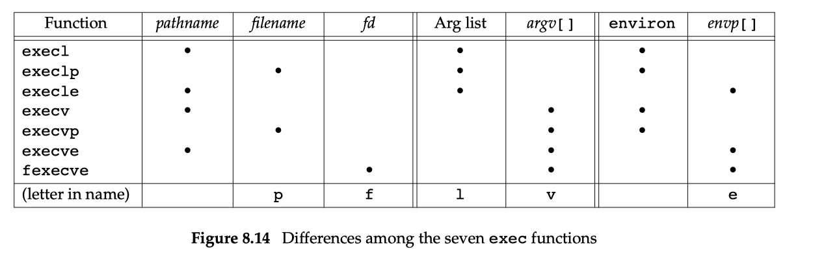
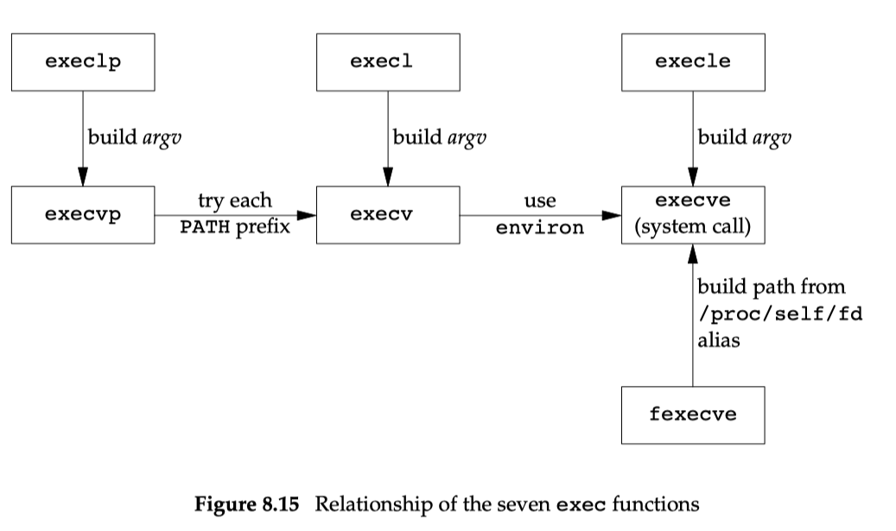
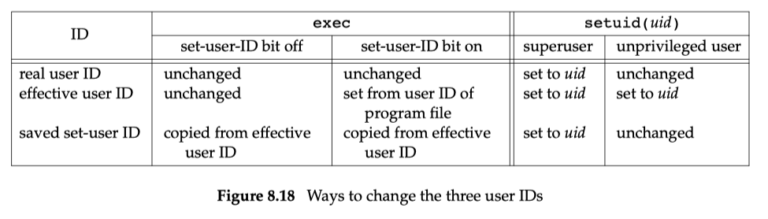
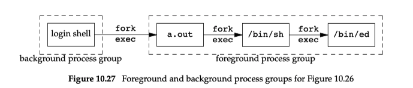

Advanced Programming in the Unix Environment
Table of Contents
- Advanced Programming in the Unix Environment
[47%]- DONE Chapter 1. UNIX System Overview
[12/12]- DONE 1.1 Introduction
- DONE 1.2 UNIX Architecture
- DONE 1.3 Logging in
- DONE 1.4 Files and Directories
- DONE 1.5 Input and Output - File Descriptors
- DONE 1.6 Programs and Processes
- DONE 1.7 Error Handling
- DONE 1.8 User identification
- DONE 1.9 Signals
- DONE 1.10 Time Values
- DONE 1.11 System calls and Library Functions
- DONE 1.12 Summary
- DONE Chapter 2. UNIX Standardization and Implementations
[10/10]- DONE 2.1 Introduction
- DONE 2.2 UNIX Standardization
- DONE 2.3 UNIX System Implementations
- DONE 2.4 Relationship of Standards and Implementations
- DONE 2.5 Limits
- DONE 2.6 Options
- DONE 2.7 Features Test Macros
- DONE 2.8 Primitive System Data Types
- DONE 2.9 Differences Between Standards
- DONE 2.10 Summary
- DONE Chapter 3. File I/O
[17/17]- DONE 3.1 Introduction
- DONE 3.2 File Descriptors
- DONE 3.3
openandopenatFunctions - DONE 3.4
creatFunction - DONE 3.5
closeFunction - DONE 3.6
lseekFunction - DONE 3.7
readFunction - DONE 3.8
writeFunction - DONE 3.9 I/O Efficiency
- DONE 3.10 File Sharing
- DONE 3.11 Atomic Operations
- DONE 3.12
dupanddup2Functions - DONE 3.13
sync,fsyncandfdatasyncFunctions - DONE 3.14
fcntlFunction - DONE 3.15
ioctlFunction - DONE 3.16
/dev/fd - DONE 3.17 Summary
- DONE Chapter 4. System Data Files and Information
[26/26]- DONE 4.1 Introduction
- DONE 4.2
stat,fstat,fstatat, andlstatFunctions - DONE 4.3 File Types
- DONE 4.4 Set-User-ID and Set-Group-ID
- DONE 4.5 File Access Permissions
- DONE 4.6 Ownership of New Files and Directories
- DONE
accessandfaccessatFunctions - DONE
umaskFunction - DONE
chmod,fchmod, andfchmodatFunctions - DONE Sticky Bit
- DONE
chown,fchown,fchownat, andlchownFunctions - DONE File Size
- DONE File Truncation
- DONE File Systems
- DONE
link,linkat,unlink,unlinkat, andremoveFunctions - DONE
renameandrenameatFunctions - DONE Symbolic Links
- DONE Creating and Reading Symbolic Links
- DONE File Times
- DONE
futimens,utimensat, andutimesFunctions - DONE
mkdir,mkdirat, andrmdirFunctions - DONE Reading Directories
- DONE
chidr,fchdirandgetcwdFunctions - DONE Device Special Files
- DONE Summary of File Access Permission Bits
- DONE Summary
- DONE Chapter 5. Standard I/O Library
[16/16]- DONE 5.1 Introduction
- DONE 5.2 Streams and FILE Objects
- DONE 5.3 Standard Input, Standard Output and Standard Error
- DONE 5.4 Buffering
- DONE 5.5 Opening a Stream
- DONE 5.6 Reading and Writing a Stream
- DONE 5.9 Line-at-a-Time I/O
- DONE 5.10 Standard I/O Efficiency
- DONE 5.11 Binary I/O
- DONE 5.12 Positioning a Stream
- DONE 5.13 Formated I/O
- DONE 5.14 Implementation Details
- DONE 5.15 Temporary Files
- DONE 5.16 Memory Streams
- DONE 5.17 Alternatives to Standard I/O
- DONE 5.18 Summary
- DONE Chapter 6. System Data Files and Information
[11/11] - DONE Chapter 7. Process Environment
[11/11]- DONE 7.1 Introduction
- DONE 7.2 main Function
- DONE 7.3 Process Termination
- DONE 7.5 Environment List
- DONE 7.6 Memory Layout of a C Program
- DONE 7.7 Shared Libraries
- DONE 7.8 Memory Allocation
- DONE 7.9 Environment Variable
- DONE 7.10
setjmpandlongjmpFunctions - DONE
getrlimitandsetrlimitFunctions - DONE Summary
- DONE Chapter 8. Process Control
[18/18]- DONE 8.1 Introduction
- DONE 8.2 Process Identifiers
- DONE 8.3
forkFunction - DONE 8.4
vforkFunction - DONE 8.5
exitFunction - DONE 8.6
waitandwaitpidFunctions - DONE 8.7
waitidFunction - DONE 8.8
wait3andwait4Functions - DONE 8.9 Race Conditions
- DONE 8.10
execFunctions - DONE 8.11 Changing User IDs and Group IDs
- DONE 8.12 Interpreter Files
- DONE 8.13
systemFunction - DONE 8.14 Process Accounting
- DONE 8.15 User Identification
- DONE 8.16 Process Scheduling
- DONE 8.17 Process Times
- DONE 8.18 Summary
- TODO Chapter 9. Process Relationships
[2/12]- DONE 9.1 Introduction
- DONE 9.2 Terminal Logins
- TODO 9.3 Network Logins
- TODO 9.4 Process Groups
- TODO 9.5 Sessions
- TODO 9.6 Controlling Terminal
- TODO 9.7
tcgetpgrp,tcsetpgrp, andtcgetsidFunctions - TODO 9.8 Job Control
- TODO 9.9 Shell Execution Programs
- TODO 9.10 Orphaned Process Groups
- TODO 9.11 FreeBSD Implementation
- TODO 9.12 Summary
- DONE Chapter 10. Signals
[23/23]- DONE 10.1 Introduction
- DONE 10.2 Signal Concepts
- DONE 10.3
signalFunction - DONE 10.4 Unreliable Signals
- DONE 10.5 Interrupted System Calls
- DONE 10.6 Reentrant Functions
- DONE 10.7
SIGCLDSemantics - DONE 10.8 Reliable-Signal Terminology and Semantics
- DONE 10.9
killandraiseFunctions - DONE 10.10
alarmandpauseFunctions - DONE 10.11 Signal Sets
- DONE 10.12
sigprocmaskFunction - DONE 10.13
sigpendingFunction - DONE 10.14
sigactionFunction - DONE 10.15
sigsetjmpandsiglongjmpFunctions - DONE 10.16
sigsuspendFunction - DONE 10.17
abortFunction - DONE 10.18
systemFunction - DONE 10.19
sleep,nanaosleep, andclock_nanosleepFunctions - DONE 10.20
sigqueueFunction - DONE 10.21 Job-Control Signals
- DONE 10.22 Signal Names and Numbers
- DONE 10.23 Summary
- DONE Chapter 11. Threads
[7/7] - TODO Chapter 12. Thread Control
[11/11] - TODO Chapter 13. Daemon Processes
[0/0] - TODO Chapter 14. Advanced I/O
[4/9] - TODO Chapter 15. Interprocess Communication
[0/16]- TODO 15.1 Introduction
- TODO 15.2 Pipes
- TODO 15.3
popenandpcloseFunctions - TODO 15.4 Coprocesses
- TODO 15.5 FIFOs
- TODO 15.6 XSI IPC
- TODO 15.6.1 Identifiers and Keys
- TODO 15.6.2 Permission Structure
- TODO 15.6.3 Configuration Limits
- TODO 15.6.4 Advantages and Disadvantages
- TODO 15.7 Message Queues
- TODO 15.8 Semaphores
- TODO 15.9 Shared Memory
- TODO 15.10 POSIX Semaphores
- TODO 15.11 Client-Server Properties
- TODO 15.12 Summary
- TODO Chapter 16. Network IPC: Sockets
[0/9] - TODO Chapter 17. Advanced IPC
[2/7] - TODO Chapter 18. Terminal I/O
[0/0] - TODO Chapter 19. Pseudo Terminals
[0/0] - TODO Chapter 20. A Database Library
[0/0] - TODO Chapter 21. Communication with a Network Printer
[0/0]
- DONE Chapter 1. UNIX System Overview
Advanced Programming in the Unix Environment [47%]
DONE Chapter 1. UNIX System Overview [12/12]
DONE 1.1 Introduction
DONE 1.2 UNIX Architecture
DONE 1.3 Logging in
- Login Name
DONE 1.4 Files and Directories
- File System
- Pathname
Example
#include <dirent.h> #include "apue.h" int main(int argc, char *argv[]) { DIR *dp; struct dirent *dirp; if (argc != 2) { err_quit("usage: ls directory_name")} if ((dp = opendir(argv[1])) == NULL) { err_sys("can't open %s", argv[1]); } while ((dirp = readdir(dp)) != NULL) { printf("%s\n", dirp->d_name); } closedir(dp); exit(0); }
DONE 1.5 Input and Output - File Descriptors
- Standard Input, Standard Output, and Standard Error
- Unbuffered I/O
Example
#include "apue.h" #define BUFFSIZE 4096 int main(void) { int n = 0; char buf[BUFFSIZE]; while ((n = read(STDIN_FILENO, buf, BUFFSIZE)) > 0) { if (write(STDOUT_FILENO, buf, n) != 0) { err_sys("write error"); } } if (n < 0) { err_sys("read error"); } return 0; }
- Standard I/O
Example
#include "apue.h" int main(void) { int c; while ((c = getc(stdin)) != EOF) { if (putc(c, stdout) == EOF) { err_sys("output error"); } } if (ferror(stdin)) { err_sys("input error"); } return 0; }
DONE 1.6 Programs and Processes
- Program
- Proceses and Process ID
Example
#include "apue.h" int main(void) { printf("uid = %d, gid = %d\n", getuid(), getgid()); return 0; }
- Process Control
Example
#include <sys/wait.h> #include "apue.h" int main(void) { char buf[MAXLINE]; /* from apue.h */ pid_t pid; int status; printf("%% "); /* print prompt (printf require %% to print %) */ while (fgets(buf, MAXLINE, stdin) != NULL) { if (buf[strlen(buf) - 1] == '\n') { buf[strlen(buf) - 1] = 0; /* replace newline with null */ } if ((pid = fork()) < 0) { err_sys("fork error"); } else if (pid == 0) { execlp(buf, buf, 0); err_ret("coulnd't excute: %s", buf); } /* parent */ if ((pid = waitpid(pid, &status, 0)) < 0) { err_sys("waitpid error"); } printf("%% "); } return 0; }
DONE 1.7 Error Handling
Example
#include <errno.h> #include "apue.h" int main(int argc, char *argv[]) { fprintf(stderr, "EACCESS: %s\n", strerror(EACCES)); errno = ENOENT; perror(argv[0]); return 0; }
DONE 1.8 User identification
- User ID
- Group ID
Example
#include "apue.h" int main(void) { printf("uid = %d, gid = %d\n", getuid(), getgid()); return 0; }
- Supplementary Group IDs
DONE 1.9 Signals
Process choices:
- Ignore
- default action
- provide call function (catch signal)
Example
#include <sys/types.h> #include <sys/wait.h> #include "apue.h" static void sig_int(int); /* our signal-catching function */ int main(void) { char buf[MAXLINE]; /* from apue.h */ pid_t pid; int status; if (signal(SIGINT, sig_int) == SIG_ERR) err_sys("signal error"); printf("%% "); /* print prompt (printf requires %% to print %) */ while (fgets(buf, MAXLINE, stdin) != NULL) { if (buf[strlen(buf) - 1] == '\n') buf[strlen(buf) - 1] = 0; /* replace newline with null */ if ((pid = fork()) < 0) { err_sys("fork error"); } else if (pid == 0) { execlp(buf, buf, 0); err_ret("couldn't execute: %s", buf); exit(127); } } exit(0); } void sig_int(int signo) { printf("interrupt\n%% "); }
DONE 1.10 Time Values
- Calendar time.
- Process time.
- Clock time
- User CPU time
- System CPU time
DONE 1.11 System calls and Library Functions
- Concepts:
- System calls:
- Can be learned with
man 2(Section 2 of Unix Programmer's Mannual)
- Can be learned with
- Library Functions:
- Can be learned with
man 3for general-purpose (Section 3 of Unix Programmer's Mannual) - These functions aren’t entry points into the kernel, although they may invoke one or more of the kernel’s system calls
- Can be learned with
- System calls:
- Distinction:
- the system calls usually cannot be replaced
- UNIX System provides to determine the current time and date
DONE 1.12 Summary
Exercises
- 1.1
- 1.2 53268 50922 was occupied
- 1.3 strerror: int, value transfer, cannnot be changed, global errno cannnot be forecast perror: pointer, can be changed the value point to, const set constant
- 1.4 2038, 231/(60*60*24*365)+1970 change time_t to u_64_t recompile the program
- 1.5 231/(60*60*24*100)=248.551348 days
DONE Chapter 2. UNIX Standardization and Implementations [10/10]
DONE 2.1 Introduction
DONE 2.2 UNIX Standardization
DONE 2.3 UNIX System Implementations
DONE 2.4 Relationship of Standards and Implementations
DONE 2.5 Limits
- Comipile-time limits
- Runtime limits
- DONE ISO C Limits
- DONE POSIX Limits
- Numerical limits:
LONG_BIT,SSIZE_MAX, andWORD_BIT - Minimum value：
- Maximum value:
_POSIX_CLOCKRES_MIN - Runtime increasable values:
CHARCLASS_NAME_MAX,COLL_WEIGHTS_MAX,LINE_MAX,NGROUPS_MAX, andRE_DUP_MAX - Runtime invariant values;
- Other invariant values:
NL_ARGMAX,NL_MSGMAX,NL_SETMAX, andNL_TEXTMAX; - Pathname variables values:
FIFLESIZEBITS,LINK_MAX,MAX_CANON,MAX_INPUT,NAME_MAX,PATH_MAX,PIPE_BUF, andSYMLINK_MAX
- Numerical limits:
- DONE XSI Limits
- Minimum values:
- Runtime invariant values, possibly indeterminate: IOV_MAX and PAGE_SIZE
- DONE
sysconf,pathconf, andfpathconfFunctions
#!/usr/bin/awk -f BEGIN { printf("#include \"apue.h\"\n") printf("#include <errno.h>\n") printf("#include <limits.h>\n") printf("\n") printf("static void pr_sysconf(char *, int);\n") printf("static void pr_pathconf(char *, char *, int);\n") printf("\n") printf("int\n") printf("main(int argc, char *argv[])\n") printf("{\n") printf("\tif (argc != 2)\n") printf("\t\terr_quit(\"usage: a.out <dirname>\");\n\n") FS="\t+" while (getline <"sysconf.sym" > 0) { printf("#ifdef %s\n", $1) printf("\tprintf(\"%s defined to be %%ld\\n\", (long)%s+0);\n", $1, $1) printf("#else\n") printf("\tprintf(\"no symbol for %s\\n\");\n", $1) printf("#endif\n") printf("#ifdef %s\n", $2) printf("\tpr_sysconf(\"%s =\", %s);\n", $1, $2) printf("#else\n") printf("\tprintf(\"no symbol for %s\\n\");\n", $2) printf("#endif\n") } close("sysconf.sym") while (getline <"pathconf.sym" > 0) { printf("#ifdef %s\n", $1) printf("\tprintf(\"%s defined to be %%ld\\n\", (long)%s+0);\n", $1, $1) printf("#else\n") printf("\tprintf(\"no symbol for %s\\n\");\n", $1) printf("#endif\n") printf("#ifdef %s\n", $2) printf("\tpr_pathconf(\"%s =\", argv[1], %s);\n", $1, $2) printf("#else\n") printf("\tprintf(\"no symbol for %s\\n\");\n", $2) printf("#endif\n") } close("pathconf.sym") exit } END { printf("\texit(0);\n") printf("}\n\n") printf("static void\n") printf("pr_sysconf(char *mesg, int name)\n") printf("{\n") printf("\tlong val;\n\n") printf("\tfputs(mesg, stdout);\n") printf("\terrno = 0;\n") printf("\tif ((val = sysconf(name)) < 0) {\n") printf("\t\tif (errno != 0) {\n") printf("\t\t\tif (errno == EINVAL)\n") printf("\t\t\t\tfputs(\" (not supported)\\n\", stdout);\n") printf("\t\t\telse\n") printf("\t\t\t\terr_sys(\"sysconf error\");\n") printf("\t\t} else {\n") printf("\t\t\tfputs(\" (no limit)\\n\", stdout);\n") printf("\t\t}\n") printf("\t} else {\n") printf("\t\tprintf(\" %%ld\\n\", val);\n") printf("\t}\n") printf("}\n\n") printf("static void\n") printf("pr_pathconf(char *mesg, char *path, int name)\n") printf("{\n") printf("\tlong val;\n") printf("\n") printf("\tfputs(mesg, stdout);\n") printf("\terrno = 0;\n") printf("\tif ((val = pathconf(path, name)) < 0) {\n") printf("\t\tif (errno != 0) {\n") printf("\t\t\tif (errno == EINVAL)\n") printf("\t\t\t\tfputs(\" (not supported)\\n\", stdout);\n") printf("\t\t\telse\n") printf("\t\t\t\terr_sys(\"pathconf error, path = %%s\", path);\n") printf("\t\t} else {\n") printf("\t\t\tfputs(\" (no limit)\\n\", stdout);\n") printf("\t\t}\n") printf("\t} else {\n") printf("\t\tprintf(\" %%ld\\n\", val);\n") printf("\t}\n") printf("}\n") }
- DONE Indeterminate Runtime Limits
#include "apue.h" #include <errno.h> #include <limits.h> #ifdef PATH_MAX static long pathmax = PATH_MAX; #else static long pathmax = 0; #endif static long posix_version = 0; static long xsi_version = 0; /* If PATH_MAX is indeterminate, no guarantee this is adequate */ #define PATH_MAX_GUESS 1024 char * path_alloc(size_t *sizep) /* also return allocated size, if nonnull */ { char *ptr; size_t size; if (posix_version == 0) posix_version = sysconf(_SC_VERSION); if (xsi_version == 0) xsi_version = sysconf(_SC_XOPEN_VERSION); if (pathmax == 0) { /* first time through */ errno = 0; if ((pathmax = pathconf("/", _PC_PATH_MAX)) < 0) { if (errno == 0) pathmax = PATH_MAX_GUESS; /* it's indeterminate */ else err_sys("pathconf error for _PC_PATH_MAX"); } else { pathmax++; /* add one since it's relative to root */ } } /* * Before POSIX.1-2001, we aren't guaranteed that PATH_MAX includes * the terminating null byte. Same goes for XPG3. */ if ((posix_version < 200112L) && (xsi_version < 4)) size = pathmax + 1; else size = pathmax; if ((ptr = malloc(size)) == NULL) err_sys("malloc error for pathname"); if (sizep != NULL) *sizep = size; return(ptr); }
#include "apue.h" #include <errno.h> #include <limits.h> #ifdef OPEN_MAX static long openmax = OPEN_MAX; #else static long openmax = 0; #endif /* * If OPEN_MAX is indeterminate, this might be inadequate. */ #define OPEN_MAX_GUESS 256 long open_max(void) { if (openmax == 0) { /* first time through */ errno = 0; if ((openmax = sysconf(_SC_OPEN_MAX)) < 0) { if (errno == 0) openmax = OPEN_MAX_GUESS; /* it's indeterminate */ else err_sys("sysconf error for _SC_OPEN_MAX"); } } return(openmax); }
DONE 2.6 Options
- Compile-time options are defined in
<unistd.h> - Runtime options are not associated with a file or a directory are idnetified with the
sysconffunction - Runtime options that are associated with a file or a directory are discovered by calling either the
pathconfor thefpathconffunction
DONE 2.7 Features Test Macros
cc -D_POSIX_C_SOURCE=200809L code.c
DONE 2.8 Primitive System Data Types
The header <sys/types.h> defines some implementation-dependent data types, called the primitive system data types.
DONE 2.9 Differences Between Standards
DONE 2.10 Summary
Exercises
- 2.1 #ifndef … #define … #endif
- 2.2
u_long, ushort, uint, u_quad_t, quad_t, qaddr_t, daddr_t, fixpt_t 2.3
#include <limits.h> #include <sys/resource.h> #include "apue.h" #define OPEN_MAX_GUESS 256 long open_max(void) { long openmax; struct rlimit rl; if ((openmax = sysconf(_SC_OPEN_MAX)) < 0 || openmax == LONG_MAX) { if (getrlimit(RLIMIT_NOFILE, &rl) < 0) { err_sys("can′t get file limit"); } if (rl.rlim_max == RLIM_INFINITY) openmax = OPEN_MAX_GUESS; else openmax = rl.rlim_max; } return (openmax); } int main() { printf("%ld\n", open_max()); }
DONE Chapter 3. File I/O [17/17]
DONE 3.1 Introduction
DONE 3.2 File Descriptors
To the kernel, all open file are referred to by file descriptors.
- 0: stdin
- 1: stdout
- 2: stderr
DONE 3.3 open and openat Functions
man 2 open
DONE 3.4 creat Function
man 2 creat
DONE 3.5 close Function
man 2 close
DONE 3.6 lseek Function
man 2 lseek
Example
#include "apue.h" int main(int argc, char *argv[]) { if (lseek(STDIN_FILENO, 0, SEEK_CUR) == -1) { printf("%s\n", strerror(errno)); } else { printf("seek OK\n"); } return 0; }
#include <fcntl.h> #include "apue.h" char buf1[] = "abcdefghij"; char buf2[] = "ABCDEFGHIJ"; int main(int argc, char *argv[]) { int fd; if ((fd = creat("file.hole", FILE_MODE)) < 0) { err_sys("creat error"); } if (write(fd, buf1, 10) != 10) { err_sys("buf1 write error"); } if (lseek(fd, 16384, SEEK_SET) == -1) { err_sys("lssek error: %s", strerror(errno)); } if (write(fd, buf2, 10) != 10) { err_sys("buf2 write error"); } return 0; }
DONE 3.7 read Function
man 2 read
DONE 3.8 write Function
man 2 write
DONE 3.9 I/O Efficiency
#include <fcntl.h> #include <sys/stat.h> #include "apue.h" int main(int argc, char *argv[]) { int n; char buf[BUFSIZ]; int in = open(argv[1], O_RDONLY); int out = open(argv[2], O_CREAT | O_RDWR, 0644); while ((n = read(in, buf, BUFSIZ)) > 0) { if (write(out, buf, n) != n) { err_sys("write error"); } } close(in); close(out); if (n < 0) { err_sys("read error"); } return 0; }
DONE 3.10 File Sharing
- Every process has an entry in the process table.
- The kernel maintains a file table for all open files.
- Each open file(or device) has a v-node structure that contains information about the type of file
and pointers to functions that operate on the file;
DONE 3.11 Atomic Operations
- Appending to a File
preadandpwriteFunctions Calling pread is equivalent to calling lseek followed by a call to read, with the following exceptions.- There is no way to interrupt the two operations that occur when we call pread.
- The current file offset is not updated.
- Creating a File atomic operation refers to an operation that might be composed of multiple steps
DONE 3.12 dup and dup2 Functions
man 2 dup
dup(fd)~ =fcntl(fd, F_DUPFD, 0)~dup2(fd, fd2)= = =close(fd2); fcntl(fd, F_DUPFD, fd2);
Differences:
- dup2 is an atomic operation, whereas the alternate form involves two function calls.
- errno differences
DONE 3.13 sync, fsync and fdatasync Functions
man 2 sync
DONE 3.14 fcntl Function
man 2 fcntl
The fcntl function is used for five different purposes.
- Duplicate an existing descriptor (cmd =
F_DUPFDorF_DUPFD_CLOEXEC) - Get/set file descriptor flags (cmd =
F_GETFDorF_SETFD) - Get/set file status flags (cmd =
F_GETFLorF_SETFL) - Get/set asynchronous I/O ownership (cmd =
F_GETOWNorF_SETOWN) - Get/set record locks (cmd =
F_GETLK,F_SETLK, orF_SETLKW)
Example
#include <fcntl.h> #include "apue.h" int main(int argc, char *argv[]) { int val; if (argc != 2) { err_quit("usage: ./a.out <descriptor#"); } if ((val = fcntl(atoi(argv[1]), F_GETFL, 0)) < 0) { err_sys("fcntl error for %d: %s", atoi(argv[1]), strerror(errno)); } switch (val & O_ACCMODE) { case O_RDONLY: printf("read only"); break; case O_WRONLY: printf("write only"); break; case O_RDWR: printf("read write"); break; default: err_dump("unknown access mode"); } if (val & O_APPEND) printf(", append"); if (val & O_NONBLOCK) printf(", nonblocking"); if (val & O_SYNC) printf(", synchronous writes"); #if !defined(_POSIX_C_SOURCE) && defined(O_FSYNC) && (O_FSYNC != O_SYNC) if (val & O_FSYNC) printf(", synchronous writes"); #endif putchar('\n'); exit(0); }
#include <fcntl.h> #include "apue.h" void set_fl(int fd, int flags) /* flags are file status flags to turn on */ { int val; if ((val = fcntl(fd, F_GETFL, 0)) < 0) { err_sys("fcntl F_GETFL: %s", strerror(errno)); } val |= flags; /* turn on flags */ if (fcntl(fd, F_SETFL, val) < 0) { err_sys("fcntl F_SETFL: %s", strerror(errno)); } }
DONE 3.15 ioctl Function
man 2 ioctl
DONE 3.16 /dev/fd
DONE 3.17 Summary
Exercises
- 3.1 All disk I/O need to via buffer block.
read/writealways be buffered via kernel automatically, unbuffered only means user process; 3.2
#include <fcntl.h> #include "apue.h" int my_dup2(int fd, int fd2) { if (fd2 > open_max()) { return -1; } /* * use lseek to verify whether fd is valid */ if (lseek(fd, 0, SEEK_CUR) < 0 && errno == EBADF) { printf("file descriptor: %d is not valid, %m\n", fd); return -1; } /* return if fd2 is fd */ if (fd == fd2) { return fd2; } close(fd2); long i = 0; for (i = 0; i < open_max(); i++) { i = dup(fd); if (i == fd2) { break; } } /* for (; i > fd; i--) { */ /* close(i); */ /* } */ return (fd2); } int main(int argc, char *argv[]) { if (argc < 2) { err_sys("usage: ./a.out <string>"); } printf("%ld\n", open_max()); my_dup2(STDERR_FILENO, 5); for (long i = 1; i < argc; ++i) { write(5, argv[i], strlen(argv[i])); write(5, "\n", 1); } close(5); return 0; }
- 3.3 F_SETFD: affect fd1 file descriptor
F_SETFL: affect fd1 and fd2 file table - 3.4 without
if (fd > 2), there are 4 descriptors pointer to file, otherwise , there will be 3 - 3.5
./a.out > outfile 2>&1: stdout> outfile, stderr => stdout => outfile =./a.out 2>&1 > outfile: stderr => stdout, stdout => outfile 3.6
#include <fcntl.h> #include "apue.h" int main(int argc, char *argv[argc]) { int fd = 0; int ret = 0; char buf[MAXLINE] = {0}; fd = open("./a.txt", O_CREAT | O_RDWR | O_APPEND); if (fd < 0) { err_sys("open: %s", strerror(errno)); } ret = write(fd, "hello world", 11); if (ret < 0) { err_sys("write: %s", strerror(errno)); } ret = lseek(fd, 0, SEEK_SET); while ((ret = read(fd, buf, MAXLINE))) { ; } if (ret == -1) { err_sys("read: %s", strerror(errno)); } printf("read: %s\n", buf); ret = lseek(fd, -18, SEEK_CUR); ret = write(fd, "hello world", 11); if (ret < 0) { err_sys("write: %s", strerror(errno)); } ret = lseek(fd, 0, SEEK_SET); while ((ret = read(fd, buf, MAXLINE)) > 0) { ; } if (ret == -1) { err_sys("read: %s", strerror(errno)); } printf("read: %s\n", buf); ret = lseek(fd, 10, SEEK_SET); while ((ret = read(fd, buf, MAXLINE)) > 0) { ; } if (ret == -1) { err_sys("read: %s", strerror(errno)); } printf("read: %s\n", buf); return 0; }
DONE Chapter 4. System Data Files and Information [26/26]
DONE 4.1 Introduction
DONE 4.2 stat, fstat, fstatat, and lstat Functions
man 2 stat
DONE 4.3 File Types
- Regular file. There is no distinction to the UNIX kernel whether this data is text or binary.
- Directory file.
- Block special file.
- Character special file. providing unbuffered I/O access.
- FIFO.
- Socket
- Symbolic link.
Example
#include <sys/stat.h> #include "apue.h" int main(int argc, char *argv[argc]) { int i; struct stat buf; char * ptr; for (i = 1; i < argc; ++i) { printf("%s: ", argv[i]); if (lstat(argv[i], &buf) < 0) { err_ret("%s", argv[i], strerror(errno)); } if (S_ISREG(buf.st_mode)) { ptr = "regular"; } else if (S_ISLNK(buf.st_mode)) { ptr = "symbolic link"; } else if (S_ISSOCK(buf.st_mode)) { ptr = "socket"; } else if (S_ISBLK(buf.st_mode)) { ptr = "block special"; } else if (S_ISDIR(buf.st_mode)) { ptr = "directory"; } else if (S_ISCHR(buf.st_mode)) { ptr = "character special"; } else if (S_ISFIFO(buf.st_mode)) { ptr = "named pipe(fifo)"; } else { ptr = "** unknown mode **"; } printf("%s\n", ptr); } return 0; }
DONE 4.4 Set-User-ID and Set-Group-ID
| IDs | using for |
|---|---|
| real user ID | who we really are |
| real group ID | |
| effective user ID | |
| effective group ID | used for file access permission checks |
| supplementary group IDs | |
| save set-user-ID | saved by exec functions |
| save set-group-ID |
DONE 4.5 File Access Permissions
| st_mode mask | Meaning |
|---|---|
| S_IRUSR | user-read |
| S_IWUSR | user-write |
| S_IXUSR | user-execute |
| S_IRGRP | group-read |
| S_IWGRP | group-write |
| S_IXGRP | group-execute |
| S_IROTH | other-read |
| S_IWOTH | other-write |
| S_IXOTH | other-execute |
DONE 4.6 Ownership of New Files and Directories
DONE access and faccessat Functions
man 2 access
Example
#include <fcntl.h> #include "apue.h" int main(int argc, char *argv[]) { if (argc != 2) { err_quit("usage: a.out <pathname>"); } if (access(argv[1], R_OK) < 0) { err_ret("access error for %s", argv[1]); } else { printf("read access OK\n"); } int fd; if ((fd = open(argv[1], O_RDONLY)) < 0) { err_ret("open error for %s", argv[1]); } else { printf("open for reading OK\n"); close(fd); } return 0; }
DONE umask Function
man 2 umask
Example
#include <fcntl.h> #include "apue.h" #define RWRWRW (S_IRUSR | S_IWUSR | S_IRGRP | S_IWGRP | S_IROTH | S_IWOTH) int main(int argc, char *argv[argc]) { umask(0); if (creat("foo", RWRWRW) < 0) { err_sys("creat \"foo\": %s", strerror(errno)); } umask(S_IRGRP | S_IWGRP | S_IROTH | S_IWOTH); if (creat("bar", RWRWRW) < 0) { err_sys("creat \"bar\": %s", strerror(errno)); } return 0; }
DONE chmod, fchmod, and fchmodat Functions
man 2 chmod
Example
#include "apue.h" int main(int argc, char *argv[]) { struct stat statbuf; /* turn on set-group-ID and turn off group-execute */ if (stat("foo", &statbuf) < 0) { err_sys("stat error for foo"); } if (chmod("foo", (statbuf.st_mode & ~S_IXGRP) | S_ISGID) < 0) { err_sys("chmod error for foo"); } /* set absolute mode to "rw-r--r--" */ if (chmod("bar", S_IRUSR | S_IWUSR | S_IRGRP | S_IROTH) < 0) { err_sys("chmod error for bar"); } return 0; }
DONE Sticky Bit
If it was set for an executable program file, then the first time the program was executed,
a copy of the program’s text was saved in the swap area when the process terminated
DONE chown, fchown, fchownat, and lchown Functions
man 2 chown
DONE File Size
struct stat.st_size
DONE File Truncation
man 2 truncate
DONE File Systems
- Only when the link count goes to 0 can the file be deleted.
struct stat.st_nlink - The other type of link is called a symbolic link. With a symbolic link, the actual contents of the file—the data blocks—store the name of the file that the symbolic link points to.
- The i-node contains all the information about the file.
Most of the information in the stat structure is obtained from the i-node, exclude filename and i-node number. - a directory entry can’t refer to an i-node in a different file system.
- When renaming a file without changing file systems, the actual contents of the file need not be moved—all that needs to be done is to add a new directory entry that points to the existing i-node and then unlink the old directory entry.
DONE link, linkat, unlink, unlinkat, and remove Functions
man 2 link
Example
#include <errno.h> #include <fcntl.h> #include "apue.h" int main(int argc, char *argv[]) { if (open("tempfile", O_RDWR) < 0) { err_sys("open: %s", strerror(errno)); } if (unlink("tempfile") < 0) { err_sys("unlink: %s", strerror(errno)); } printf("file unlinked\n"); sleep(15); printf("done\n"); return 0; }
DONE rename and renameat Functions
man 2 rename
- If oldname specifies a file that is not a directory, then we are renaming a file or a symbolic link.
- If oldname specifies a directory, then we are renaming a directory.
- If either oldname or newname refers to a symbolic link, then the link itself is processed, not the file to which it resolves.
- We can’t rename dot or dot-dot.
- As a special case, if oldname and newname refer to the same file, the function returns successfully without changing anything.
DONE Symbolic Links
- Hard links normally require that the link and the file reside in the same file system.
- Only the superuser can create a hard link to a directory (when supported by the underlying file system).
DONE Creating and Reading Symbolic Links
man 2 symlink
man 2 readlink
DONE File Times
DONE futimens, utimensat, and utimes Functions
POSIX.1
man 2 futimens
XSI
man 2 utimes
Example
#include <fcntl.h> #include <sys/stat.h> #include "apue.h" int main(int argc, char *argv[argc]) { int i, fd; struct stat statbuf; struct timespec times[2]; for (i = 0; i < argc; ++i) { if (stat(argv[i], &statbuf) < 0) { /* fetch current times */ err_ret("%s: %s", argv[i], strerror(errno)); continue; } if ((fd = open(argv[i], O_RDWR | O_TRUNC)) < 0) { /* truncate */ err_ret("%s: %s", argv[i], strerror(errno)); continue; } times[0] = statbuf.st_atimespec; times[1] = statbuf.st_mtimespec; if (futimens(fd, times) < 0) { /* reset times */ err_ret("%s: %s", argv[i], strerror(errno)); } close(fd); } return 0; }
DONE mkdir, mkdirat, and rmdir Functions
Creat:
man 2 mkdir
Remove:
man 2 rmdir
DONE Reading Directories
man 3 opendir
DONE chidr, fchdir and getcwd Functions
man 2 chdir
Example
#include "apue.h" int main(int argc, char *argv[argc]) { if (chdir("/tmp") < 0) { perror("chdir: "); } printf("chdir to /tmp SUCCESS\n"); return 0; }
man 3 getcwd
Example
#include "apue.h" int main(int argc, char *argv[argc]) { char * ptr; size_t size; if (chdir("/usr/local") < 0) { err_sys("chdir: %s\n", strerror(errno)); } ptr = path_alloc(&size); if (getcwd(ptr, size) == NULL) { err_sys("getcwd: %s\n", ptr); } printf("cwd = %s\n", ptr); return 0; }
DONE Device Special Files
Example
#include "apue.h" #ifdef SOLARIS #include <sys/mkdev.h> #endif // SOLARIS int main(int argc, char *argv[]) { int i; struct stat buf; for (i = 0; i < argc; i++) { printf("%s: ", argv[i]); if (stat(argv[i], &buf) < 0) { err_ret("stat error"); continue; } printf("dev = %d/%d", MAJOR(buf.st_dev), MINOR(buf.st_dev)); if (S_ISCHR(buf.st_mode) || S_ISBLK(buf.st_mode)) { printf(" (%s) rdev = %d/%d", (S_ISCHR(buf.st_mode)) ? "character" : "block", major(buf.st_mode), minor(buf.st_rdev)); } printf("\n"); } return 0; }
DONE Summary of File Access Permission Bits
S_IRWXU = S_IRUSR | S_IWUSR | S_IXUSR S_IRWXG = S_IRGRP | S_IWGRP | S_IXGRP S_IRWXO = S_IROTH | S_IWOTH | S_IXOTH
DONE Summary
Exercises
4.1
#include "apue.h" int main(int argc, char *argv[]) { int i; struct stat buf; char * ptr; for (i = 1; i < argc; i++) { printf("%s: ", argv[i]); if (stat(argv[i], &buf) < 0) { err_ret("lstat error"); continue; } if (S_ISREG(buf.st_mode)) ptr = "regular"; else if (S_ISDIR(buf.st_mode)) ptr = "directory"; else if (S_ISCHR(buf.st_mode)) ptr = "character special"; else if (S_ISBLK(buf.st_mode)) ptr = "block special"; else if (S_ISFIFO(buf.st_mode)) ptr = "fifo"; else if (S_ISLNK(buf.st_mode)) ptr = "symbolic link"; else if (S_ISSOCK(buf.st_mode)) ptr = "socket"; else ptr = "** unknown mode **"; printf("%s\n", ptr); } exit(0); }
before modification: symbolic link after modification: regular
- 4.2 default permissions:
---------- - 4.3
catget : Permission denied - 4.4 nothing changed.
- 4.5 directory always shoud be entries for . and .. the size of symbolic link should be the size of the file contained in.
4.6
#include <fcntl.h> #include "apue.h" int main(int argc, char *argv[]) { int in, out; char buf[BUFSIZ]; struct stat stbuf = {0}; size_t l_size; if (stat("src.txt", &stbuf) < 0) { err_sys("stat: %s", strerror(errno)); } l_size = stbuf.st_size; if ((in = open("src.txt", O_RDONLY)) < 0 || (out = open("dst.txt", O_CREAT | O_RDWR, FILE_MODE)) < 0) { err_sys("open: %s", strerror(errno)); } size_t l_sum = 0; size_t l_cur = 0; while ((l_cur = read(in, buf, BUFSIZ)) > 0) { l_sum += l_cur; if (write(out, buf, l_cur) != l_cur) { err_sys("write: %s", strerror(errno)); } } close(in); close(out); return 0; }
- 4.7 default access permissions are different
- 4.8
ducheck the file/directory/path space instead of disk , and may need path permissions. - 4.9 it's not the last link to the file.
- 4.10 recursive depth number
4.11
#include <dirent.h> #include <errno.h> #include <limits.h> #include "apue.h" /* function type that is called for each filename */ typedef int Myfunc(const char *fpath, const struct stat *sb, int typeflag); static Myfunc myfunc; static int myftw(const char *dirpath, Myfunc *func); static int dopath(const char *dirname, Myfunc *func); static long nreg, ndir, nblk, nchr, nfifo, nslink, nsock, ntot; int main(int argc, char *argv[]) { int ret; if (argc != 2) { err_quit("usage: %s <starting-pathname>", argv[0]); } ret = myftw(argv[1], myfunc); ntot = nreg + ndir + nblk + nchr + nfifo + nslink + nsock; if (ntot == 0) { ntot = 1; } printf("regular files = %7ld, %5.2f %%\n", nreg, nreg * 100.0 / ntot); printf("directories = %7ld, %5.2f %%\n", ndir, ndir * 100.0 / ntot); printf("block special = %7ld, %5.2f %%\n", nblk, nblk * 100.0 / ntot); printf("char special = %7ld, %5.2f %%\n", nchr, nchr * 100.0 / ntot); printf("FIFOs = %7ld, %5.2f %%\n", nfifo, nfifo * 100.0 / ntot); printf("symbolic links = %7ld, %5.2f %%\n", nslink, nslink * 100.0 / ntot); printf("sockets = %7ld, %5.2f %%\n", nsock, nsock * 100.0 / ntot); return 0; } /* * Descend through the hierarchy, starting at "pathname". * The caller's func() is called for every file. */ #define FTW_F 1 /* file other than directory */ #define FTW_D 2 /* directory */ #define FTW_DNR 3 /* dirctory that cant'be read */ #define FTW_NS 4 /* file that we can't stat */ static size_t pathlen; static int myftw(const char *pathname, Myfunc *func) { char *fullpath = path_alloc(&pathlen); /* malloc PATH_MAX+1 bytes */ if (pathlen <= strlen(pathname)) { pathlen = strlen(pathname) * 2; if ((fullpath = realloc(fullpath, pathlen)) == NULL) { err_sys("realloc %s", strerror(errno)); } } return (dopath(pathname, func)); } /* * Descend through the hierarchy, starting at "fullpath". * If "fullpath" is anything other than a directory, we lstat() it, * call func(), and return. For a directory, we call ourself * recursively for each name in the directory. */ /* we return whatever func() returns */ static int dopath(const char *pathname, Myfunc *func) { struct stat statbuf; struct dirent *dirp; DIR * dp; int ret, n; size_t l = 0; char * cwd = path_alloc(&l); chdir(pathname); getcwd(cwd, l); #ifdef DEBUG printf("%s\n", cwd); #endif if ((dp = opendir(".")) == NULL) { /* can't read directory */ return (func(pathname, &statbuf, FTW_DNR)); } while ((dirp = readdir(dp)) != NULL) { if ((strcmp(dirp->d_name, ".") == 0) || (strcmp(dirp->d_name, "..") == 0)) { continue; /* ignore dot and dot-dot */ } if (lstat(dirp->d_name, &statbuf) < 0) { /* stat error */ func(dirp->d_name, &statbuf, FTW_NS); } if (S_ISDIR(statbuf.st_mode) == 0) { /* not a directory */ func(dirp->d_name, &statbuf, FTW_F); } else { func(dirp->d_name, &statbuf, FTW_D); /* chdir(dirp->d_name); */ if ((ret = dopath(dirp->d_name, func)) != 0) { break; } /* chdir(".."); */ getcwd(cwd, l); } } if (closedir(dp) < 0) { err_ret("%s: %s", cwd, strerror(errno)); } return (ret); } static int myfunc(const char *pathname, const struct stat *statptr, int type) { switch (type) { case FTW_F: switch (statptr->st_mode & S_IFMT) { case S_IFREG: nreg++; break; case S_IFBLK: nblk++; break; case S_IFCHR: nchr++; break; case S_IFIFO: nfifo++; break; case S_IFLNK: nslink++; break; case S_IFSOCK: nsock++; break; case S_IFDIR: err_dump("for S_IFDIR for %s", pathname); default: break; } break; case FTW_D: ndir++; break; case FTW_DNR: err_dump("%s: %s", pathname, strerror(errno)); break; case FTW_NS: err_dump("stat error for %s", pathname); break; default: err_dump("unknown type %d for pathname %s", type, pathname); } return (0); }
- 4.12 FTP
- 4.13
statfirst, set timespec array to current time that you expect not change, and the other to the value you want. - 4.14 access time is the last read time
modify time is last received - 4.15 The change time isn't stored because, even if it was stored, you wouldn't be able to set it to the original time. You cannot cheat the change time, it is always based on when the inode data was actually changed.
Depending on the utility (tar or cpio), you can tell it to keep the original access and/or modify times. For example, tar by default maintains the original modify time but you can use the -m switch to set it to extraction time. The access time is always set to extraction time. 4.16
#include <fcntl.h> #include "apue.h" int main(int argc, char *argv[argc]) { const char *dirname = "testdir"; size_t pathmax = pathconf(".", _PC_PATH_MAX); printf("pathmax: %ld\n", pathmax); char path[pathmax]; size_t curlen; strcpy(path, dirname); for (;;) { curlen = strlen(getcwd(path, pathmax)) + strlen(dirname); if (curlen <= pathmax) { if (mkdir(dirname, 0777) < 0) { printf("mkdir: %s\n", strerror(errno)); return -1; } sprintf(path, "/%s", dirname); chdir(dirname); } else { break; } } printf("curlen = %ld\n", curlen); return 0; }
4.17
#include <fcntl.h> #include "apue.h" int main(int argc, char *argv[argc]) { char *path = "/dev/fd/1"; int fd; int ret; if ((ret = unlink(path)) < 0) { err_quit("unlink: %s\n", strerror(errno)); } if ((fd = creat(path, FILE_MODE)) < 0) { err_quit("creat: %s\n", strerror(errno)); } return 0; }
unlink: Operation not permitted
DONE Chapter 5. Standard I/O Library [16/16]
DONE 5.1 Introduction
This library is specified by the ISO C standard because it has been implemented on many operating systems other than the UNIX System.
DONE 5.2 Streams and FILE Objects
man 3 fwide
DONE 5.3 Standard Input, Standard Output and Standard Error
STDIN_FILENO, STDOUT_FILENO, STDERR_FILENO
DONE 5.4 Buffering
Three types of buffering are provided:
- Fully buffered.
In this case, actual I/O takes place when the standard I/O buffer is filled. - Line buffered.
In this case, the standard I/O library performs I/O when a newline character is encountered on input or output. - Unbuffered.
ISO C requires the following buffering characteristics:
- Standard input and standard output are fully buffered, if and only if they do not refer to an interactive device.
- Standard error is never fully buffered.
Most implementations default to the following types of buffering:
- Standard error is always unbuffered.
- All other streams are line buffered if they refer to a terminal device; otherwise, they are fully buffered.
man 3 setbuf
man 3 fflush
DONE 5.5 Opening a Stream
man 3 fopen
man 3 fclose
DONE 5.6 Reading and Writing a Stream
Three types of unformatted I/O:
- Character-at-a-time I/O.
- Line-at-a-time I/O.
- Direct I/O.
5.7 ** DONE Input Functions
man 3 getc
- The argument to getc should not be an expression with side effects, because it could be evaluated more than once.
- Since fgetc is guaranteed to be a function, we can take its address. This allows us to pass the address of fgetc as an argument to another function.
- Calls to fgetc probably take longer than calls to getc, as it usually takes more time to call a function.
In most implementations, two flags are maintained for each stream in the FILE object:
man 3 ferror
- An error flag
- An end-of file flagp
After reading from a stream, we can push back characters by calling ungetc.
5.8 ** DONE Output Functions
man 3 putc
DONE 5.9 Line-at-a-Time I/O
man fgets
DONE 5.10 Standard I/O Efficiency
#include "apue.h" int main(void) { int c; while ((c = getc(stdin)) != EOF) { if (putc(c, stdout) == EOF) err_sys("output error: %s", strerror(errno)); } if (ferror(stdin)) err_sys("input error: %s", strerror(errno)); return 0; }
#include "apue.h" int main(int argc, char *argv[argc]) { char buf[MAXLINE]; while (fgets(buf, MAXLINE, stdin) != NULL) if (fputs(buf, stdout) == EOF) err_sys("output error"); if (ferror(stdin)) err_sys("input error: %s", strerror(errno)); return 0; }
DONE 5.11 Binary I/O
man fread
DONE 5.12 Positioning a Stream
Three way to position a standard I/O stream:
ftellandfseekftelloandfseekofgetposandfsetpos
When porting applications to non-UNIX systems, use fgetpos and fsetpos.
#include <stdio.h> int fgetpos(FILE *restrict stream, fpos_t *restrict pos); int fseek(FILE *stream, long offset, int whence); int fseeko(FILE *stream, off_t offset, int whence); int fsetpos(FILE *stream, const fpos_t *pos); long ftell(FILE *stream); off_t ftello(FILE *stream); void rewind(FILE *stream);
DONE 5.13 Formated I/O
man 3 printf
| Flag | Description |
|---|---|
| ' | (apostrophe) format integer with thousands grouping characters |
| - | left justify |
| + | always display sign of a signed conversion |
| (space) | prefix by a space if no sign is generated |
| \# | convert using alternative form(include 0x prefix for hexadecimal format, for example) |
| 0 | prefix with leading zeros instead of padding with spaces |
| Length modifer | Description |
|---|---|
| hh | signed or unsigned char |
| h | sigend or unsigned short |
| l | signed or unsigned long or wide character |
| ll | signed or unsigned long long |
| j | inmax_t or uintmax_t |
| z | size_t |
| t | ptrdiff_t |
| L | long double |
| Conversion type | Description |
|---|---|
| d,i | signed decimal |
| o | unsigned octal |
| u | unsigned decimal |
| x,X | unsigned hexadecimal |
| f,F | double floating-point number |
| e,E | double floating-point number in exponential format |
| g,G | interpreted as f, F, e, or E, depending on value converted |
| a,A | double floating-point number in hexadecimal exponential format |
| c | character (with 1 length modifier, wide character) |
| s | string(with 1 length modifier, wide character string) |
| p | pointer to a void |
| n | pointer to a signed integer into which is written the number of characters written so far |
| % | a % character |
| C | wide chracter(XSI option, equivalent to lc) |
| S | wide chracter string(XSI option, equivalent to ls) |
Formatted Input
man 3 scanf
| Conversion type | Description |
|---|---|
| d | signed decimal, base 10 |
| i | signed decimal, base determined by format of input |
| o | unsigned octal(input optionally signed) |
| u | unsigned decimal, base 10(input optionally signed) |
| x,X | unsigned hexadecimal(input optionally signed) |
| a,A,e,E,f,F,g,G | floating-point number |
| c | character (with 1 length modifier, wide character) |
| s | string(with 1 length modifier, wide character string) |
| [ | mathches a sequence of listed characters, ending with ] |
| [^ | mathches all characters except the ones listed, ending with ] |
| p | pointer to a void |
| n | pointer to a signed integer into which is written the number of characters written so far |
| % | a % character |
| C | wide chracter(XSI option, equivalent to lc) |
| S | wide chracter string(XSI option, equivalent to ls) |
*
DONE 5.14 Implementation Details
man 3 fileno
Example
#include "apue.h" void pr_stdio(const char *, FILE *); int is_unbuffered(FILE *); int is_linebuffered(FILE *); int buffer_size(FILE *); int main(void) { FILE *fp; fputs("enter any character\n", stdout); if (getchar() == EOF) { err_sys("getchar: %s\n", strerror(errno)); } fputs("one line to standard error\n", stderr); pr_stdio("stdin", stdin); pr_stdio("stdout", stdout); pr_stdio("stderr", stderr); if ((fp = fopen("/etc/passwd", "r")) == NULL) err_sys("fopen: %s\n", strerror(errno)); if (getc(fp) == EOF) err_sys("getc: %s\n", strerror(errno)); exit(0); } void pr_stdio(const char *name, FILE *fp) { printf("stream = %s, ", name); if (is_unbuffered(fp)) printf("unbuffered"); else if (is_linebuffered(fp)) printf("line buffered"); else /* if neither or above */ printf("fully buffered"); printf(", buffer size = %d\n", buffer_size(fp)); } /* * The following is nonportable */ #if defined(_IO_UNBUFFERED) int is_unbuffered(FILE *fp) { return (fp->flags & _IO_UNBUFFERED); } int is_linebuffered(FILE *fp) { return (fp->flags & _IO_LINE_BUF); } int buffer_size(FILE *fp) { return (fp->_IO_buf_end - fp->_IO_buf_base); } #elif defined(__SNBF) int is_unbuffered(FILE *fp) { return (fp->_flags & __SNBF); } int is_linebuffered(FILE *fp) { return (fp->_flags & __SLBF); } int buffer_size(FILE *fp) { return (fp->_bf._size); } #elif defined(_IONBF) #ifdef _LP64 #define _flag __pad[4] #define _ptr __pad[1] #define _base __pad[2] #endif int is_unbuffered(FILE *fp) { return (fp->_flag & _IONBF); } int is_linebuffered(FILE *fp) { return (fp->_flag & _IOLBF); } int buffer_size(FILE *fp) { #ifdef _LP64 return (fp->_base - fp->_ptr); #else return (BUFSIZ); /* just a guess */ #endif } #else #error unknown stdio implementation; #endif
DONE 5.15 Temporary Files
man 3 tmpnam
Example
#include "apue.h" int main(void) { char name[L_tmpnam], line[MAXLINE]; FILE *fp; printf("%s\n", tmpnam(NULL)); /* first temp name */ tmpnam(name); /* second temp name */ printf("%s\n", name); if ((fp = tmpfile()) == NULL) /* create temp file */ err_sys("tmpfile: %s\n", strerror(errno)); fputs("one line of output\n", fp); /* write to temp file */ rewind(fp); if (fgets(line, sizeof(line), fp) == NULL) err_sys("fgets: %s\n", strerror(errno)); fputs(line, stdout); return 0; }
man 3 mkdtemp
Example
#include "apue.h" void make_temp(char *template); int main(int argc, char *argv[argc]) { char good_template[] = "/tmp/dirXXXX"; /* right way */ char *bad_template = "/tmp/dir/XXXX"; /* bad way */ printf("trying to create first temp file ...\n"); make_temp(good_template); printf("trying to create second temp file ...\n"); make_temp(bad_template); return 0; } void make_temp(char *template) { int fd; struct stat sbuf; if ((fd = mkstemp(template)) < 0) err_sys("create temp: %s\n", strerror(errno)); printf("temp name = %s\n", template); close(fd); if (stat(template, &sbuf) < 0) { err_sys("stat: %s\n", strerror(errno)); } else { printf("file exists\n"); unlink(template); } }
DONE 5.16 Memory Streams
man 3 fmemopen
Example
#include "apue.h" #define BSZ 48 int main() { FILE *fp; char buf[BSZ]; memset(buf, 'a', BSZ - 2); buf[BSZ - 2] = '\0'; buf[BSZ - 1] = 'X'; if ((fp = fmemopen(buf, BSZ, "w+")) == NULL) err_sys("fmemopen failed"); printf("initial buffer contents: %s\n", buf); fprintf(fp, "hello, world"); printf("before flush: %s\n", buf); fflush(fp); printf("after fflush: %s\n", buf); printf("len of string in buf = %ld\n", (long)strlen(buf)); memset(buf, 'b', BSZ - 2); buf[BSZ - 2] = '\0'; buf[BSZ - 1] = 'X'; fprintf(fp, "hello, world"); fseek(fp, 0, SEEK_SET); printf("after fseek: %s\n", buf); printf("len of string in buf = %ld\n", (long)strlen(buf)); memset(buf, 'c', BSZ - 2); buf[BSZ - 2] = '\0'; buf[BSZ - 1] = 'X'; fprintf(fp, "hello, world"); fclose(fp); printf("after fclose: %s\n", buf); printf("len of string in buf = %ld\n", (long)strlen(buf)); return (0); }
linux result:
initial buffer contents:
before flush:
after fflush: hello, world
len of string in buf = 12
after fseek: bbbbbbbbbbbbhello, world
len of string in buf = 24
after fclose: hello, worldcccccccccccccccccccccccccccccccccc
len of string in buf = 46
The other two functions:
man open_memstream
DONE 5.17 Alternatives to Standard I/O
The standard I/O library is not perfect. some in the basic design, but most in the various implementations.
DONE 5.18 Summary
Exercises
3.1
#include "apue.h" void setbuf_(FILE *restrict stream, char *restrict buf) { if (stream == NULL) { setvbuf(stream, buf, _IONBF, BUFSIZ); } else if (isatty(fileno(stream))) { setvbuf(stream, buf, _IOLBF, BUFSIZ); } else { setvbuf(stream, buf, _IOFBF, BUFSIZ); } } int is_unbuffered(FILE *fp) { return (fp->_flags & __SNBF); } int is_linebuffered(FILE *fp) { return (fp->_flags & __SLBF); } int buffer_size(FILE *fp) { return (fp->_bf._size); } void pr_stdio(const char *name, FILE *fp) { printf("stream = %s, ", name); if (is_unbuffered(fp)) printf("unbuffered"); else if (is_linebuffered(fp)) printf("line buffered"); else /* if neither or above */ printf("fully buffered"); printf(", buffer size = %d\n", buffer_size(fp)); } int main(int argc, char *argv[]) { FILE *fp; char buf[BUFSIZ]; if (argc < 2) { err_quit("usage: ./a.out <path>"); } fp = fopen(argv[1], "r+"); pr_stdio(argv[1], fp); setbuf_(fp, buf); pr_stdio(argv[1], fp); fclose(fp); }
3.2
#include "apue.h" #ifdef MAXLINE #undef MAXLINE #define MAXLINE 4 #endif int main(int argc, char *argv[argc]) { char buf[MAXLINE]; int i = 0; printf("MAXLINE: %d\n", MAXLINE); while (fgets(buf, MAXLINE, stdin) != NULL) { if (fputs(buf, stdout) == EOF) err_sys("output error"); ++i; } int nums = printf("loop_time: %d\n", i); printf("nums: %d\n", nums); if (ferror(stdin)) err_sys("input error: %s", strerror(errno)); return 0; }
execute
fgetsandfputsmore than 1 times;- 3.3 print nothing
- 3.4 This is a common error. The return value from getc and getchar is an int, not a char. EOF is often defined to be −1, so if the system uses signed characters, the code normally works
- 3.5 call
fflushfirst - 3.6 stdin and stdout are both line buffered. fgets will fflush automatically
3.7
#include <errno.h> #include <stdio.h> #include <stdlib.h> #include <string.h> struct memstream { char * buf; /* in-memory buffer */ size_t rsize; /* real size of buffer */ size_t vsize; /* virtual size of buffer */ size_t curpos; /* current position in buffer */ int flags; /* see below */ }; /* flags */ #define MS_READ 0x01 /* open for reading */ #define MS_WRITE 0x02 /* open for writing */ #define MS_APPEND 0x04 /* append to stream */ #define MS_TRUNCAT 0x08 /* truncate the stream on open */ #define MS_MYBUF 0x10 /* free buffer on close */ #ifndef MIN #define MIN(a, b) ((a) < (b) ? (a) : (b)) #endif static int mstream_read(void *, char *, int); static int mstream_write(void *, const char *, int); static fpos_t mstream_seek(void *, fpos_t, int); static int mstream_close(void *); static int type_to_flags(const char *__restrict type); static off_t find_end(char *buf, size_t len); FILE *fmemopen(void *__restrict buf, size_t size, const char *__restrict type) { struct memstream *ms; FILE * fp; if (size == 0) { errno = EINVAL; return NULL; } if ((ms = malloc(sizeof(struct memstream))) == NULL) { errno = ENOMEM; return NULL; } if ((ms->flags = type_to_flags(type)) == 0) { errno = EINVAL; free(ms); return NULL; } if (buf == NULL) { if ((ms->flags & (MS_READ | MS_WRITE)) != (MS_READ | MS_WRITE)) { errno = EINVAL; free(ms); return NULL; } if ((ms->buf = malloc(size)) == NULL) { errno = ENOMEM; free(ms); return NULL; } ms->rsize = size; ms->flags |= MS_MYBUF; ms->curpos = 0; } else { ms->buf = buf; ms->rsize = size; if (ms->flags & MS_APPEND) { ms->curpos = find_end(ms->buf, ms->rsize); } else { ms->curpos = 0; } } if (ms->flags & MS_APPEND) { ms->vsize = ms->curpos; } else if (ms->flags & MS_TRUNCAT) { ms->vsize = 0; } else { ms->vsize = size; } fp = funopen(ms, mstream_read, mstream_write, mstream_seek, mstream_close); if (fp == NULL) { if (ms->flags & MS_MYBUF) { free(ms->buf); } } return fp; } static int type_to_flags(const char *__restrict type) { const char *cp; int flags = 0; for (cp = type; *cp != 0; cp++) { switch (*cp) { case 'r': if (flags != 0) return 0; flags |= MS_READ; break; case 'w': if (flags != 0) return 0; flags |= MS_WRITE | MS_TRUNCAT; break; case 'a': if (flags != 0) return 0; flags |= MS_APPEND; break; case '+': if (flags == 0) return 0; flags |= MS_READ | MS_WRITE; break; case 'b': if (flags == 0) return 0; break; default: return 0; } } return flags; } static off_t find_end(char *buf, size_t len) { off_t off = 0; while (off < len) { if (buf[off] == 0) break; off++; } return off; } static int mstream_read(void *cookie, char *buf, int len) { int nr; struct memstream *ms = cookie; if (!(ms->flags & MS_READ)) { errno = EBADF; return -1; } if (ms->curpos >= ms->vsize) { return 0; } nr = MIN(len, ms->vsize - ms->curpos); memcpy(buf, ms->buf + ms->curpos, nr); ms->curpos += nr; return nr; } static int mstream_write(void *cookie, const char *buf, int len) { int nw, off; struct memstream *ms = cookie; if (!(ms->flags & (MS_APPEND | MS_WRITE))) { errno = EBADF; return -1; } if (ms->flags & MS_APPEND) { off = ms->vsize; } else { off = ms->curpos; } nw = MIN(len, ms->rsize - off); memcpy(ms->buf + off, buf, nw); ms->curpos = off + nw; if (ms->curpos > ms->vsize) { ms->vsize = ms->curpos; if (((ms->flags & (MS_READ | MS_WRITE)) == (MS_READ | MS_WRITE)) && ms->vsize < ms->rsize) { *(ms->buf + ms->vsize) = 0; } } if ((ms->flags & (MS_WRITE | MS_APPEND)) && !(ms->flags & MS_READ)) { if (ms->curpos < ms->rsize) { *(ms->buf + ms->curpos) = 0; } else { *(ms->buf + ms->rsize - 1) = 0; } } return nw; } static fpos_t mstream_seek(void *cookie, fpos_t pos, int whence) { int off; struct memstream *ms = cookie; switch (whence) { case SEEK_SET: off = pos; break; case SEEK_END: off = ms->vsize + pos; break; case SEEK_CUR: off = ms->curpos + pos; break; } if (off < 0 || off > ms->vsize) { errno = EINVAL; return -1; } ms->curpos = off; return off; } static int mstream_close(void *cookie) { struct memstream *ms = cookie; if (ms->flags & MS_MYBUF) free(ms->buf); free(ms); return 0; }
DONE Chapter 6. System Data Files and Information [11/11]
DONE 6.1 introduction
DONE 6.2 Password File
man getpwuid
DONE 6.3 Shadow Passwords
On Linux 3.2.0 and Solaris 10,
man getspnam
On FreeBSD 8.0 and Mac OS X 10.6.8, there is no shadow password structure
DONE 6.4 Group File
man getgrgid
DONE 6.5 Supplementary Group Ids
man getgroups
Example
#include <grp.h> #include <stdio.h> #include <unistd.h> #include <uuid/uuid.h> int main() { int grpmax = sysconf(_SC_NGROUPS_MAX); gid_t grouplist[grpmax]; struct group *grp = NULL; getgroups(grpmax, grouplist); for (int i = 0; i < grpmax; ++i) { grp = getgrgid(grouplist[i]); printf("%d\t%s\n", grouplist[i], grp->gr_name); } }
DONE 6.6 Implementation Differences
DONE 6.7 Other Data Files
at least three functions:
- A get function that reads the next record, opening the file if necessary.
- A set function that opens the file, if not already open, and rewinds the file.
- An end entry that closes the data file.
DONE 6.8 Login Accounting
struct utmp { char ut_line[8]; /* tty line: "ttyh0", "ttyd0", "ttyp0", ... */ char ut_name[8]; /* login name */ long ut_time; /* seconds since Epoch */ };
DONE 6.9 System Identification
man 3 uname
man 3 gethostname
DONE 6.10 Time and Date Routines
man 3 time
man 3 clock_gettime
man 3 gmtime
man 3 strftime
Example
#include <stdio.h> #include <stdlib.h> #include <time.h> int main(void) { time_t t; struct tm *tmp; char buf1[16]; char buf2[64]; time(&t); tmp = localtime(&t); if (strftime(buf1, 16, "time and date: %r, %a %b %d, %Y", tmp) == 0) { printf("buffer length 16 is too small\n"); } else { printf("%s\n", buf1); } if (strftime(buf2, 64, "time and date: %r, %a %b %d, %Y", tmp) == 0) { printf("buffer length 64 is too small\n"); } else { printf("%s\n", buf2); } return 0; }
man 3 strptim
DONE 6.11 Summary
Exercises
- 6.1 On Mac OS, I can't get it
On Linux, usegetsnamgroup functions 6.2
#include <shadow.h> #include <stdio.h> int main() { struct spwd *ptr; ptr = getspent(); printf("password: %s\n", ptr->sp_pwdp); }
6.3
#include <stdio.h> #include <sys/utsname.h> int main() { struct utsname name; uname(&name); printf("%s %s %s %s %s \n", name.sysname, name.nodename, name.release, name.version, name.machine); }- 6.4 32-bit time:
1970 + (2^{31}/60/60/24/365)
after pass :1970 - (2^{31}/60/60/24/365) 6.5
#include <time.h> #include "apue.h" int main(void) { char tbuf[64]; time_t t; time(&t); strftime(tbuf, sizeof(tbuf), "%a %b %d %T %Z %Y", localtime(&t)); printf("%s\n", tbuf); setenv("TZ", "dkladjlkjklasdj", 1); strftime(tbuf, sizeof(tbuf), "%a %b %d %T %Z %Y", localtime(&t)); printf("%s\n", tbuf); return 0; }
DONE Chapter 7. Process Environment [11/11]
DONE 7.1 Introduction
DONE 7.2 main Function
int main(int argc, char *argv[]);
DONE 7.3 Process Termination
There are eight ways for a process to terminate. Normal termination occurs in five ways:
- Return from main
- Calling
exit - Calling
_exitor_Exit - Return of the last thread from its start routine (Section 11.5)
- Calling pthread_exit (Section 11.5) from the last thread
Abnormal termination occurs in three ways
- Calling abort
- Receipt of a signal
- Response of the last thread to a cancellation request
- DONE Exit Functions
man 3 exitman 2 _exit#include <stdio.h> void exit(int status); // 1. call the functions registered with atexit(3) function, in the reverse order of their registration // 2. Flush all open output streams // 3. close all open streams // 4. unlink all files created with the tmpfile functions void _Exit(int status); // terminates without calling functions registered with atexit(3), // may or my not perform the other actions listed #include <unistd.h> void _exit(int status); // The _exit() function terminates a process, with the following consequences: // o All of the descriptors that were open in the calling process are closed. This may entail delays; for example, waiting for output to drain. A process in this state may not be // killed, as it is already dying. // // o If the parent process of the calling process has an outstanding wait call or catches the SIGCHLD signal, it is notified of the calling process's termination; the status is set as // defined by wait(2). // // o The parent process-ID of all of the calling process's existing child processes are set to 1; the initialization process (see the DEFINITIONS section of intro(2)) inherits each of // these processes. // // o If the termination of the process causes any process group to become orphaned (usually because the parents of all members of the group have now exited; see ``orphaned process // group'' in intro(2)), and if any member of the orphaned group is stopped, the SIGHUP signal and the SIGCONT signal are sent to all members of the newly-orphaned process group. // // o If the process is a controlling process (see intro(2)), the SIGHUP signal is sent to the foreground process group of the controlling terminal. All current access to the control- // ling terminal is revoked.
_exitdoes not perform any flushing of standard I/O buffers.Example
#include <stdio.h> int main(int argc, char* argv[]) { printf("hello world\n"); return 0; }
- DONE
atexitFunction
man 3 atexitTheexitfunction calls these functions in reverse order of their registration.Example
#include <errno.h> #include "apue.h" static void my_exit1(void); static void my_exit2(void); int main(void) { if (atexit(my_exit2) != 0) { err_sys("can't register my_exit2: %s\n", strerror(errno)); } if (atexit(my_exit1) != 0) { err_sys("can't register my_exit1: %s\n", strerror(errno)); } if (atexit(my_exit1) != 0) { err_sys("can't register my_exit1: %s\n", strerror(errno)); } printf("main is done\n"); return 0; } static void my_exit1(void) { printf("first exit handler \n"); } static void my_exit2(void) { printf("second exit handler\n"); }
- DONE Commond-Line Arguments
Example
#include "apue.h" int main(int argc, char *argv[]) { int i; for (i = 0; i < argc; ++i) { /* echo all command-line args */ printf("argv[%d]: %s\n", i, argv[i]); } return 0; }
DONE 7.5 Environment List
extern char **environ;
DONE 7.6 Memory Layout of a C Program
Historically, a C program has been composed of the following pieces:
- Text segment: consisting of the machine instructions that the CPU executes.
Initilized data segment, usually called simply the data segment,
containing variables that are specifically initialized in the program.
For example:int maxcount=99;
Uninitilized data segment, often called the “bss” segment,
named after an ancient assembler operator that stood for “block started by symbol.”long sum[1024];
- Stack, where automatic variables are stored,
along with information that is saved each time a function is called. Heap, where dynamic memory allocation usually takes place.
malloc();
DONE 7.7 Shared Libraries
without shared libraries
gcc -static hello.c size a.out text data bss dec hex filename 723103 7284 6392 736779 b3e0b a.out
use shared libraries, the text and data size are greatly decreased
gcc hello.c size a.out text data bss dec hex filename 1173 552 8 1733 6c5 a.out
DONE 7.8 Memory Allocation
man 3 malloc
malloc, allocates specified number of bytes of memory without initializedcalloc, allocates specified number of bytes of memroy with initializing to 0realloc, increase or decrease the size of previous allocated area, the increased area was not initialized
#include <stdlib.h> void *malloc(size_t size); void *calloc(size_t nobj, size_t size); void *realloc(void *ptr, size_t newsize); void free(void*ptr);
- Alternative Memory Allocators
jemalloc
designed to scale well when used with multithreaded applications running on multiprocessor systems.TCMalloc
for high performance, scalability, and memory efficiency.allocaFunction
alloc memmory from stack, instaead of heap, so we don't have to free the space;
DONE 7.9 Environment Variable
man 3 getenv
#include <stdlib.h> char *getenv(const char *name); int putenv(char *str); int setenv(const char *name, const char *value, int rewrite); int unsetenv(const char *name);
malloc
DONE 7.10 setjmp and longjmp Functions
- useful for dealing errors and interrupts
Example
#include "apue.h" #define TOK_ADD 5 void do_line(char*); void cmd_add(void); int get_token(void); int main(void) { char line[MAXLINE]; while (fgets(line, MAXLINE, stdin) != NULL) { do_line(line); } return 0; } char* tok_ptr; /* global pointer for get_token() */ int tok; void do_line(char* ptr) /* process one line of input */ { int cmd; tok_ptr = ptr; while ((cmd = get_token()) > 0) { switch (cmd) { /* one case for each command */ case TOK_ADD: cmd_add(); break; } } } void cmd_add(void) { int token; token = get_token(); /* reset of processing for this command */ } int get_token(void) { /* fetch next token from line pointed to by tok_ptr */ return tok++; }
man 3 setjmp
Example
#include <setjmp.h> #include "apue.h" static void f1(int, int, int, int); static void f2(void); static jmp_buf jmpbuffer; static int globval; int main(void) { int autoval; register int regival; volatile int volaval; static int statval; globval = 1; autoval = 2; regival = 3; volaval = 4; statval = 5; if (setjmp(jmpbuffer) != 0) { printf("after longjmp:\n"); printf( "globval = %d, autoval = %d, regival = %d," " volaval = %d, statval = %d\n", globval, autoval, regival, volaval, statval); exit(0); } /* * Change variables after setjmp, but before longjmp. */ globval = 95; autoval = 96; regival = 97; volaval = 98; statval = 99; f1(autoval, regival, volaval, statval); /* never returns */ exit(0); } static void f1(int i, int j, int k, int l) { printf("in f1():\n"); printf( "globval = %d, autoval = %d, regival = %d," " volaval = %d, statval = %d\n", globval, i, j, k, l); f2(); } static void f2(void) { longjmp(jmpbuffer, 1); }
- Automatic, Register and Volatile Variables
Most implementations do not try to roll back these automatic variables and register variables, but the standards say only that their values are indeterminate
Potential Problem with Automatic Variables
/** * @file incorrect_usage.c * @date 2019-09-19 * @author whiothes <whiothes81@gmail.com> * @version 1.0 * @brief Incorrect usage of an automatic variable */ #include <stdio.h> FILE* open_data(void) { FILE* fp; char databuf[BUFSIZ]; /* setvbuf makes this the stdio buffer */ if ((fp = fopen("datafile", "r")) == NULL) { return (NULL); } if (setvbuf(fp, databuf, _IOLBF, BUFSIZ) != 0) { return NULL; } return fp; }
The problem is that when open_data returns, the space it used on the stack will be used by the stack frame for the next function that is called. But the standard I/O library will still be using that portion of memory for its stream buffer. Chaos is sure to result. To correct this problem, the array databuf needs to be allocated from global memory, either statically (static or extern) or dynamically (one of the alloc functions)
DONE getrlimit and setrlimit Functions
man 3 getrlimit
Example
#include <sys/resource.h> #include "apue.h" #define doit(name) pr_limits(#name, name) static void pr_limits(char *, int); int main(int argc, char *argv[argc]) { #ifdef RLIMIT_AS doit(RLIMIT_AS); #endif doit(RLIMIT_CORE); doit(RLIMIT_CPU); doit(RLIMIT_DATA); doit(RLIMIT_FSIZE); #ifdef RLIMIT_MEMLOCK doit(RLIMIT_MEMLOCK); #endif #ifdef RLIMITS_MSGQUEUE doit(RLIMITS_MSGQUEUE); #endif doit(RLIMIT_NOFILE); struct rlimit r; memset(&r, 0, sizeof(r)); getrlimit(RLIMIT_NOFILE, &r); r.rlim_cur = 4096; setrlimit(RLIMIT_NOFILE, &r); doit(RLIMIT_NOFILE); #ifdef RLIMIT_NPTS doit(RLIMIT_NPTS); #endif #ifdef RLIMIT_RSS doit(RLIMIT_RSS); #endif #ifdef RLIMIT_SBSIZE doit(RLIMIT_SBSIZE); #endif #ifdef RLIMIT_SIGPENDING doit(RLIMIT_SIGPENDING); #endif doit(RLIMIT_STACK); #ifdef RLIMIT_SWAP doit(RLIMIT_SWAP); #endif #ifdef RLIMIT_VMEM doit(RLIMIT_VMEM); #endif return 0; } static void pr_limits(char *name, int resource) { struct rlimit limit; unsigned long long lim; if (getrlimit(resource, &limit) < 0) err_sys("getrlimit error for %s", name); printf("%-14s ", name); if (limit.rlim_cur == RLIM_INFINITY) printf("(infinite) "); else { lim = limit.rlim_cur; printf("%10lld ", lim); } if (limit.rlim_max == RLIM_INFINITY) { printf("(infinite)"); } else { lim = limit.rlim_max; printf("%10lld", lim); } putchar('\n'); }
DONE Summary
Exercises
- the length of "hello, world"
man 3 exit- Nope
- for NULL usage
typedef void Exitfunc(void);
int atexit(Exitfunc *func);- Yep, not sure
- the heap and stack aren't allocated before applying
- a.out include symbol info
- standard I/O library was copied
- Nope. num in heap
DONE Chapter 8. Process Control [18/18]
DONE 8.1 Introduction
DONE 8.2 Process Identifiers
Process ID 0 is usually the scheduler process and is often know as swapper. Process ID 1 is usually the init process. responsible for bring up a UNIX system after the kernel has been bootstrapped Process ID 2 is pagedaemon. responsible for supporting paging of virtual memory system.
man 2 getpid
#include <unistd.h> pid_t getpid(void); // Returns: process ID of calling process pid_t getppid(void); // Returns: parent process ID of calling process uid_t getuid(void); // Returns: real user ID of calling process uid_t geteuid(void); // Returns: effective user ID of calling process gid_t getgid(void); // Returns: real group ID of calling process gid_t getegid(void); // Returns: effective group ID of calling process
Note that none of these functions has an error return.
DONE 8.3 fork Function
man 3 fork
pid_t fork(void); // Returns: 0 in child, process ID of child in parent, −1 on error
called once but return twice.
return value in child is 0, whereas the return value in the parent is the process ID of the new child
the child gets a copy of the parent’s data space, heap, and stack, parents and child do not share memmory
Example
#include "apue.h" int globvar = 6; /* external variable in initialized data */ char buf[] = "a write to stdout\n"; int main(int argc, char *argv[]) { int var; pid_t pid; var = 88; if (write(STDOUT_FILENO, buf, sizeof(buf) - 1) != sizeof(buf) - 1) { err_sys("write error"); } printf("before fork\n"); if ((pid = fork()) < 0) { err_sys("fork error"); } else if (pid == 0) { globvar++; /* child */ var++; /* modify variables */ } else { sleep(2); } printf("pid = %ld, glob = %d, var = %d\n", (long)getpid(), globvar, var); return 0; }
changes to variables in a child process do not affect the value of the variables in the parent process.
- File Sharing
handling the descriptors after a fork.
- The parent waits for the child to complete.
- Both the parent and the child go their own ways. after fork, close needless descriptors(socket)
- inherits:
- Real user ID, real group ID, effective user ID, and effective group ID
- Supplementary group IDs
- Process group ID
- Session ID
- Controlling terminal
- The set-user-ID and set-group-ID flags
- Current working directory
- Root directory
- File mode creation mask
- Signal mask and dispositions
- The close-on-exec flag for any open file descriptors
- Environment
- Attached shared memory segments
- Memory mappings
- Resource limits
- differences
- return value
- process id
- parent id
- child's tms_utime, tms_stime, tms_cutime, tms_cstime set to 0
- parent's file locks are not inherited
- pending alarms are cleared for the child
- pending signals set is set to empty for child
There are two uses for fork:
- When a process wants to duplicate itself so that the parent and the child can each execute different sections of code at the same time.
- When a process wants to execute a different program.
DONE 8.4 vfork Function
just like fork, without copying the address space of the parent into the child, as the child won’t reference that address space
the child runs in the address space of the parent until it calls either exec or exit.
vfork guarantees that the child runs first, until the child calls exec or exit.
Example
#include "apue.h" int globvar = 6; /* external variable in initialized data */ int main(void) { int var; /* automatic variable on the stack */ pid_t pid; var = 88; printf("before vfork\n"); /* we don't flush stdio */ if ((pid = vfork()) < 0) { err_sys("vfork error"); } else if (pid == 0) { /* child */ globvar++; /* modify parent's variables */ var++; exit(0); /* child terminaltes */ } /* parent continues here */ printf("pid = %ld, glob = %d, var = %d\n", (long)getpid(), globvar, var); return 0; }
DONE 8.5 exit Function
As we described in Section 7.3, a process can terminate normally in five ways:
- Executing a return from the main function.
- Calling the exit function.
- Calling the _exit or _Exit function. terminate without running exit handlers or signal handlers.
- Executing a return from the start routine of the last thread in the process.
- Calling the pthread_exit function from the last thread in the process.
The three forms of abnormal termination are as follows:
- Calling abort. generates SIGABRT signal
- When the process receives certain signals.
- The last thread responds to a cancellation request.
- In UNIX System terminology, a process that has terminated, but whose parent has not yet waited for it, is called a zombie.
- The ps(1) command prints the state of a zombie process as Z.
DONE 8.6 wait and waitpid Functions
we need to be aware that a process that calls wait or waitpid can
- Block, if all of its children are still running
- Return immediately with the termination status of a child, if a child has terminated and is waiting for its termination for its termination status to be fetched
- Return immediately with an error, if it doesn't have any child processes
man 2 wait
#include <sys/wait.h> pid_t wait(int *statloc); pid_t waitpid(pid_t pid, int *statloc, int options); Both return: process ID if OK, 0(see later), or -1 on error
Example
#include <sys/wait.h> #include "apue.h" void pr_exit(int status) { if (WIFEXITED(status)) printf("normal termination, exit status = %d\n", WEXITSTATUS(status)); else if (WIFSIGNALED(status)) printf("abnormal termination, signal number = %d%s\n", WTERMSIG(status), #ifdef WCOREDUMP WCOREDUMP(status) ? " (core file generated)" : ""); #else ""); #endif else if (WIFSTOPPED(status)) printf("child stopped, signal number = %d\n", WSTOPSIG(status)); }
#include <sys/wait.h> #include "apue.h" int main(void) { pid_t pid; int status; if ((pid = fork()) < 0) err_sys("fork error"); else if (pid == 0) /* child */ exit(7); if (wait(&status) != pid) /* wait for child */ err_sys("wait error"); pr_exit(status); if ((pid = fork()) < 0) err_sys("fork error"); else if (pid == 0) abort(); if (wait(&status) != pid) err_sys("wait error"); pr_exit(status); if ((pid = fork()) < 0) err_sys("fork error"); else if (pid == 0) status /= 0; if (wait(&status) != pid) err_sys("wait error"); pr_exit(status); return 0; }
The waitpid function provides three features that aren’t provided by the wait function.
- The waitpid function lets us wait for one particular process, whereas the wait function returns the status of any terminated child.
- The waitpid function provides a nonblocking version of wait.
- The waitpid function provides support for job control with the WUNTRACED and WCONTINUED options.
Example
#include <sys/wait.h> #include "apue.h" int main(void) { pid_t pid; if ((pid = fork()) < 0) { err_sys("fork error"); } else if (pid == 0) { /* first child */ if ((pid = fork()) < 0) { err_sys("fork error"); } else if (pid > 0) exit(0); /* parent from second fork == first child */ /* * We're the second child; our parent becomes init as soon as * our real parent calls exit() in the statement above. * Here's where we'd continue executing, knowing that when we're done, * init will reap our status. */ sleep(2); printf("second child, parent pid = %ld\n", (long)getppid()); exit(0); } if (waitpid(pid, NULL, 0) != pid) /* wait for first child */ err_sys("waitpid error"); /* * We're the parent (the original process); we continue executing, * knowing that we're not the parent of the second child */ return 0; }
DONE 8.7 waitid Function
man 2 waitid
#include <sys/wait.h> int waitid(idtype_t idtype, id_t id, siginfo_t *infop, int options); // Returns: 0 if OK, −1 on error
(OS X can't get the info, but the function is valid)
DONE 8.8 wait3 and wait4 Functions
man 2 wait3
DONE 8.9 Race Conditions
Avoid race by signal
Example
#include "apue.h" static void charatatime(char *); int main(void) { pid_t pid; if ((pid = fork()) < 0) { err_sys("fork_ error"); } else if (pid == 0) { charatatime("output from child\n"); } else { charatatime("output from parent\n"); } return 0; } static void charatatime(char *str) { char *ptr; int c; setbuf(stdout, NULL); /* set unbuffered */ for (ptr = str; (c = *ptr++) != 0;) { // usleep(100); putc(c, stdout); // putchar(c); } }
#include "apue.h" static void charatatime(char *); int main(void) { pid_t pid; TELL_WAIT(); #if 1 if ((pid = fork()) < 0) { err_sys("fork error"); } else if (pid == 0) { WAIT_PARENT(); /* parent goes first */ charatatime("output from child\n"); TELL_PARENT(getppid()); } else { charatatime("output from parent\n"); TELL_CHILD(pid); WAIT_CHILD(); } #else if ((pid = fork()) < 0) { err_sys("fork error"); } else if (pid == 0) { charatatime("output from child\n"); TELL_PARENT(getppid()); } else { WAIT_CHILD(); charatatime("output from parent\n"); } #endif exit(0); } static void charatatime(char *str) { char *ptr; int c; setbuf(stdout, NULL); /* set unbuffered */ for (ptr = str; (c = *ptr++) != 0;) { usleep(100); putc(c, stdout); } }
DONE 8.10 exec Functions
man 3 exec
#include <unistd.h> int execl(const char *pathname, const char *arg0, ... /* (char *)0 */ ); int execv(const char *pathname, char *const argv[]); int execle(const char *pathname, const char *arg0, ... /* (char *)0, char *const envp[] */ ); int execve(const char *pathname, char *const argv[], char *const envp[]); int execlp(const char *filename, const char *arg0, ... /* (char *)0 */ ); int execvp(const char *filename, char *const argv[]); int fexecve(int fd, char *const argv[], char *const envp[]);
Returns: All seven return: −1 on error, no return on success
The first difference in these functions is that the first four take a pathname argument, the next two take a filename argument, and the last one takes a file descriptor argument. When a filename argument is specified,
- If filename contains a slash, it is taken as a pathname.
- Otherwise, the executable file is searched for in the directories specified by the PATH environment variable.
execlp and execvp assume link as a shell script, and try to invoke /bin/sh with filename
The letter p means that the function takes a filename argument and uses the PATH environment variable to find the executable file The letter l means that the function takes a list of arguments and is mutually exclusive The letter v, means that it takes an argv[] vector. Finally, the letter e means that the function takes an envp[] array instead of using the current environment.

Figure 1: Figure 8.14 Differences among the seven exec functions

Figure 2: Figure 8.15 Relationship of the seven exec functions
Example
#include <sys/wait.h> #include "apue.h" char *env_init[] = {"USER=unknown", "PATH=/tmp", NULL}; int main(void) { pid_t pid; if ((pid = fork()) < 0) { err_sys("fork error"); } else if (pid == 0) { /* specify pathname, specify environment */ if (execle("echo", "echoall", "myarg1", "MY ARG2", (char *)0, env_init) < 0) { err_sys("execle error"); } } if (waitpid(pid, NULL, 0) < 0) err_sys("wait error"); if ((pid = fork()) < 0) { err_sys("fork error"); } else if (pid == 0) { /* specify filename, inherit environment */ if (execlp("echo", "echoall", "only 1 arg", (char *)0) < 0) err_sys("execlp error"); } return 0; }
#include "apue.h" int main(int argc, char *argv[argc]) { int i; char ** ptr; extern char **environ; for (i = 0; i < argc; ++i) { /* "echo all command-line args" */ printf("argv[%d]: %s\n", i, argv[i]); } for (ptr = environ; *ptr != 0; ++ptr) { printf("%s\n", *ptr); } return 0; }
DONE 8.11 Changing User IDs and Group IDs
man 2 setuid
- If the process has superuser privileges, the setuid function sets the real user ID, effective user ID, and saved set-user-ID to uid.
- If the process does not have superuser privileges, but uid equals either the real user ID or the saved set-user-ID, setuid sets only the effective user ID to uid. The real user ID and the saved set-user-ID are not changed.
- If neither of these two conditions is true, errno is set to EPERM and −1 is returned.

man 2 setreuid
man 2 setregid
DONE 8.12 Interpreter Files
Example
#include <sys/wait.h> #include "apue.h" int main(void) { pid_t pid; if ((pid = fork()) < 0) { err_sys("fork error"); } else if (pid == 0) { if (execlp("systype.sh", NULL, NULL) < 0) err_sys("execl error"); } if (waitpid(pid, NULL, 0) < 0) err_sys("waitpid error"); return 0; }
#!/usr/bin/awk -f # Note: On Solaris, use nawk instead BEGIN { for (i = 0; i < ARGC; i ++) { printf "ARGV[%d] = %s\n", i, ARGV[i] } exit }
DONE 8.13 system Function
#include <stdlib.h> int system(const char *cmdstring);
*if cmdstring is a NULL, system returns nonzero only if a command processor is available.
- If either the fork fails or waitpid returns an error other than EINTR, system returns −1 with errno set to indicate the error.
- If the exec fails, implying that the shell can’t be executed, the return value is as if the shell had executed exit(127).
- Otherwise, all three functions—fork, exec, and waitpid—succeed, and the return value from system is the termination status of the shell, in the format specified for waitpid.
Example
#include <errno.h> #include <sys/wait.h> #include <unistd.h> #include "apue.h" // version without signal handling int system(const char *cmdstring) { pid_t pid; int status; if (cmdstring == NULL) { return 1; /* always a command processor with UNIX */ } if ((pid = fork()) < 0) { status = -1; } else if (pid == 0) { execl("/bin/sh", "shell1", "-c", cmdstring, (char *)0); _exit(27); } else { while (waitpid(pid, &status, 0) < 0) { if (errno != EINTR) { status = -1; break; } } } return status; } // calling system function int main(void) { int status; if ((status = system("date")) < 0) err_sys("system() error"); pr_exit(status); if ((status = system("nosuchcommand")) < 0) err_sys("system() error"); pr_exit(status); if ((status = system("who; exit 44")) < 0) err_sys("system() error"); pr_exit(status); return 0; }
#include <errno.h> #include <sys/wait.h> #include <unistd.h> #include "apue.h" // version without signal handling int system(const char *cmdstring) { pid_t pid; int status; if (cmdstring == NULL) { return 1; /* always a command processor with UNIX */ } if ((pid = fork()) < 0) { status = -1; } else if (pid == 0) { execl("/bin/sh", "shell1", "-c", cmdstring, (char *)0); _exit(27); } else { while (waitpid(pid, &status, 0) < 0) { if (errno != EINTR) { status = -1; break; } } } return status; } // calling system function int main(void) { int status; if ((status = system("date")) < 0) err_sys("system() error"); pr_exit(status); if ((status = system("nosuchcommand")) < 0) err_sys("system() error"); pr_exit(status); if ((status = system("who; exit 44")) < 0) err_sys("system() error"); pr_exit(status); return 0; }
The advantage in using system, instead of using fork and exec directly, is that system does all the required error handling and (in our next version of this function in Section 10.18) all the required signal handling.
Set-User-ID Programs
#include "apue.h" int main(int argc, char *argv[argc]) { int status; if (argc < 2) err_quit("command-line argument required"); if ((status = system(argv[1])) < 0) err_sys("system() error"); pr_exit(status); return 0; }
#+include; "Chapter08/pruids.c" src c
DONE 8.14 Process Accounting
Example
#include "apue.h" int main(void) { pid_t pid; if ((pid = fork()) < 0) err_sys("fork error"); else if (pid != 0) { sleep(2); exit(2); } if ((pid = fork()) < 0) err_sys("fork error"); else if (pid != 0) { sleep(4); abort(); } if ((pid = fork()) < 0) err_sys("fork error"); else if (pid != 0) { execl("/bin/dd", "dd", "if=/etc/passwd", "of=/dev/null", NULL); exit(7); } if ((pid = fork()) < 0) err_sys("fork error"); else if (pid != 0) { sleep(8); exit(0); } sleep(6); kill(getpid(), SIGKILL); exit(6); return 0; }
#include <sys/acct.h> #include "apue.h" #if defined(BSD) /* different structure in FreeBSD */ #define acct acctv2 #define ac_flag ac_trailer.ac_flag #define FMT "%-*.*s e = %.0f, chars = %.0f, %c %c %c %c\n" #elif defined(HAS_AC_STAT) #define FMT "%-*.*s e = %6ld, chars = %7ld, stat = %3u: %c %c %c %c\n" #else #define FMT "%-*.*s e = %6ld, chars = %7ld, %c %c %c %c\n" #endif #if defined(LINUX) #define acct acct_v3 /* different structure in Linux */ #endif #if !defined(ACORE) #define ACORE 0 #endif #if !defined(AXSIG) #define AXSIG 0 #endif #if !defined(BSD) static unsigned long compt2ulong(comp_t comptime) { /* convert comp_t to unsigned long */ unsigned long val; int exp; val = comptime & 0x1fff; /* 13-bit fraction */ exp = (comptime >> 13) & 7; /* 3-bit exponent(0-7) */ while (exp-- > 0) val *= 8; return val; } #endif int main(int argc, char *argv[argc]) { struct acct acdata; FILE * fp; if (argc != 2) err_quit("usage pracct filename"); if ((fp = fopen(argv[1], "r")) == NULL) err_sys("can't open %s", argv[1]); while (fread(&acdata, sizeof(acdata), 1, fp) == 1) { printf(FMT, (int)sizeof(acdata.ac_comm), acdata.ac_comm, #if defined(BSD) acdata.ac_etime, acdata.ac_io, #else compt2ulong(acdata.ac_etime), compt2ulong(acdata.ac_io), #endif #if defined(HAS_AC_STAT) (unsigned char)acdata.ac_stat, #endif acdata.ac_flag & ACORE ? 'D' : ' ', acdata.ac_flag & AXSIG ? 'X' : ' ', acdata.ac_flag & AFORK ? 'F' : ' ', acdata.ac_flag & ASU ? 'S' : ' '); } return 0; }
DONE 8.15 User Identification
man 2 getlogin
#include "apue.h" int main() { printf("%s\n", getlogin()); }
DONE 8.16 Process Scheduling
Lower nice values have higher scheduling priority.
man 3 nice
man 3 getpriority
Example
#include <errno.h> #include <sys/time.h> #include "apue.h" #if defined(__APPLE__) #include <sys/syslimits.h> #elif defined(SOLARIS) #include <limits.h> #elif defined(BSD) #include <sys/param.h> #endif unsigned long long count; struct timeval end; void checktime(char *str) { struct timeval tv; gettimeofday(&tv, NULL); if (tv.tv_sec >= end.tv_sec && tv.tv_usec >= end.tv_usec) { printf("%s count = %lld\n", str, count); exit(0); } } int main(int argc, char *argv[]) { pid_t pid; char *s; int nzero, ret; int adj = 0; setbuf(stdout, NULL); #if defined(NZERO) nzero = NZERO; #elif defined(_SC_NZERO) nzero = sysconf(_SC_NZERO); #else #error NZERO undefined #endif printf("NZERO = %d\n", nzero); if (argc == 2) adj = strtol(argv[1], NULL, 10); gettimeofday(&end, NULL); end.tv_sec += 10; /* run for 10 seconds */ if ((pid = fork()) < 0) { err_sys("fork failed"); } else if (pid == 0) { /* child */ s = "child"; printf("current nice value in child is %d adjusting by %d\n", nice(0) + nzero, adj); errno = 0; if ((ret = nice(adj)) == -1 && errno != 0) { err_sys("child set scheduling priority"); } printf("now child nice value is %d\n", ret + nzero); } else { /* parent */ s = "parent"; printf("current nice value in parent is %d\n", nice(0) + nzero); } for (;;) { if (++count == 0) { err_quit("%s counter wrap", s); } checktime(s); } return 0; }
DONE 8.17 Process Times
#include <sys/times.h> clock_t times(struct tms *buf); // Returns: elapsed wall clock time in clock ticks if OK, -1 on error
#include <sys/times.h> #include "apue.h" static void pr_times(clock_t, struct tms *, struct tms *); static void do_cmd(char *); int main(int argc, char *argv[]) { int i; setbuf(stdout, NULL); for (i = 1; i < argc; ++i) { do_cmd(argv[i]); } exit(0); } static void do_cmd(char *cmd) { struct tms tmsstart, tmsend; clock_t start, end; int status; printf("\ncommand: %s\n", cmd); if ((start = times(&tmsstart)) == -1) { err_sys("times error"); } if ((status = system(cmd)) < 0) { err_sys("system() error"); } if ((end = times(&tmsend)) == -1) { err_sys("times error"); } pr_times(end - start, &tmsstart, &tmsend); pr_exit(status); } static void pr_times(clock_t real, struct tms *tmsstart, struct tms *tmsend) { static long clktck = 0; if (clktck == 0) { if ((clktck = sysconf(_SC_CLK_TCK)) < 0) { err_sys("sysconf error"); } } printf(" real: %7.2f\n", real / (double)clktck); printf(" user: %7.2f\n", (tmsend->tms_utime - tmsstart->tms_utime) / (double)clktck); printf(" sys: %7.2f\n", (tmsend->tms_stime - tmsstart->tms_stime) / (double)clktck); printf(" child user: %7.2f\n", (tmsend->tms_cutime - tmsstart->tms_cutime) / (double)clktck); printf(" child sys: %7.2f\n", (tmsend->tms_cstime - tmsstart->tms_cstime) / (double)clktck); }
DONE 8.18 Summary
functions to master: fork, exec family, _exit, wait and waitpid.
fork function gave us an opportunity to look at race conditions.
- Exercises
#include "apue.h" int globvar = 6; /* external variable in initialized data */ int main(void) { int var; /* automatic variable on the stack */ pid_t pid; var = 88; printf("before vfork\n"); /* we don't flush stdio */ if ((pid = vfork()) < 0) { err_sys("vfork error"); } else if (pid == 0) { /* child */ globvar++; /* modify parent's variables */ var++; exit(0); /* child terminaltes */ } /* parent continues here */ printf("pid = %ld, glob = %d, var = %d\n", (long)getpid(), globvar, var); return 0; }
#include "apue.h" static void f1(void), f2(void); int main(void) { f1(); f2(); _exit(0); } static void f1(void) { pid_t pid; if ((pid = vfork()) < 0) err_sys("vfork error"); /* child and parent both return */ } static void f2(void) { char buf[100]; int i; /* automatic variables */ for (i = 0; i < sizeof(buf); i++) buf[i] = 0; }
#include "apue.h" int globvar = 6; /* external variable in initialized data */ int main(void) { int var; /* automatic variable on the stack */ pid_t pid; var = 88; printf("before vfork\n"); /* we don't flush stdio */ if ((pid = vfork()) < 0) { err_sys("vfork error"); } else if (pid == 0) { /* child */ globvar++; /* modify parent's variables */ var++; exit(0); /* child terminaltes */ } /* parent continues here */ printf("pid = %ld, glob = %d, var = %d\n", (long)getpid(), globvar, var); return 0; }
- 8.4
In Figure 8.13, we have the parent write its output first. When the parent is done, the child writes its output, but we let the parent terminate. Whether the parent terminates or whether the child finishes its output first depends on the kernel’s scheduling of the two processes (another race condition). When the parent terminates, the shell starts up the next program, and this next program can interfere with the output from the previous child. We can prevent this from happening by not letting the parent terminate until the child has also finished its output. Replace the code following the fork with the following:
else if (pid ~~ 0) { WAIT_PARENT(); /* parent goes first */ charatatime("output from child\n"); TELL_PARENT(getppid()); /* tell parent we’re done */ } else { charatatime("output from parent\n"); TELL_CHILD(pid); /* tell child we’re done */ WAIT_CHILD(); /* wait for child to finish */ }
We won’t see this happen if we let the child go first, since the shell doesn’t start the next program until the parent terminates.
- 8.5 The same value
#include "apue.h" int main() { pid_t pid; if ((pid = fork()) < 0) { err_sys("fork error"); } else if (pid == 0) { exit(0); } sleep(4); system("ps -o pid,ppid,state,tty,command"); }
TODO Chapter 9. Process Relationships [2/12]
DONE 9.1 Introduction
DONE 9.2 Terminal Logins
BSD Terminal Logins
Figure 3: Figure 9.1 Processes invoked by init to allow terminal logins
a real user ID of 0 and an effective user ID of 0
loginprogram similar toexecle("/bin/login", "login", "-p", username, (char *)0, envp);
TODO 9.3 Network Logins
TODO 9.4 Process Groups
getpgid(0) ~~ getpgrp();
TODO 9.5 Sessions
TODO 9.6 Controlling Terminal
TODO 9.7 tcgetpgrp, tcsetpgrp, and tcgetsid Functions
TODO 9.8 Job Control
Requirements:
- A shell that supports job control
- The terminal driver in the kernel must support job control
- The kernel must support certain job-control signals
cat > temp.foo & # & let start in background fg % 1 # % bring job number into the foreground
stty tostop # disable ability of background to output to controlling terminal
TODO 9.9 Shell Execution Programs
TODO 9.10 Orphaned Process Groups
TODO 9.11 FreeBSD Implementation
TODO 9.12 Summary
DONE Chapter 10. Signals [23/23]
DONE 10.1 Introduction
Signals provide a way of handling asynchronous events
DONE 10.2 Signal Concepts
<signal.h>
conditions can generate a signal
- terminal generated when users press certain terminal keys.
- hardware exceptions
- function
kill(man 2 kill) - command
kill(man 1 kill) - software conditions :
SIGURGSIGPIPESIGALARM
deal with signals via one of things below:
- ignore
- catch
- use defaut action apply
| Name | Description | Default Action |
|---|---|---|
| SIGABRT | abnormal termination(abort) | terminate+core |
| SIGALARM | timer expired(alarm) | terminate |
| SIGBUS | hardware fault | terminate+core |
| SIGCHLD | change in the status of child | ignore |
| SIGCONT | continue stopped process | continue/ignore |
| SIGEMT | hardware fault | terminate+core |
| SIGFPE | arithmetic exception | terminate+core |
| SIGFREEZE | checkpoint freeze | ignore |
| SIGHUP | hangup | terminate |
| SIGILL | illegal instruction | terminate+core |
| SIGINFO | status request from keyboard | ignore |
| SIGINT | terminal interrupt character | terminate |
| SIGIO | asynchronous I/O | terminate/ignore |
| SIGIOT | hardware fault | terminate+core |
| SIGKILL | termination : can't be caught or ignored | terminate |
| SIGPIPE | write to pipe with no readers | terminate |
| SIGPOLL | pollable event(poll): might be removed | terminate |
| SIGPROF | profiling time alarm(setitimer): might be removed | terminate |
| SIGPWR | power fail/restart | terminate/ignore |
| SIGQUIT | terminal quit character | terminate+core |
| SIGSEGV | invalid memory reference | terminate+core |
| SIGSTKFLT | coprocessor stack fault | terminate |
| SIGSTOP | stop: can't be caught or ignored | stop process |
| SIGSYS | invalid system call | terminate+core |
| SIGTERM | termination | terminate |
| SIGTHAW | checkpoint thaw | ignore |
| SIGTHR | threads library internal use | terminate |
| SIGTRAP | hardware fault | terminate+core |
| SIGTSTP | terminal stop character | stop process |
| SIGTTIN | background read from control tty | stop process |
| SIGTTOU | background write to control tty | stop process |
| SIGURG | urgent condition(sockets) | ignore |
| SIGUSR1 | user-defined signal | terminate |
| SIGUSR2 | user-defined signal | terminate |
| SIGVTALRM | virtual time alarm(setitimer) | terminate |
| SIGWAITING | threads library internal use | ignore |
| SIGWINCH | terminal window size change | ignore |
| SIGXCPU | CPU limit exceeded (setrlimit) | terminate or terminate+core |
| SIGXFSZ | file size limit exceeded(setrlimit0) | terminate or terminate+core |
| SIGXRES | resource control exceeded | ignore |
The core file will not be generated if
- the process was set-user-ID and the current user is not the owner of the program file
- the process was set-group-ID and the current user is not the group owner of the file
- the user does not have permission to write in the current working directory
- the file already exists and the user does not have permission to write it
- the file is too big (recall the RLIMIT_CORE)
The permission of the core file are usually
rw, although Mac OSX sets onlyr
DONE 10.3 signal Function
man signal
- Example:
#include "apue.h" static void sig_usr(int); /* one handler for both signals */ int main(int argc, char *argv[]) { if (signal(SIGUSR1, sig_usr) == SIG_ERR) err_sys("can't catch SIGUSR1"); if (signal(SIGUSR2, sig_usr) == SIG_ERR) err_sys("can't catch SIGUSR2"); for (;;) pause(); return 0; } static void sig_usr(int signo) { if (signo == SIGUSR1) printf("received SIGUSR1\n"); else if (signo == SIGUSR2) printf("received SIGUSR2\n"); else err_dump("received signal %d\n", signo); }
FreeBSD 8.0 and Mac OS X 10.6.8 don’t exhibit this problem, because BSD - based systems generally don’t support historical System V semantics for SIGCLD. Linux 3.2.0 also doesn’t exhibit this problem, because it doesn’t call the SIGCHLD signal handler when a process arranges to catch SIGCHLD and child processes are ready to be waited for, even though SIGCLD and SIGCHLD are defined to be the same value.
- Program Start-Up we are not able to determine the current disposition of a signal without changing the disposition
DONE 10.4 Unreliable Signals
In ealier versions of the UNIX system :
- signals could get lost
- the process was unable to turn a signal off when it didn’t want the signal to occur
DONE 10.5 Interrupted System Calls
- automatically restarted functions:
ioctl,read,readv,write,writev,wait,waitpid
POSIX.1 requires an implementation to restart system calls only when the SA_RESTART flag is in effect for the interrupting signal.
DONE 10.6 Reentrant Functions
#include <pwd.h> #include "apue.h" static void my_alarm(int signo) { struct passwd *rootptr; printf("in signal hander\n"); if ((rootptr = getpwnam("hello")) == NULL) { err_sys("getpwnam(root) error"); } alarm(1); } int main() { struct passwd *ptr; signal(SIGALRM, my_alarm); alarm(1); // usleep(500); // it seems alarm cannot interrupt sleep // function for (;;) { if ((ptr = getpwnam("zhoush")) == NULL) { err_sys("getpwnam error"); } if (strcmp(ptr->pw_name, "zhoush") != 0) { printf("return value corrupted!, pw_name = %s\n", ptr->pw_name); } } }
DONE 10.7 SIGCLD Semantics
#include <sys/wait.h> #include "apue.h" static void sig_cld(int); int main() { pid_t pid; #if defined(__linux__) if (signal(SIGCLD, sig_cld) == SIG_ERR) { perror("signal error"); } #endif if ((pid = fork()) < 0) { perror("fork error"); } else if (pid == 0) { sleep(2); _exit(0); } pause(); exit(0); } static void sig_cld(int signo) { // interrupts pause() pid_t pid; int status; printf("SIGCLD received\n"); #if defined(__linux__) if (signal(SIGCLD, sig_cld) == SIG_ERR) { perror("signal erro"); } #endif if ((pid = wait(&status)) < 0) { perror("wait error"); } printf("pid = %d\n", pid); }
DONE 10.8 Reliable-Signal Terminology and Semantics
If the system delivers the signal more than once, we say that the signals are queued.
Most UNIX systems do not queue signals unless they support the real-time extensions to POSIX.1.
POSIX.1 does not specify the order in which the signals are delivered to the process more than once.
- signal mask: a set of signals currently blocked from delivery to the process (on is blocked)
sigprocmask: examine and change its current signal mask
DONE 10.9 kill and raise Functions
#include <signal.h> int kill(pid_t pid, int signo); int raise(int signo); // Both return: 0 if OK, -1 on error
raise(signo); is equivalent to kill(getpid(), signo);
DONE 10.10 alarm and pause Functions
#include <unistd.h> unsigned int alarm(unsigned int seconds); // Returns: 0 or number of seconds until previously set alarm
There is only one of these alarm clocks per process. If, when we call alarm, a previously registered alarm clock for the process has not yet expired, the number of seconds left for that alarm clock is returned as the value of this function.
If a previously registered alarm clock for the process has not yet expired and if the seconds value is 0, the previous alarm clock is canceled.
If we call alarm first and are sent SIGALRM before we can install the signal handler, our process will terminate
suspends the calling process until a signal is caught
#include <unistd.h> int pause(void); // Returns: -1 with errno set to EINTR
Example:
#include <signal.h> #include <unistd.h> static void sig_alrm(int signo) { // nothing to do , just return to wake up the pause; } unsigned int sleep1(unsigned int seconds) { if (signal(SIGALRM, sig_alrm) == SIG_ERR) { return (seconds); } alarm(seconds); // start timer pause(); // caught signal wake up return (alarm(0)); // turn off timer, return unslept time }
#include <setjmp.h> #include <signal.h> #include <unistd.h> static jmp_buf env_alrm; static void sig_alrm(int signo) { longjmp(env_alrm, 1); } unsigned int sleep2(unsigned int seconds) { if (signal(SIGALRM, sig_alrm) == SIG_ERR) { return (seconds); } if (setjmp(env_alrm) == 0) { alarm(seconds); pause(); } return alarm(0); }
#include "apue.h" unsigned int sleep2(unsigned int); static void sig_int(int); int main(void) { unsigned int unslept; if (signal(SIGINT, sig_int) == SIG_ERR) { err_sys("signal(SIGINT) error"); } unslept = sleep2(5); printf("sleep2 returned: %u\n", unslept); exit(0); } static void sig_int(int signo) { int i, j; volatile int k; printf("\nsig_int starting\n"); for (i = 0; i < 3000000; ++i) { for (j = 0; j < 40000; ++j) { k += i * j; } } printf("sig_int finished"); }
/** * @file fig10.10.c * @date 2019-10-26 * @author whiothes <whiothes81@gmail.com> * @version 1.0 * @brief calling read() with timeout * * @bug race condition between first call to alarm() and read() * @bug if system are automatically restarted, the read is not interrupted * */ #include <signal.h> #include "apue.h" static void sig_alrm(int); int main(void) { int n; char line[MAXLINE]; if (signal(SIGALRM, sig_alrm) == SIG_ERR) { err_sys("signal(SIGALRM) error"); } alarm(10); if ((n = read(STDIN_FILENO, line, MAXLINE)) < 0) { err_sys("read error"); } alarm(0); write(STDOUT_FILENO, line, n); exit(0); } static void sig_alrm(int signo) {}
/** * @file fig10.11.c * @date 2019-10-26 * @author whiothes <whiothes81@gmail.com> * @version 1.0 * @brief calling read with a timeout, using longjmp */ #include <setjmp.h> #include "apue.h" static void sig_alrm(int); static jmp_buf env_alrm; int main() { int n; char line[MAXLINE]; if (signal(SIGALRM, sig_alrm) == SIG_ERR) err_sys("signal(SIGALRM) error"); if (setjmp(env_alrm) != 0) err_quit("read timeout"); alarm(10); if ((n = read(STDIN_FILENO, line, MAXLINE)) < 0) err_sys("read error"); alarm(0); write(STDOUT_FILENO, line, n); exit(0); } static void sig_alrm(int signo) { longjmp(env_alrm, 1); }
DONE 10.11 Signal Sets
#include <signal.h> int sigemptyset(sigset_t *set); int sigfillset(sigset_t *set); int sigaddset(sigset *set, int signo); int sigdelset(sigset *set, int signo); // All four returns: 0 if OK, -1 on error int sigismember(const sigset *set, int signo); // Returns: 1 if true, 0 if false, -1 on error
Implementation:
#define sigemptyset(ptr) (*(ptr) = 0) #define sigfillset(ptr) (*(ptr) = ~(sigset_t)0, 0)
sigfillset returns value after the comma (value: 0)
/** * @file fig10.12.c * @date 2019-10-26 * @author whiothes <whiothes81@gmail.com> * @version 1.0 * @brief implementations * * An implementation of sigaddset(), sigdelset(), sigismember() * */ #include <errno.h> #include <signal.h> /** * <signal.h> usually defines NSIG to include signal number 0. */ #define SIGBAD(signao) ((signo) <= 0 || (signo) >= NSIG) int my_sigaddset(sigset_t *set, int signo) { if (SIGBAD(signo)) { errno = EINVAL; return (-1); } *set |= 1 << (signo - 1); // turn bit on return (0); } int my_sigdelset(sigset_t *set, int signo) { if (SIGBAD(signo)) { errno = EINVAL; return (-1); } *set &= ~(1 << (signo - 1)); // turn bit off return (0); } int my_sigismember(const sigset_t *set, int signo) { if (SIGBAD(signo)) { errno = EINVAL; return (-1); } return ((*set & (1 << (signo - 1))) != 0); }
DONE 10.12 sigprocmask Function
#include <signal.h> int sigprocmask(int how, const sigset_t *restrict set, sigset_t *restrict oset); // Returns: 0 if OK, -1 on error
| how | Description |
|---|---|
SIG_BLOCK |
set contains the additional signals that we want to block. |
SIG_UNBLOCK |
set contains the signals that we want to unblock |
SIG_SETMASK |
new signal mask replaced by the signal set pointed to by set |
Example:
/** * @file fig10.14.c * @date 2019-10-27 * @author whiothes <whiothes81@gmail.com> * @version 1.0 * @brief Print the signal mask for the process * * shows a function that prints the names of the signals in the signal mask of * the calling process. */ #include <errno.h> #include "apue.h" void pr_mask(const char *str) { sigset_t sigset; int errno_save; errno_save = errno; // we can be canceld by signal handlers if (sigprocmask(0, NULL, &sigset) < 0) { err_ret("sigprocmask error"); } else { printf("%s", str); if (sigismember(&sigset, SIGINT)) { printf(" SIGINT"); } if (sigismember(&sigset, SIGQUIT)) { printf(" SIGQUIT"); } if (sigismember(&sigset, SIGUSR1)) { printf(" SIGUSR1"); } if (sigismember(&sigset, SIGALRM)) { printf(" SIGGALRM"); } printf("\n"); } errno = errno_save; }
DONE 10.13 sigpending Function
#include <signal.h> int sigpending(sigset_t *set); // Returns: 0 if OK, -1 on error
Example:
#include <pwd.h> #include "apue.h" static void my_alarm(int signo) { struct passwd *rootptr; printf("in signal hander\n"); if ((rootptr = getpwnam("hello")) == NULL) { err_sys("getpwnam(root) error"); } alarm(1); } int main() { struct passwd *ptr; signal(SIGALRM, my_alarm); alarm(1); // usleep(500); // it seems alarm cannot interrupt sleep // function for (;;) { if ((ptr = getpwnam("zhoush")) == NULL) { err_sys("getpwnam error"); } if (strcmp(ptr->pw_name, "zhoush") != 0) { printf("return value corrupted!, pw_name = %s\n", ptr->pw_name); } } }
DONE 10.14 sigaction Function
#include <signal.h> int sigaction (int signo, const struct sigaction* restrict act, struct sigaction* restrict oact); // Returns: 0 if OK, -1 on error
struct sigaction { void (*sa_handler) (int); // addr of signal handler or SIG_IGN or SIG_DFL sigset_t sa_mask; // addtional signals to block int sa_flags; // signal options, Figure 10.16 // alternate handler void (*sa_action)(int, siginfo_t *, void*); };
| Option | SUS | FreeBSD | Linux | Mac OSX | Solaris | Description |
|---|---|---|---|---|---|---|
| SA_INTERRUPT | * | * | system call interrupted by this signal are not automatically restarted | |||
| SA_NOCLDSTOP | * | * | * | * | * | SIGCHLD do not generate signal when a child process stops(job control). |
| SA_NOCLDWAIT | * | * | * | * | * | SIGCHLD prevents the system call from creating process zombie processes |
| when children of the calling process terminate. | ||||||
| if the subsequently calls wait, the calling process blocks until all | ||||||
| its child processes have terminated and then returns -1 when errno set to ECHILD | ||||||
| SA_NODEFER | * | * | * | * | * | signal is not automatically blocked by the system while the signao-catching function executes |
| SA_ONSTACK | XSI | * | * | * | * | if an alternative stack has been declared with signalstack1 |
| SA_RESETHAND | * | * | * | * | * | the disposition for this signal is reset to SIG_DFL, and the SA_SIGINFO flag is cleared |
| SA_RESTART | * | * | * | * | * | system calls interrupted by this signal are automatically restarted |
| SA_SIGINFO | * | * | * | * | * | provides additional information to a signal hander |
// normal signal handler void handler(int signo); // if SA_SIGINFO flag is set void handler(int signo, siginfo_t *info, void *context); struct siginfo { int si_signo; // signal number int si_errno; // if nonzero, errno value from errno.h int si_code; // additional info (depends on signal) pid_t si_pid; // sending process ID uid_t si_uid; // sending process real user ID void *si_addr; // address that caused the fault int si_status; // exit value or signal number union sigval si_value; // application-specific value // possibly other fields also }; union sigval {int sival_int; void* sival_ptr; };
man sigaction (linux)for details
Example -
signalfunction/** * @file fig10.18.c * @date 2019-10-27 * @author whiothes <whiothes81@gmail.com> * @version 1.0 * @brief An implementation of signal using sigaction */ #include "apue.h" // Reliable version of signal(), using POSIX sigaction(). Sigfunc *signal(int signo, Sigfunc *func) { struct sigaction act, oact; act.sa_handler = func; sigemptyset(&act.sa_mask); act.sa_flags = 0; if (signo == SIGALRM) { #if defined(SA_INTERRUPT) act.sa_flags |= SA_INTERRUPT; #endif } else { act.sa_flags |= SA_RESTART; } if (sigaction(signo, &act, &oact) < 0) { return SIG_ERR; } return oact.sa_handler; }
Example -
signal_intrfunction/** * @file fig10.19.c * @date 2019-10-27 * @author whiothes <whiothes81@gmail.com> * @version 1.0 * @brief The signal_intr function * tries to prevent any interrupted system calls from being restarted. */ #include "apue.h" Sigfunc *signal_intr(int signo, Sigfunc *func) { struct sigaction act, oact; char signame[32] = {0}; psignal(signo, signame); printf("%s is caught\n", signame); act.sa_handler = func; sigemptyset(&act.sa_mask); act.sa_flags = 0; #ifdef SA_INTERRUPT act.sa_flags |= SA_INTERRUPT; #endif if (sigaction(signo, &act, &oact) < 0) { return SIG_ERR; } return (oact.sa_handler); }
DONE 10.15 sigsetjmp and siglongjmp Functions
These two functions should always be used when branching from a signal handler.
#include <setjmp.h> int sigsetjmp(sigjmp_buf env, int savemask); // Returns: 0 if called directly, nonzero if returning from a call to siglongjmp void siglongjmp(sigjmp_buf env, int val);
Example
/** * @file fig10.20.c * @date 2019-10-28 * @author whiothes <whiothes81@gmail.com> * @version 1.0 * @brief Figure 10.20 Example of signal masks, sigsetjmp, and siglongjmp */ #include <setjmp.h> #include <time.h> #include "apue.h" static void sig_usr1(int); static void sig_alrm(int); static sigjmp_buf jmpbuf; static volatile sig_atomic_t canjump; int main(void) { if (signal(SIGUSR1, sig_usr1) == SIG_ERR) err_sys("signal(SIGUSR1) error"); if (signal(SIGALRM, sig_alrm) == SIG_ERR) err_sys("signal(SIGALRM) error"); pr_mask("starting main: "); // Figure 10.14 if (sigsetjmp(jmpbuf, 1)) { pr_mask("ending main: "); exit(0); } canjump = 1; for (;;) pause(); } static void sig_usr1(int signo) { time_t starttime; if (canjump == 0) { return; } pr_mask("starting sig_usr1: "); alarm(3); starttime = time(NULL); for (;;) if (time(NULL) > starttime + 5) break; pr_mask("finishing sig_usr1: "); canjump = 0; siglongjmp(jmpbuf, 1); // jump back to main, don't return } static void sig_alrm(int signo) { pr_mask("in sig_alrm: "); }
If we change the program in Figure 10.20 so that the calls to sigsetjmp and siglongjmp are replaced with calls to setjmp and longjmp on Linux (or _setjmp and _longjmp on FreeBSD), the final line of output becomes
ending main: SIGUSR1
This means that the main function is executing with the SIGUSR1 signal blocked, after the call to setjmp.
DONE 10.16 sigsuspend Function
#include <signal.h> int sigsuspend(const sigset_t *sigmask); // Returns: −1 with errno set to EINTR
Example
/** * @file fig10.22.c * @date 2019-10-28 * @author whiothes <whiothes81@gmail.com> * @version 1.0 * @brief Protecting a critical region from a signal * the correct way to protect a critical region of code from a specific signal. */ #include "apue.h" static void sig_int(int); int main(void) { sigset_t newmask, oldmask, waitmask; pr_mask("program start: "); if (signal(SIGINT, sig_int) == SIG_ERR) err_sys("signal(SIGINT) error"); sigemptyset(&waitmask); sigaddset(&waitmask, SIGUSR1); sigemptyset(&newmask); sigaddset(&newmask, SIGINT); // block SIGINT and save current signal mask if (sigprocmask(SIG_BLOCK, &newmask, &oldmask) < 0) err_sys("SIG_BLOCK error"); // critical region of code pr_mask("in critical region: "); // pause, allowing all signals except SIGUSR1 if (sigsuspend(&waitmask) != -1) err_sys("sigsuspend error"); pr_mask("after return from sigsuspend"); // reset signal mask which unblock SIGINT if (sigprocmask(SIG_SETMASK, &oldmask, NULL) < 0) { err_sys("SIG_SETMASK error"); } // and continue processing... pr_mask("program exit: "); exit(0); } static void sig_int(int signo) { pr_mask("\nin sig_int: "); }
Example
/** * @file fig10.23.c * @date 2019-10-28 * @author whiothes <whiothes81@gmail.com> * @version 1.0 * @brief wait for a signal handler to set a global variable * * catch both the interrupt signal and the quit signal, * but want to wake up the main routine only when the quit signal is caught. * */ #include "apue.h" volatile sig_atomic_t quitflag; // one signal handler for SIGINT and SIGQUIT static void sig_int(int signo) { if (signo == SIGINT) { printf("\ninterrupt\n"); } else if (signo == SIGQUIT) { quitflag = 1; // set flag for main loop } } int main(void) { sigset_t newmask, oldmask, zeromask; if (signal(SIGINT, sig_int) == SIG_ERR) err_sys("signal(SIGINT) error"); if (signal(SIGQUIT, sig_int) == SIG_ERR) err_sys("signal(SIGQUIT) error"); sigemptyset(&zeromask); sigemptyset(&newmask); sigaddset(&newmask, SIGQUIT); // block SIGQUIT and save current signal mask. if (sigprocmask(SIG_BLOCK, &newmask, &oldmask) < 0) err_sys("SIG_BLOCK error"); while (quitflag == 0) sigsuspend(&zeromask); quitflag = 0; if (sigprocmask(SIG_SETMASK, &oldmask, NULL) < 0) err_sys("SIG_SETMASK error"); exit(0); }
Example
/** * @file fig10.24.c * @date 2019-10-28 * @author whiothes <whiothes81@gmail.com> * @version 1.0 * @brief Routines to allow a parent and child to synchronize * * show how signals can be used to synchronize a parent and child. * */ #include "apue.h" static volatile sig_atomic_t sigflag; // set nonzero by sig handler static sigset_t newmask, oldmask, zeromask; // one signal handler for SIGUSR1 and SIGUSR2 static void sig_usr(int signo) { sigflag = 1; } void TELL_WAIT(void) { if (signal(SIGUSR1, sig_usr) == SIG_ERR) err_sys("signal(SIGUSR1) error"); if (signal(SIGUSR2, sig_usr) == SIG_ERR) err_sys("signal(SIGUSR2) error"); sigemptyset(&zeromask); sigemptyset(&newmask); sigaddset(&newmask, SIGUSR1); sigaddset(&newmask, SIGUSR2); // block SIGUSR1 and SIGUSR2, and save current signal mask if (sigprocmask(SIG_BLOCK, &newmask, &oldmask) < 0) err_sys("SIG_BLOCK error"); } void TELL_PARENT(pid_t pid) { kill(pid, SIGUSR2); } void WAIT_PARENT(void) { while (sigflag == 0) sigsuspend(&zeromask); sigflag = 0; if (sigprocmask(SIG_SETMASK, &oldmask, NULL) < 0) err_sys("SIG_SETMASK error"); } void TELL_CHILD(pid_t pid) { kill(pid, SIGUSR1); } void WAIT_CHILD(void) { while (sigflag == 0) sigsuspend(&zeromask); sigflag = 0; if (sigprocmask(SIG_SETMASK, &oldmask, NULL) < 0) err_sys("SIG_SETMASK error"); }
- Block SIGINT and SIGALRM.
- Test the two global variables to see whether either signal has occurred and, if so, handle the condition.
- Call read (or any other system function) and unblock the two signals, as an atomic operation.
The sigsuspend function helps us only if step 3 is a pause operation.
DONE 10.17 abort Function
#include <stdlib.h> void abort(void);
/** * @file fig10.25.c * @date 2019-10-28 * @author whiothes <whiothes81@gmail.com> * @version 1.0 * @brief Implementation of POSIX.1 abort */ #include <signal.h> #include <stdio.h> #include <stdlib.h> #include <unistd.h> // POSIX-style abort() function void abort(void) { sigset_t mask; struct sigaction action; // caller can't ignore SIGABRT, if so reset to defautl sigaction(SIGABRT, NULL, &action); if (action.sa_handler == SIG_IGN) { action.sa_handler = SIG_DFL; sigaction(SIGABRT, &action, NULL); } if (action.sa_handler == SIG_DFL) { fflush(NULL); // flush all open stdio streams } // caller can't block SIGABRT; make sure it's unblocked sigfillset(&mask); sigdelset(&mask, SIGABRT); sigprocmask(SIG_SETMASK, &mask, NULL); kill(getpid(), SIGABRT); // if we're here, process caught SIGABRT and returned fflush(NULL); action.sa_handler = SIG_DFL; sigaction(SIG_DFL, &action, NULL); sigprocmask(SIG_SETMASK, &mask, NULL); kill(getpid(), SIGABRT); exit(1); }
DONE 10.18 system Function
/** * @file fig10.26.c * @date 2019-10-28 * @author whiothes <whiothes81@gmail.com> * @version 1.0 * @brief Using system to invoke the ed editor */ #include "apue.h" static void sig_int(int signo) { printf("caught SIGINT\n"); } static void sig_chld(int signo) { printf("caught SIGCHLD\n"); } int main(void) { if (signal(SIGINT, sig_int) == SIG_ERR) err_sys("signal(SIGINT) error"); if (signal(SIGCHLD, sig_chld) == SIG_ERR) err_sys("signal(SIGCHLD) error"); if (system("/bin/ed") < 0) err_sys("system() error"); exit(0); }

Figure 4: Figure 10.27 Foreground and background process groups for Figure 10.26
/** * @file fig10.28.c * @date 2019-10-28 * @author whiothes <whiothes81@gmail.com> * @version 1.0 * @brief Correct POSIX.1 implementation of system function * * implementation of the system function with the required signal handling * */ #include <errno.h> #include <signal.h> #include <sys/wait.h> #include <unistd.h> #include "apue.h" // with appropriate signal handling int system(const char *cmdstring) { pid_t pid; int status; struct sigaction ignore, saveintr, savequit; sigset_t chldmask, savemask; if (cmdstring == NULL) { return (1); // always a command processor with UNIX } ignore.sa_handler = SIG_IGN; sigemptyset(&ignore.sa_mask); ignore.sa_flags = 0; if (sigaction(SIGINT, &ignore, &saveintr) < 0) return (-1); if (sigaction(SIGQUIT, &ignore, &savequit) < 0) return (-1); sigemptyset(&chldmask); sigaddset(&chldmask, SIGCHLD); if (sigprocmask(SIG_BLOCK, &chldmask, &savemask) < 0) return (-1); if ((pid = fork()) < 0) { status = -1; } else if (pid == 0) { // restore previous signal actions & reset signal mask sigaction(SIGINT, &saveintr, NULL); sigaction(SIGQUIT, &savequit, NULL); sigprocmask(SIG_SETMASK, &savemask, NULL); execl("/bin/sh", "sh", "-c", cmdstring, (char *)0); _exit(127); // exec error } else { while (waitpid(pid, &status, 0) < 0) { if (errno != EINTR) { status = -1; // error other than EINTR from waitpid() break; } } } // restore previous signal actions & reset signal mask if (sigaction(SIGINT, &saveintr, NULL) < 0) return (-1); if (sigaction(SIGQUIT, &savequit, NULL) < 0) return (-1); if (sigprocmask(SIG_SETMASK, &savemask, NULL) < 0) return (-1); return (status); }
DONE 10.19 sleep, nanaosleep, and clock_nanosleep Functions
#include <unistd.h> unsigned int sleep(unsigned int seconds); // Returns: 0 or number of unslept seconds
/** * @file 10.29.c * @date 2019-10-28 * @author whiothes <whiothes81@gmail.com> * @version 1.0 * @brief Implementation of the POSIX.1 sleep function * * modification of figure 10.17, hands signals reliably * avoiding the race condition in the earlier implementation * */ #include "apue.h" static void sig_alrm(int signo) { // nothing to do, just return wakes up sigsuspend() } unsigned int sleep(unsigned int seconds) { struct sigaction newact, oldact; sigset_t newmask, oldmask, suspmask; unsigned int unslept; newact.sa_handler = sig_alrm; sigemptyset(&newact.sa_mask); newact.sa_flags = 0; sigaction(SIGALRM, &newact, &oldact); sigemptyset(&newmask); sigaddset(&newmask, SIGALRM); sigprocmask(SIG_BLOCK, &newmask, &oldmask); alarm(seconds); suspmask = oldmask; sigdelset(&suspmask, SIGALRM); sigsuspend(&suspmask); unslept = alarm(0); sigaction(SIGALRM, &oldact, NULL); sigprocmask(SIG_SETMASK, &oldmask, NULL); return (unslept); }
#include <time.h> int clock_nanosleep(clockid_t clock_id, int flags, const struct timespec* reqtp, struct timespec* remtp); // Returns: 0 if slept for requested time or error number on failue
DONE 10.20 sigqueue Function
- Specify the SA_SIGINFO flag when we install a signal handler using the sigaction function
- Provide a signal handler in the sa_sigaction member of the sigaction structure instead of using the usual sa_handler field.
Use the sigqueue function to send signals.
#include <signal.h> int sigqueue(pid_t pid, int signo, const union sigval value); // Returns: 0 if OK, -1 on error
Table 8: Figure 10.30 Behavior of queued signals on various platforms Behavior SUS FreeBSD8.0 Linux3.2.0 Mac OSX Solaris supports sigqueue * * * * queues other signals besides SIGRTMIN to SIGRTMAX optional * * queues signals even if the caller don't use the SA_SIGINFO flags optional * *
DONE 10.21 Job-Control Signals
job-control signals: SIGCHLD Child process has stopped or terminated SIGCONT Continue process, if stopped. SIGSTOP Stop signal(can't caught or ignored) SIGTSTP Interactive stop signal. SIGTTIN Read from controlling terminately by background process group number SIGTTOU Write to controlling terminal by a background process group member
/** * @file fig10.31.c * @date 2019-10-28 * @author whiothes <whiothes81@gmail.com> * @version 1.0 * @brief How to handle SIGTSTP */ #include "apue.h" #define BUFFSIZE 1024 // signal handler to SIGTSTP static void sig_tstp(int signo) { sigset_t mask; sigemptyset(&mask); sigaddset(&mask, SIGTSTP); sigprocmask(SIG_UNBLOCK, &mask, NULL); signal(SIGTSTP, SIG_DFL); kill(getpid(), SIGTSTP); signal(SIGTSTP, sig_tstp); } int main(void) { int n; char buf[BUFFSIZE]; if (signal(SIGTSTP, SIG_IGN) == SIG_DFL) signal(SIGTSTP, sig_tstp); while ((n = read(STDIN_FILENO, buf, BUFFSIZE)) > 0) if (write(STDOUT_FILENO, buf, n) != 0) err_sys("write error"); if (n < 0) err_sys("read error"); exit(0); }
DONE 10.22 Signal Names and Numbers
map between signal numbers and names.
extern char *sys_siglist[];
in a portable manner
#include <signal.h> void psignal(int signo, const char *msg);
print signal information
#include <signal.h> void psiginfo(const siginfo_t* info, const char *msg);
string description of the signal and don't necessarily wnat to write it to standard error
#include <string.h> char *strsignal(int signo); // Returns: a pointer to a string describing the signal
Solaris provides
#include <signal.h> int sig2str(int signo, char *str); int str2sig(const char *str, int *signop); // Both return: 0 if OK, -1 on error
DONE 10.23 Summary
- Exercises
10.1
terminates the first time
pauseuntil a signal is received from either the kill(2) function or an interval timer10.2
/** * @file ex10.2.c * @date 2019-10-28 * @author whiothes <whiothes81@gmail.com> * @version 1.0 * @brief example code for 10.2 */ #include "apue.h" int sig2str(int signo, char *str) { if (signo <= 0 || signo >= NSIG) { return -1; } snprintf(str, SIG2STR_MAX, "%s", sys_siglist[signo]); return 0; }
- 10.3

- 10.4
race condition between first call
alarmandsetjmp - 10.5 www.kohala.com/start/libes.timers.txt
10.6
/** * @file exx10.6.c * @date 2019-10-29 * @author whiothes <whiothes81@gmail.com> * @version 1.0 * @brief test figure 10.24 */ #include "apue.h" int main(void) { FILE *fp = fopen("a.txt", "w+"); int num = 0; fwrite(&num, sizeof(num), 1, fp); pid_t pid = fork(); if (pid == 0) { // fread(&num, sizeof(num), 1, fp); ++num; fwrite(&num, sizeof(num), 1, fp); fprintf(stdout, "child process: %d\n", num); exit(EXIT_SUCCESS); } // fread(&num, sizeof(num), 1, fp); ++num; fwrite(&num, sizeof(num), 1, fp); fprintf(stdout, "parent process: %d\n", num); fclose(fp); }
10.7
the termination status of the process would not show that it was terminated by the SIGABRT signal.
10.8
If the signal was sent by a process owned by some other user, the process has to be set-user-ID to either root or to the owner of the receiving process, or the kill attempt won’t work. Therefore, the real user ID provides more information to the receiver of the signal.
10.9
/** * @file fig10.14.c * @date 2019-10-27 * @author whiothes <whiothes81@gmail.com> * @version 1.0 * @brief Print the signal mask for the process * * shows a function that prints the names of the signals in the signal mask of * the calling process. */ #include <errno.h> #include "apue.h" #ifndef NSIG #define NSIG 32 #endif void pr_mask(const char *str) { sigset_t sigset; int errno_save; errno_save = errno; // we can be canceld by signal handlers if (sigprocmask(0, NULL, &sigset) < 0) { err_ret("sigprocmask error"); } else { printf("%s", str); for (int signo = 1; signo < NSIG; ++signo) { if (sigismember(&sigset, signo)) { printf("%s ", strdup(strsignal(signo))); } } printf("\n"); } errno = errno_save; } int main() { pr_mask("starting main"); }
10.10
/** * @file ex10.10.c * @date 2019-11-03 * @author whiothes <whiothes81@gmail.com> * @version 1.0 * @brief */ #include <spawn.h> #include <time.h> #include "apue.h" extern int log_to_stderr; void cron() { log_to_stderr = 0; log_open("ex10.10", 0, 0); for (int i = 0;; ++i) { if (i % 5 == 0) { time_t t = time(NULL); struct tm st = {}; localtime_r(&t, &st); log_msg("time_of day: %02d:%02d:%02d", st.tm_hour, st.tm_min, st.tm_sec); log_msg("tm_sec: %d", st.tm_sec); } sleep(60); } } int main(int argc, char *argv[], char **env) { pid_t pid = 0; daemonize(argv[0]); cron(); exit(EXIT_SUCCESS); }
10.11
#include <fcntl.h> #include <sys/resource.h> #include <sys/stat.h> #include "apue.h" #define BUFFSIZ 10 int main(int argc, char *argv[]) { int n; int ret; char buf[BUFFSIZ]; signal(SIGXFSZ, signal_intr); int in = open(argv[1], O_RDONLY); int out = open(argv[2], O_CREAT | O_RDWR, 0644); struct rlimit r = {0}; r.rlim_max = 12; setrlimit(RLIMIT_FSIZE, &r); while ((n = read(in, buf, BUFFSIZ)) > 0) { if ((ret = write(out, buf, n)) != n) { // err_sys("write error: %d", ret); printf("%d write\n", ret); } } close(in); close(out); if (n < 0) { err_sys("read error"); } return 0; }
SIGXFSZ never caught
10.12
/** * @file ex10.2.c * @date 2019-10-28 * @author whiothes <whiothes81@gmail.com> * @version 1.0 * @brief example code for 10.2 */ #include "apue.h" int sig2str(int signo, char *str) { if (signo <= 0 || signo >= NSIG) { return -1; } snprintf(str, SIG2STR_MAX, "%s", sys_siglist[signo]); return 0; }
finished, alarm appears until fwrite finshied, it seems the kernel is blocking SIGALRM

{kind=link}
{kind=link}
DONE Chapter 11. Threads [7/7]
DONE 11.1 Introduction
DONE 11.2 Thread Concepts
benefits
- asynchronous
- same memory address space and file descriptors
- problem partition
- seperate portions of the program
DONE 11.3 Thread Identification
#include <pthread.h> int pthread_equal(pthread_t tid1, pthread_t tid2); // Returns: nonzero if equal, 0 otherwise
obtain its own thread ID :
#include <pthread.h> pthread_t pthread_self(void); // Returns: the thread ID of the calling thread
DONE 11.4 Thread Creation
#include <pthread.h> int pthread_create(pthread_t *restrict tidp, const pthread_attr_t *restrict attr, void *(*start_rtn)(void*), void *restrict arg); // Returns: 0 if OK, error number on failure
Example
#include <pthread.h> #include "apue.h" pthread_t ntid; void printids(const char *s) { pid_t pid; pthread_t tid; pid = getpid(); tid = pthread_self(); printf("%s pid %lu tid %lu (0x%lx)\n", s, (unsigned long)pid, (unsigned long)tid, (unsigned long)tid); } void *thr_fn(void *arg) { printids("new thread: "); return ((void *)0); } int main(int argc, char *argv[]) { int err; pthread_create(&ntid, NULL, thr_fn, NULL); if (err != 0) { err_exit(err, "can't creat thread"); } printids("main thread: "); sleep(1); return 0; }
DONE 11.5 Thread Termination
- thread return from start routine.
- can be canceled by another thread in the same process
- can call
pthread_exit
#include <pthread.h> void pthread_exit(void *rval_ptr);
#include <pthread.h> int pthread_join(pthread_t thread, void **rval_ptr);
The calling thread will block until the specified thread calls pthread_exit, returns from its start routine, or is canceled.
The Linux Programming Language: If the main thread calls pthread_exit() instead of calling exit() or performing a return, then the other threads continue to execute.
Example
#include <pthread.h> #include "apue.h" void *thr_fn1(void *arg) { printf("thread 1 returning\n"); return ((void *)1); } void *thr_fn2(void *arg) { printf("thread 2 returning\n"); pthread_exit((void *)2); } int main(int argc, char *argv[]) { int err; pthread_t tid1, tid2; void * tret; err = pthread_create(&tid1, NULL, thr_fn1, NULL); if (err != 0) { err_exit(err, "can't create thread1"); } err = pthread_create(&tid2, NULL, thr_fn2, NULL); if (err != 0) { err_exit(err, "can't create thread2"); } err = pthread_join(tid1, &tret); if (err != 0) { err_exit(err, "can't join thread1"); } printf("thread 1 exit code %ld\n", (long)tret); err = pthread_join(tid2, &tret); if (err != 0) { err_exit(err, "can't join thread2"); } printf("thread 2 exit code %ld\n", (long)tret); return 0; }
Example
/** * @file fig11.4.c * @date 2019-11-05 * @author whiothes <whiothes81@gmail.com> * @version 1.0 * @brief Figure 11.4 * * shows the problem with using an automatic variable (allocated on the stack) * as the argument to pthread_exit. * */ #include <pthread.h> #include "apue.h" struct foo { int a, b, c, d; }; void printfoo(const char *s, const struct foo *fp) { printf("%s", s); printf(" structure at 0x%lx\n", (unsigned long)fp); printf(" foo.a = %d\n", fp->a); printf(" foo.b = %d\n", fp->b); printf(" foo.c = %d\n", fp->c); printf(" foo.d = %d\n", fp->d); } void *thr_fn1(void *arg) { struct foo foo = {1, 2, 3, 4}; printfoo("thread 1:\n", &foo); pthread_exit((void *)&foo); } void *thr_fn2(void *arg) { printf("thread 2: ID is %lu\n", (unsigned long)pthread_self()); pthread_exit((void *)0); } int main(void) { int err; pthread_t tid1, tid2; struct foo *fp; err = pthread_create(&tid1, NULL, thr_fn1, NULL); if (err != 0) { err_exit(err, "can't create thread 1"); } err = pthread_join(tid1, (void *)&fp); if (err != 0) { err_exit(err, "can't join with thread 1"); } sleep(1); err = pthread_create(&tid2, NULL, thr_fn2, NULL); if (err != 0) { err_exit(err, "can't create thread"); } sleep(1); printfoo("parent:\n", fp); exit(0); }
the contents of the structure (allocated on the stack of thread tid1) have changed by the time the main thread can access the structure
#include <pthread.h> int pthread_cancel(pthread_t tid); // Returns: 0 if OK, error number on failure
in default circumstances, pthread_exit with PTHREAD_CANCELD
doesn't wait for the thread to terminate; it merely makes the request.
similar to atexit used by a process
known as thread cleanup handlers
#include <pthread.h> void pthread_cleanup_push(void (*rtn)(void*), void *arg); void pthread_cleanup_pop(int execute);
• Makes a call to pthread_exit
• Responds to a cancellation request
• Makes a call to pthread_cleanup_pop with a nonzero execute argument
If the execute argument is set to zero, the cleanup function is not called
Example
/** * @file fig11.5.c * @date 2019-11-05 * @author whiothes <whiothes81@gmail.com> * @version 1.0 * @brief use thread cleanup handlers */ #include <pthread.h> #include "apue.h" void cleanup(void *arg) { printf("cleanup: %s\n", (char *)arg); } // NOTE: return will be cuz segment fault here void *thr_fn1(void *arg) { printf("thread 1 start\n"); pthread_cleanup_push(cleanup, "thread 1 first handler"); pthread_cleanup_push(cleanup, "thread 1 second handler"); printf("thread 1 push complete\n"); if (arg) { // return ((void *)1); pthread_exit((void *)1); } pthread_cleanup_pop(0); pthread_cleanup_pop(0); // return ((void *)1); pthread_exit((void *)1); } void *thr_fn2(void *arg) { printf("thread 2 start\n"); pthread_cleanup_push(cleanup, "thread 2 first handler"); pthread_cleanup_push(cleanup, "thread 2 second handler"); printf("thread 2 push complete\n"); if (arg) { pthread_exit((void *)2); } pthread_cleanup_pop(0); pthread_cleanup_pop(0); pthread_exit((void *)2); } int main(void) { int err; pthread_t tid1, tid2; void * tret; err = pthread_create(&tid1, NULL, thr_fn1, (void *)1); if (err != 0) { err_exit(err, "can't create thread 1"); } err = pthread_create(&tid2, NULL, thr_fn2, (void *)2); if (err != 0) { err_exit(err, "can't create thread 2"); } err = pthread_join(tid1, &tret); if (err != 0) { err_exit(err, "can't join with thread 1"); } printf("thread 1 exit code %ld\n", (long)tret); err = pthread_join(tid2, &tret); if (err != 0) { err_exit(err, "can't join with thread 2"); } printf("thread 2 exit code %ld\n", (long)tret); exit(0); }
if the thread terminates by returning from its start routine, its cleanup handlers are not called, although this behavior varies among implementations
| Process primitives | Thread Primitive | Description |
|---|---|---|
| fork | pthread_create | create a new flow of control |
| exit | pthread_exit | exit from an existing flow of control |
| waitpid | pthread_join | get exit status from flow of control |
| atexit | pthread_cleanup_push | register function to be called at exit from flow of control |
| getpid | pthread_self | get ID for flow of control |
| abort | pthread_cancel | request abnormal termination of flow of control |
detach a thread by calling pthread_detach
#include <pthread.h> int pthread_detach(pthread_t tid); // Returns: 0 if OK, error number on failure
DONE 11.6 Thread Synchronization [8/8]
Increment operation:
- Read the memory location into a register.
- Increment the value in the register.
- Write the new value back to the memory location.
If our data always appears to be sequentially consistent, then we need no additional synchronization.
{kind=link}
Figure 5: Figure 11.9 Two unsynchronized threads incrementing the same variable
- DONE 11.6.1 Mutexes
#include <pthread.h> int pthread_mutex_init(pthread_mutex_t *restrict mutex, const pthread_mutexattr_t *restrict attr); int pthread_mutex_destroy(pthread_mutex_t *mutex); // Both return: 0 if OK, error number on failure
#include <pthread.h> int pthread_mutex_lock(pthread_mutex_t *mutex); int pthread_mutex_trylock(pthread_mutex_t *mutex); int pthread_mutex_unlock(pthread_mutex_t *mutex); // All return: 0 if OK, error number on failure
Example
/** * @file fig11.10.c * @date 2019-11-06 * @author whiothes <whiothes81@gmail.com> * @version 1.0 * @brief use mutex to protect a data structure */ #include <pthread.h> #include "apue.h" struct foo { int f_count; pthread_mutex_t f_lock; int f_id; // ... more stuff here ... }; struct foo* foo_alloc(int id) { struct foo* fp; if ((fp = malloc(sizeof(struct foo))) != NULL) { fp->f_count = 1; fp->f_id = id; if (pthread_mutex_init(&fp->f_lock, NULL) != 0) { free(fp); return (NULL); } } return (fp); } void foo_hold(struct foo* fp) { pthread_mutex_lock(&fp->f_lock); fp->f_count++; pthread_mutex_unlock(&fp->f_lock); } void foo_rele(struct foo* fp) { pthread_mutex_lock(&fp->f_lock); if (--fp->f_count == 0) { pthread_mutex_unlock(&fp->f_lock); pthread_mutex_destroy(&fp->f_lock); free(fp); } else { pthread_mutex_unlock(&fp->f_lock); } }
- DONE 11.6.2 Deadlock Avoidance
lock the same mutex twice will cause deadlock
Deadlocks can be avoided by carefully controlling the order in which mutexes are locked
Example
/** * @file fig11.11.c * @date 2019-11-06 * @author whiothes <whiothes81@gmail.com> * @version 1.0 * @brief the use of two mutexes */ #include <pthread.h> #include <stdio.h> #include "apue.h" #define NHASH 29 #define HASH(id) (((unsigned long)id) % NHASH) struct foo* fh[NHASH]; pthread_mutex_t hashlock = PTHREAD_MUTEX_INITIALIZER; struct foo { int f_count; pthread_mutex_t f_lock; int f_id; struct foo* f_next; // protected by hashlock }; struct foo* foo_alloc(int id) { struct foo* fp; int idx; if ((fp = malloc(sizeof(struct foo))) != NULL) { if (pthread_mutex_init(&fp->f_lock, NULL) != 0) { free(fp); return (NULL); } fp->f_count = 1; fp->f_id = id; idx = HASH(id); pthread_mutex_lock(&hashlock); fp->f_next = fh[idx]; pthread_mutex_lock(&fp->f_lock); pthread_mutex_unlock(&hashlock); // continue initialization pthread_mutex_unlock(&fp->f_lock); } return (fp); } void foo_hold(struct foo* fp) { pthread_mutex_lock(&fp->f_lock); fp->f_count++; pthread_mutex_unlock(&fp->f_lock); } struct foo* foo_find(int id) { struct foo* fp; pthread_mutex_lock(&hashlock); for (fp = fh[HASH(id)]; fp != NULL; fp = fp->f_next) { if (fp->f_id == id) { foo_hold(fp); break; } } pthread_mutex_unlock(&hashlock); return (fp); } // release a reference to the object void foo_rele(struct foo* fp) { struct foo* tfp; int idx; pthread_mutex_lock(&fp->f_lock); if (fp->f_count == 1) { pthread_mutex_unlock(&fp->f_lock); pthread_mutex_lock(&hashlock); pthread_mutex_lock(&fp->f_lock); if (fp->f_count != 1) { fp->f_count--; pthread_mutex_unlock(&fp->f_lock); pthread_mutex_unlock(&hashlock); return; } idx = HASH(fp->f_id); tfp = fh[idx]; if (tfp == fp) { fh[idx] = fp->f_next; } else { while (tfp->f_next != fp) { tfp = tfp->f_next; } tfp->f_next = fp->f_next; } pthread_mutex_unlock(&hashlock); pthread_mutex_unlock(&fp->f_lock); pthread_mutex_destroy(&fp->f_lock); free(fp); } else { fp->f_count--; pthread_mutex_unlock(&fp->f_lock); } }
Example
/** * @file fig11.12.c * @date 2019-11-08 * @author whiothes <whiothes81@gmail.com> * @version 1.0 * @brief Simplified locking */ #include <pthread.h> #include <stdlib.h> #define NHASH 29 #define HASH(id) (((unsigned long)id) % NHASH) struct foo * fh[NHASH]; pthread_mutex_t hashlock = PTHREAD_MUTEX_INITIALIZER; struct foo { int f_count; // protected by hashlock pthread_mutex_t f_lock; int f_id; struct foo * f_next; // protected by hashlock // ... more stuff here ... }; struct foo *foo_alloc(int id) { struct foo *fp; int idx; if ((fp = malloc(sizeof(struct foo))) != NULL) { fp->f_count = 1; fp->f_id = id; if (pthread_mutex_init(&fp->f_lock, NULL) != 0) { free(fp); return (NULL); } idx = HASH(id); pthread_mutex_lock(&hashlock); fp->f_next = fh[idx]; fh[idx] = fp; pthread_mutex_lock(&fp->f_lock); pthread_mutex_unlock(&hashlock); // continue initialization pthread_mutex_unlock(&fp->f_lock); } return (fp); } void foo_hold(struct foo *fp) { pthread_mutex_lock(&hashlock); fp->f_count++; pthread_mutex_unlock(&hashlock); } struct foo *foo_find(int id) { struct foo *fp; pthread_mutex_lock(&hashlock); for (fp = fh[HASH(id)]; fp != NULL; fp = fp->f_next) { if (fp->f_id == id) { fp->f_count++; break; } } pthread_mutex_unlock(&hashlock); return (fp); } void foo_rele(struct foo *fp) { struct foo *tfp; int idx; pthread_mutex_lock(&hashlock); if (--fp->f_count == 0) { idx = HASH(fp->f_id); tfp = fh[idx]; if (tfp == fp) { fh[idx] = fp->f_next; } else { while (tfp->f_next != fp) tfp = tfp->f_next; tfp->f_next = fp->f_next; } pthread_mutex_unlock(&hashlock); pthread_mutex_destroy(&fp->f_lock); free(fp); } pthread_mutex_unlock(&hashlock); }
- DONE 11.6.3
pthread_mutex_timedlockfunction
Mac OSX 10.15.1 doesn't support
pthread_mutex_timedlockyetpthread_mutex_timedlockis equivalent topthread_mutex_lock, but returns ETIMEDOUT without locking mutex after timeout#include <pthread.h> #include <time.h> int pthread_mutex_timedlock(pthread_mutex_t *restrict mutex, const struct timespec *restrict tsptr); // Returns: 0 if OK, error number on failure
Example
/** * @file fig11.13.c * @date 2019-11-08 * @author whiothes <whiothes81@gmail.com> * @version 1.0 * @brief use pthread_mutex_timedlock() to avoid blocking indefinitely */ #include <pthread.h> #include "apue.h" int main() { int err; struct timespec tout; struct tm* tmp; char buf[64]; pthread_mutex_t lock = PTHREAD_MUTEX_INITIALIZER; pthread_mutex_lock(&lock); printf("mutex is locked"); clock_gettime(CLOCK_REALTIME, &tout); tmp = localtime(&tout.tv_sec); strftime(buf, sizeof(buf), "%r", tmp); printf("current time is %s\n", buf); tout.tv_sec += 10; // 10 seconds from now err = pthread_mutex_timedlock(&lock, &tout); clock_gettime(CLOCK_REALTIME, &tout); tmp = localtime(&tout.tv_sec); strftime(buf, sizeof(buf), "%r", tmp); printf("the time is now %s\n", buf); if (err == 0) { printf("mutex locked again!\n"); } else { printf("can't lock mutex again: %s\n", strerror(err)); } exit(0); }
- DONE 11.6.4 Reader-Writer Locks
- mutex : can only one thread lock it at a time, lock/unlock.
- rw-lock: read lock, write lock, unlock.
- rw-lock: only one thread can hold a rw-lock in write mode, but multiple threads can hold a rw-lock in read mode at the same time.
- w-lock: all threads attempting to lock it block until it is unlocked (exclusive mode)
- r-lock: all threads attempting to do r-lock are given access, but w-lock block (shared mode)
#include <pthread.h> int pthread_rwlock_init(pthread_rwlock_t *restrict rwlock, const pthread_rwlockattr_t *restrict attr); int pthread_rwlock_destroy(pthread_rwlock_t *rwlock); // Both return: 0 if OK, error number on failure
The Single UNIX specification defines PTHREAD_RWLOCK_INITIALIZE constant in the XSI option to initialize a statically allocated rw lock.
rw-lock control:
#include <pthread.h> int pthread_rwlock_rdlock(pthread_rwlock_t *rwlock); int pthread_rwlock_wrlock(pthread_rwlock_t *rwlock); int pthread_rwlock_unlock(pthread_rwlock_t *rwlock); // All return: 0 if OK, error number on failure
rw-lock try control:
#include <pthread.h> int pthread_rwlock_tryrdlock(pthread_rwlock_t *rwlock); int pthread_rwlock_trywrlock(pthread_rwlock_t *rwlock); // Both return: 0 if OK, error number on failure
Example
/** * @file fig11.14.c * @date 2019-11-09 * @author whiothes <whiothes81@gmail.com> * @version 1.0 * @brief illustrates the use of reader–writer locks */ #include <pthread.h> #include <stdlib.h> struct job { struct job *j_next; struct job *j_prev; pthread_t j_id; // tells which thread handles this job }; struct queue { struct job * q_head; struct job * q_tail; pthread_rwlock_t q_lock; }; int queue_init(struct queue *q) { int err; q->q_head = NULL; q->q_tail = NULL; err = pthread_rwlock_init(&q->q_lock, NULL); if (err != 0) { return (err); } // continue initialization return 0; } void job_insert(struct queue *qp, struct job *jp) { pthread_rwlock_wrlock(&qp->q_lock); jp->j_next = qp->q_head; jp->j_prev = NULL; if (qp->q_head != NULL) qp->q_head->j_prev = jp; else qp->q_tail = jp; qp->q_head = jp; pthread_rwlock_unlock(&qp->q_lock); } void job_append(struct queue *qp, struct job *jp) { pthread_rwlock_wrlock(&qp->q_lock); jp->j_next = NULL; jp->j_prev = qp->q_tail; if (qp->q_tail != NULL) qp->q_tail->j_next = jp; else qp->q_head = jp; qp->q_tail = jp; pthread_rwlock_unlock(&qp->q_lock); } void job_remove(struct queue *qp, struct job *jp) { pthread_rwlock_wrlock(&qp->q_lock); if (jp == qp->q_head) { qp->q_head = jp->j_next; if (qp->q_tail == jp) qp->q_tail = NULL; else jp->j_next->j_prev = jp->j_prev; } else if (jp == qp->q_tail) { qp->q_tail = jp->j_prev; jp->j_prev->j_next = jp->j_next; } else { jp->j_prev->j_next = jp->j_next; jp->j_next->j_prev = jp->j_prev; } pthread_rwlock_unlock(&qp->q_lock); } struct job *job_find(struct queue *qp, pthread_t id) { struct job *jp = NULL; if (pthread_rwlock_rdlock(&qp->q_lock) != 0) { return NULL; } for (jp = qp->q_head; jp; jp = jp->j_next) { if (pthread_equal(id, jp->j_id)) break; } pthread_rwlock_unlock(&qp->q_lock); return (jp); }
- DONE 11.6.5 Reader-Writer Locking with Timeouts
rw-lock with timeout to avoid blocking indefinitely
#include <pthread.h> #include <time.h> int pthread_rwlock_timedrdlock(pthread_rwlock_t *restrict rwlock, const struct timespec *restrict tsptr); int pthread_rwlock_timedwrlock(pthread_rwlock_t *restrict rwlock, const struct timespec *restrict tsptr); // Both return: 0 if OK, error number on failure
the timeout specifies an absolute time, not a relative one.
- DONE 11.6.6 Condition Variables
The condition itself is protected by a mutex. A thread must first lock the mutex to change the condition state. Other threads will not notice the change until they acquire the mutex, because the mutex must be locked to be able to evaluate the condition.
assign the constant PTHREAD_COND_INITIALIZER to a statically allocated condition variable
pthread_cond_init/destroy#include <pthread.h> int pthread_cond_init(pthread_cond_t *restrict cond, const pthread_condattr_t *restrict attr); int pthread_cond_destroy(pthread_cond_t *cond); // Both returns: 0 if OK, error number on failure
pthread_cond wait/timedwait#include <pthread.h> int pthread_cond_wait(pthread_cond_t *restrict cond, pthread_mutex_t *restrict mutex); int pthread_cond_timedwait(pthread_cond_t *restrict cond, pthread_mutex_t *restrict mutex, const struct timespec *restrict tsptr); // Both return: 0 if OK, error number on failure
wait as an absolute time instead of a relative time.
To obtain the absolute time for the timeout value,
#include <sys/time.h> #include <stdlib.h> void maketimeout(struct timespec *tsp, long minutes) { struct timeval now; // get the current time gettimeofday(&now, NULL); tsp->tv_sec = now.tv_sec; tsp->tv_nsec = now.tv_usec * 1000; // usec to nsec tsp->tv_sec += minutes * 60; }
notify threads that a condition has been satisfied.
#include <pthread.h> int pthread_cond_signal(pthread_cond_t *cond); int pthread_cond_broadcast (pthread_cond_t *cond); // Both return: 0 if OK, error number on failure
Example
/** * @file fig11.15.c * @date 2019-11-10 * @author whiothes <whiothes81@gmail.com> * @version 1.0 * @brief an example of how to use a condition variable and a mutex * together to synchronize threads. */ #include <pthread.h> struct msg { struct msg *m_next; // more stuff here }; struct msg *workd; pthread_cond_t qready = PTHREAD_COND_INITIALIZER; pthread_mutex_t qlock = PTHREAD_MUTEX_INITIALIZER; void process_msg(void) { struct msg *mp; for (;;) { pthread_mutex_lock(&qlock); while (workd == NULL) { pthread_cond_wait(&qready, &qlock); } mp = workd; workd = mp->m_next; pthread_mutex_unlock(&qlock); // now process the messg mp } } void enqueue_msg(struct msg *mp) { pthread_mutex_lock(&qlock); mp->m_next = workd; workd = mp; pthread_mutex_unlock(&qlock); pthread_cond_signal(&qready); }
- DONE 11.6.7 Spin Locks
A spin lock is like a mutex, except that instead of blocking a process by sleeping, the process is blocked by busy-waiting (spinning) until the lock can be acquired
use for short periods of times
#include <pthread.h> int pthread_spin_init(pthread_spinlock_t *lock, int pshared); int pthread_spin_destroy(pthread_spinlock_t *lock); // Both return: 0 if OK, error number on failure
- PTHREAD_PROCESS_SHARED: the spin lock can be acquired by threads that have access to the lock's underlying memory
- PTHREAD_PROCESS_PRIVATE: the spin lock can be accessed by only from threads within the process that initialized it.
pthread_spin_trylockdoesn't spin,#include <pthread.h> int pthread_spin_lock(pthread_spinlock_t *lock); int pthread_spin_trylock(pthread_spinlock_t *lock); int pthread_spin_unlock(pthread_spinlock_t *lock); // All return: 0 if OK, error number on failure
If either pthread_spin_lock or pthread_spin_trylock returns 0, then the spin lock is locked
- DONE 11.6.8 Barriers
Mac OSX doesn't implemented yet, but we can implemente it by pthread_cond and pthread_mutex coordinate multiple threads working in parallel.
#include <pthread.h> int pthread_barrier_init(pthread_barrier_t *restrict barrier, const pthread_barrierattr_t *restrict attr, unsigned int count); int pthread_barrier_destroy(pthread_barrier_t *barrier); // Both return: 0 if OK, error number on failure
count refers to the number of threads that must call
pthread_barrier_wait()(includes the calling in process)pthread_barrier_waitindicates a thread is done with its work and is ready to wait for all the other threads to catch up .#include <pthread.h> int pthread_barrier_wait(pthread_barrier_t *barrier); // Returns: 0 or PTHREAD_BARRIER_SERIAL_THREAD if OK, error number on failure
calling
pthread_barrier_waitis put to sleep if barrier count is not yet satisfied.Example
/** * @file fig11.16.c * @date 2019-11-10 * @author whiothes <whiothes81@gmail.com> * @version 1.0 * @brief show how a barrier can be used to synchronize threads cooperating * on a single task */ #include <limits.h> #include <pthread.h> #include <sys/time.h> #include "apue.h" #define NTHR 8 #define NUMNUM 800000L #define TNUM (NUMNUM / NTHR) long nums[NUMNUM]; long snums[NUMNUM]; pthread_barrier_t b; #if defined(SOLARIS) #define heapsort gsort #elif defined(__linux__) #define heapsort qsort #else extern int heapsort(void *, size_t, size_t, int (*)(const void *, const void *)); #endif int complong(const void *arg1, const void *arg2) { long l1 = *(long *)arg1; long l2 = *(long *)arg2; return l1 == l2 ? 0 : l1 > l2 ? 1 : -1; } void *thr_fn(void *arg) { long idx = (long)arg; heapsort(&nums[idx], TNUM, sizeof(long), complong); pthread_barrier_wait(&b); return ((void *)0); } void merge() { long idx[NTHR]; long i, minidx, sidx, num; for (i = 0; i < NTHR; i++) idx[i] = i * TNUM; for (sidx = 0; sidx < NUMNUM; sidx++) { num = LONG_MAX; for (i = 0; i < NTHR; ++i) { if ((idx[i] < (i + 1) * TNUM) && (nums[idx[i]] < num)) { num = nums[idx[i]]; minidx = i; } } snums[sidx] = nums[idx[minidx]]; idx[minidx]++; } } int main() { unsigned long i; struct timeval start, end; long long startusec, endusec; double elapsed; int err; pthread_t tid; srandom(1); for (i = 0; i < NUMNUM; ++i) { nums[i] = random(); } gettimeofday(&start, NULL); pthread_barrier_init(&b, NULL, NTHR + 1); for (i = 0; i < NTHR; ++i) { err = pthread_create(&tid, NULL, thr_fn, (void *)(i * TNUM)); if (err != 0) { err_exit(err, "can't create thread"); } } pthread_barrier_wait(&b); merge(); gettimeofday(&end, NULL); startusec = start.tv_sec * 1000000 + start.tv_usec; endusec = end.tv_sec * 100000 + end.tv_usec; printf("sort took %.4f seconds", elapsed); for (i = 0; i < NUMNUM; ++i) { printf("%ld\n", snums[i]); } exit(0); }
DONE 11.7 Summary
- Exercises
11.1
/** * @file fig11.4.c * @date 2019-11-05 * @author whiothes <whiothes81@gmail.com> * @version 1.0 * @brief Exerciese 11.1 */ #include <pthread.h> #include "apue.h" struct foo { int a, b, c, d; }; void printfoo(const char *s, const struct foo *fp) { printf("%s", s); printf(" structure at 0x%lx\n", (unsigned long)fp); printf(" foo.a = %d\n", fp->a); printf(" foo.b = %d\n", fp->b); printf(" foo.c = %d\n", fp->c); printf(" foo.d = %d\n", fp->d); } void *thr_fn1(void *arg) { struct foo *fp = NULL; fp = calloc(1, sizeof(struct foo)); fp->a = 1; fp->b = 2; fp->c = 3; fp->d = 4; printfoo("thread 1:\n", fp); pthread_exit((void *)fp); } void *thr_fn2(void *arg) { struct foo *fp = arg; printfoo("thread 2: ", fp); printf("thread 2: ID is %lu\n", (unsigned long)pthread_self()); pthread_exit((void *)0); } int main(void) { int err; pthread_t tid1, tid2; struct foo *fp; err = pthread_create(&tid1, NULL, thr_fn1, NULL); if (err != 0) { err_exit(err, "can't create thread 1"); } err = pthread_join(tid1, (void *)&fp); if (err != 0) { err_exit(err, "can't join with thread 1"); } err = pthread_create(&tid2, NULL, thr_fn2, fp); if (err != 0) { err_exit(err, "can't create thread"); } printfoo("parent:\n", fp); free(fp); exit(0); }
11.2
write-mode lock on the whole list while the ID is changing.
the thread ID between
job_findandjob_removemaybe changedto solve this problem, add another mutex in struct job
11.3
/** * @file fig11.14.c * @date 2019-11-09 * @author whiothes <whiothes81@gmail.com> * @version 1.0 * @brief illustrates the use of reader–writer locks * * @todo something need to be considered */ #include <pthread.h> #include <stdio.h> #include <stdlib.h> struct job { struct job *j_next; struct job *j_prev; pthread_t j_id; // tells which thread handles this job void *(*j_func)(void *); }; struct queue { pthread_t q_id; struct job * q_head; struct job * q_tail; pthread_cond_t q_cond; pthread_mutex_t q_mutex; }; void *thr_fn(void *arg) { printf("thread %lu start\n", (unsigned long)pthread_self()); pthread_exit((void *)0); } int queue_init(struct queue *q) { int err; q->q_id = pthread_self(); q->q_head = NULL; q->q_tail = NULL; err = pthread_mutex_init(&q->q_mutex, NULL); if (err != 0) { return (err); } err = pthread_cond_init(&q->q_cond, NULL); if (err != 0) { pthread_mutex_destroy(&q->q_mutex); } // continue initialization return err; } void job_insert(struct queue *qp, struct job *jp) { pthread_mutex_lock(&qp->q_mutex); jp->j_next = qp->q_head; jp->j_prev = NULL; jp->j_func = thr_fn; if (qp->q_head != NULL) qp->q_head->j_prev = jp; else qp->q_tail = jp; qp->q_head = jp; pthread_cond_signal(&qp->q_cond); pthread_mutex_unlock(&qp->q_mutex); } void job_append(struct queue *qp, struct job *jp) { pthread_mutex_lock(&qp->q_mutex); jp->j_next = NULL; jp->j_prev = qp->q_tail; jp->j_func = thr_fn; if (qp->q_tail != NULL) qp->q_tail->j_next = jp; else qp->q_head = jp; qp->q_tail = jp; pthread_mutex_unlock(&qp->q_mutex); } void job_remove(struct queue *qp, struct job *jp) { pthread_mutex_lock(&qp->q_mutex); if (jp == qp->q_head) { qp->q_head = jp->j_next; if (qp->q_tail == jp) qp->q_tail = NULL; else jp->j_next->j_prev = jp->j_prev; } else if (jp == qp->q_tail) { qp->q_tail = jp->j_prev; jp->j_prev->j_next = jp->j_next; } else { jp->j_prev->j_next = jp->j_next; jp->j_next->j_prev = jp->j_prev; } pthread_mutex_unlock(&qp->q_mutex); } struct job *job_find(struct queue *qp, pthread_t id) { struct job *jp = NULL; if (pthread_mutex_lock(&qp->q_mutex) != 0) return NULL; for (jp = qp->q_head; jp; jp = jp->j_next) { if (pthread_equal(id, jp->j_id)) break; } pthread_mutex_unlock(&qp->q_mutex); return (jp); }
- rwlock change to condition lock, and need additional mutex lock
- data structure for each thread OR
- if lock the whole list, the other jobs have to wait, it is the waste of time
11.4
It depends on the circumstances. In general, both can be correct, but each alternative has drawbacks. In the first sequence, the waiting threads will be scheduled to run after we call pthread_cond_broadcast. If the program is running on a multiprocessor, some threads will run and immediately block because we are still holding the mutex (recall that pthread_cond_wait returns with the mutex held). In the second sequence, a running thread can acquire the mutex between steps 3 and 4, invalidate the condition, and release the mutex. Then, when we call pthread_cond_broadcast, the condition will no longer be true, and the threads will run needlessly. This is why the awakened threads must recheck the condition and not assume that it is true merely because pthread_cond_wait returned.
11.5 pthread_cond && counter
/** * @file fig11.16.c * @date 2019-11-10 * @author whiothes <whiothes81@gmail.com> * @version 1.0 * @brief show how a barrier can be used to synchronize threads cooperating * on a single task */ #include <limits.h> #include <pthread.h> #include <sys/time.h> #include "apue.h" #define NTHR 8 #define NUMNUM 800000L #define TNUM (NUMNUM / NTHR) long nums[NUMNUM]; long snums[NUMNUM]; #if defined(SOLARIS) #define heapsort gsort #elif defined(__linux__) #define heapsort qsort #else extern int heapsort(void *, size_t, size_t, int (*)(const void *, const void *)); #endif #if defined(__APPLE__) typedef struct { int counter; pthread_cond_t cond; pthread_mutex_t mutex; } pthread_barrier_t; int pthread_barrier_init(pthread_barrier_t *b, void *attr, int count) { int ret; ret = pthread_mutex_init(&b->mutex, NULL); if (ret != 0) { goto err; } ret = pthread_cond_init(&b->cond, NULL); if (ret != 0) { pthread_mutex_destroy(&b->mutex); goto err; } b->counter = count; return ret; err: return ret; } int pthread_destroy(pthread_barrier_t *b) { int ret = 0; ret = pthread_mutex_lock(&b->mutex); if (ret != 0) { goto err; } ret = pthread_mutex_destroy(&b->mutex); ret = pthread_cond_destroy(&b->cond); return ret; err: return ret; } int pthread_barrier_wait(pthread_barrier_t *b) { int cancel = 0; int ret = pthread_mutex_lock(&b->mutex); if (ret != 0) { goto err; } if (--b->counter == 0) { pthread_cond_broadcast(&b->cond); } else { pthread_setcancelstate(PTHREAD_CANCEL_DISABLE, &cancel); pthread_cond_wait(&b->cond, &b->mutex); pthread_setcancelstate(cancel, NULL); } pthread_mutex_unlock(&b->mutex); return ret; err: return ret; } #endif pthread_barrier_t b; int complong(const void *arg1, const void *arg2) { long l1 = *(long *)arg1; long l2 = *(long *)arg2; return l1 == l2 ? 0 : l1 > l2 ? 1 : -1; } void *thr_fn(void *arg) { long idx = (long)arg; heapsort(&nums[idx], TNUM, sizeof(long), complong); pthread_barrier_wait(&b); return ((void *)0); } void merge() { long idx[NTHR]; long i, minidx, sidx, num; for (i = 0; i < NTHR; i++) idx[i] = i * TNUM; for (sidx = 0; sidx < NUMNUM; sidx++) { num = LONG_MAX; for (i = 0; i < NTHR; ++i) { if ((idx[i] < (i + 1) * TNUM) && (nums[idx[i]] < num)) { num = nums[idx[i]]; minidx = i; } } snums[sidx] = nums[idx[minidx]]; idx[minidx]++; } } int main() { unsigned long i; struct timeval start, end; long long startusec, endusec; double elapsed; int err; pthread_t tid; srandom(1); for (i = 0; i < NUMNUM; ++i) { nums[i] = random(); } gettimeofday(&start, NULL); pthread_barrier_init(&b, NULL, NTHR + 1); for (i = 0; i < NTHR; ++i) { void *func = thr_fn; err = pthread_create(&tid, NULL, thr_fn, (void *)(i * TNUM)); if (err != 0) { err_exit(err, "can't create thread"); } } pthread_barrier_wait(&b); merge(); gettimeofday(&end, NULL); startusec = start.tv_sec * 1000000 + start.tv_usec; endusec = end.tv_sec * 100000 + end.tv_usec; printf("sort took %.4f seconds", elapsed); for (i = 0; i < NUMNUM; ++i) { printf("%ld\n", snums[i]); } exit(0); }
TODO Chapter 12. Thread Control [11/11]
DONE 12.1 Introduction
DONE 12.2 Thread Limits
| Name of limit | Description | name argument |
|---|---|---|
| PTHREAD_DESTRUCTOR_ITERATIONS | maximum number of times an implemetation will | _SC_THREAD_DESTRUCTOR_ITERATIONS |
| try to destroy the thread-specific data | ||
| when a thread exits (Section 12.6) | ||
| PTHREAD_KEYS_MAX | maximum number of keys that can be created | _SC_THREAD_KEYS_MAX |
| by a process (Section 12.6) | ||
| PTHREAD_STACK_MIN | minimum number of bytes that can be used | _SC_THREAD_STACK_MIN |
| for a thread's stack (Section by 12.3) | ||
| PTHREAD_STACK_MAX | maximum number of threads that can be created | _SC_THREAD_STACK_MAX |
| in a process (Section 12.3) |
DONE 12.3 Thread Attributes
- Each object is associated with its own type of attribute object (threads with thread attributes, mutexes with mutex attributes, and so on).
- An initialization function exists to set the attributes to their default values.
- Another function exists to destroy the attributes object.
- Each attribute has a function to get the value of the attribute from the attribute object.
- Each attribute has a function to set the value of the attribute.
#include <pthread.h> int pthread_attr_init(pthread_attr_t *attr); int pthread_attr_destroy(pthread_attr_t *attr); // Both return: 0 if OK, error number on failure
attributes:
| Name | Description |
|---|---|
| detachstate | detached threada attribute |
| guardsize | guard buffer size in bytes at end of thread stack |
| stackaddr | lowest address of thread stack |
| stacksize | minimum size in bytes of thread stack |
detachstate:
#include <pthread.h> int pthread_attr_getdetachstate(const ptrhead_attr_t *restrict attr, int *detachstate); int pthread_attr_setdetachstate(pthread_attr_t *attr, int detachstate); // Both return: 0 if OK, error number on failure
PTHREAD_CREATE_DETACHED or PTHREAD_CREATE_JOINABLE
Example
/** * @file fig12.4.c * @date 2019-11-15 * @author whiothes <whiothes81@gmail.com> * @version 1.0 * @brief create a thread in the detached state */ #include <pthread.h> #include "apue.h" int makethread(void *(*fn)(void *), void *arg) { int err; pthread_t tid; pthread_attr_t attr; err = pthread_attr_init(&attr); if (err != 0) { return (err); } err = pthread_attr_setdetachstate(&attr, PTHREAD_CREATE_DETACHED); if (err == 0) { err = pthread_create(&tid, &attr, fn, arg); } pthread_attr_destroy(&attr); return err; }
stack:
#include <pthread.h> int pthread_attr_getstack(const pthread_attr_t *restrict attr, void **restrict stackattr, size_t *restrict stacksize); int pthread_attr_setstack(pthread_attr_t *attr, void *stackaddr, size_t stacksize); // Both return: 0 if OK, error number on failure
guardsize:
#include <pthread.h> int pthread_attr_getguardsize(const pthread_attr_t *restrict attr, size_t *restrict guardsize); int pthread_attr_setguardsize(pthread_attr_t *attr, size_t guardsize); // Both return: 0 if OK, error number on failure
Threads have other attributes not represented by the pthread_attr_t structure: the cancelability state and the cancelability type.
DONE 12.4 Synchronization Attributes [4/4]
- DONE 12.4.1 Mutex Attributes
#include <pthread.h> int pthread_mutexattr_init(pthread_mutexattr_t *attr); int pthread_mutexattr_destroy(pthread_mutexattr *attr); // Both return: 0 if OK, error number on failure
#include <pthread.h> int pthread_mutexattr_getpshared(const pthread_mutexattr_t *restrict attr, int *restrict pshared); int pthread_mutexattr_setpshared(pthread_mutexattr_t *attr, int pshared); // Both return: 0 if OK, error number on failure
default:
PTHREAD_PROCESS_PRIVATEmultiple threads can access the same synchronization object
other:
PTHREAD_PROCESS_SHAREDa mutex allocated from a memory extent shared between multiple processes may be used for synchronization by those processes.
#include <pthread.h> int pthread_mutexattr_getrobust(const pthread_mutexattr_t *restrict attr, int *restrict robust); int pthread_mutexattr_setrobust(pthread_mutexattr_t *attr, int robust); // Both return: 0 if OK, error number on failure
default:
PTHREAD_MUTEX_STALLEDuse of the mutex can result in undefined behavior, and applications waiting for it to be unlocked are effectively "stalled".
other:
PTHREAD_MUTEX_ROBUSTThis value will cause a thread blocked in a call to pthread_mutex_lock to acquire the lock when another process holding the lock terminates without first unlocking it, but the return value from pthread_mutex_lock is EOWNERDEAD instead of 0.
Using robust mutexes has to check for three return values instead of two:
- success with no recovery
- success but recovery needj
- failure
for application can't be recovered to indicate that the state associated with the mutex is consistent before unlocking the mutex.
#include <pthread.h> int pthread_mutex_consistent(pthread_mutex_t *mutex); // Returns: 0 if OK, error number on failure
Table 12: mutex types type description PTHREAD_MUTEX_NORMAL doesn't do any special error checking or deadlock detection PTHREAD_MUTEX_ERRORCHECK provides error checking PTHREAD_MUTEX_RECURSIVE allow the same thread to lock multiple times without first unlocking PTHREAD_MUTEX_DEFAULT prividing default characteristics and behavior. Table 13: Figure 12.5 Mutex type behavior Mutex type Relock without unlock? Unlock when not owned? Unlock when unlocked? PTHREAD_MUTEX_NORMAL deadlock undefined undefined PTHREAD_MUTEX_ERRORCHECK returns error returns error returns error PTHREAD_MUTEX_RECURSIVE allowed returns error returns error PTHREAD_MUTEX_DEFAULT undefined undefined undefined #include <pthread.h> int pthread_mutexattr_gettype(const pthread_mutexattr_t *restrict attr, int *restrict type); int pthread_mutexattr_settype(pthread_mutexattr_t *restrict attr, int type); // Both return: 0 if OK, error number on failure
If a recursive mutex is locked multiple times and used in a call to pthread_cond_wait, the condition can never be satisfied, because the unlock done by pthread_cond_wait doesn’t release the mutex.
should be used only when no other solution is possible.
Example
/** * @file fig.8.c * @date 2019-11-15 * @author whiothes <whiothes81@gmail.com> * @version 1.0 * @brief Using a recursive mutex */ #include <pthread.h> #include <sys/time.h> #include <time.h> #include "apue.h" extern int makethread(void *(*)(void *), void *); struct to_info { void (*to_fn)(void *); // function void * to_arg; // argument struct timespec to_wait; // time to wait }; #define SECTONSEC 1000000000 // seconds to nanoseconds #define clock_nanosleep(ID, FL, REQ, REM) nanosleep((REQ), (REM)) #ifndef CLOCK_REALTIME #define CLOCK_REALTIME 0 #define USECTONSEC 1000 // microseconds to nanoseconds void clock_gettime(int id, struct timespec *tsp) { struct timeval tv; gettimeofday(&tv, NULL); tsp->tv_sec = tv.tv_sec; tsp->tv_nsec = tv.tv_usec * USECTONSEC } #endif void *timeout_helper(void *arg) { struct to_info *tip; tip = (struct to_info *)arg; clock_nanosleep(CLOCK_REALTIME, 0, &tip->to_wait, NULL); (*tip->to_fn)(tip->to_arg); free(arg); return 0; } void timeout(const struct timespec *when, void (*func)(void *), void *arg) { struct timespec now; struct to_info *tip; int err; clock_gettime(CLOCK_REALTIME, &now); if ((when->tv_sec > now.tv_sec) || (when->tv_sec == now.tv_sec && when->tv_nsec > now.tv_nsec)) { tip = malloc(sizeof(struct to_info)); if (tip != NULL) { tip->to_fn = func; tip->to_arg = arg; tip->to_wait.tv_sec = when->tv_sec - now.tv_sec; if (when->tv_nsec >= now.tv_nsec) { tip->to_wait.tv_nsec = when->tv_nsec - now.tv_nsec; } else { tip->to_wait.tv_sec--; tip->to_wait.tv_nsec = SECTONSEC - now.tv_nsec + when->tv_nsec; } // err = makethread(timeout_helper, (void *)tip); if (err == 0) { return; } else { free(tip); } } } (*func)(arg); } pthread_mutexattr_t attr; pthread_mutex_t mutex; void retry(void *arg) { pthread_mutex_lock(&mutex); pthread_mutex_unlock(&mutex); } int main(void) { int err = 0, condition = 0, arg = 0; struct timespec when; if ((err = pthread_mutexattr_init(&attr)) != 0) { err_exit(err, "pthread_mutexattr_init failed"); } if ((err = pthread_mutexattr_settype(&attr, PTHREAD_MUTEX_RECURSIVE)) != 0) { err_exit(err, "can't set recursive type"); } if ((err = pthread_mutex_init(&mutex, &attr)) != 0) { err_exit(err, "can't create recursive mutex"); } if (condition == 0) { clock_gettime(CLOCK_REALTIME, &when); when.tv_sec += 10; // 10 seconds after now timeout(&when, retry, (void *)((unsigned long)arg)); } pthread_mutex_unlock(&mutex); exit(0); }
- DONE 12.4.2 Reader-Writer Lock Attributes
#include <pthread.h> int pthread_rwlockattr_init(pthread_rwlockattr_t *attr); int pthread_rwlockattr_destroy(pthread_rwlockattr_t *attr); int pthread_rwlockattr_getpshared(const pthread_rwlockattr_t *restrict attr, int *restirct pshared); int pthread_rwlockattr_setpshared(const pthread_rwlockattr_t *restrict attr, int pshared); // Both return: 0 if OK, error number on failure
- DONE 12.4.3 Condition Variable Attributes
#include <pthread.h> int pthread_condattr_init(pthread_condattr_t *attr); int pthread_condattr_destroy(pthread_condattr_t *attr); int pthread_condattr_getpshared(pthread_condattr_t const *restrict attr, int *restrict pshared); int pthread_condattr_setpshared(pthread_condattr_t *attr, int pshared); ; int pthread_condattr_getclock(const pthread_condattr_t *restrict attr, clockid_t *restrict clock_id); int pthread_condattr_setclock(pthread_condattr_t *attr, clockid_t clock_id); // Both return: 0 if OK, error number on failure
- DONE 12.4.4 Barrier Attributes
#include <pthread.h> int pthread_barrierattr_init(pthread_barrierattr_t *attr); int pthread_barrierattr_destroy(pthread_barrierattr_t *attr); int pthread_barrierattr_getpshared(const pthread_barrierattr_t *restrict attr, int *restrict pshared); int pthread_barrierattr_setpshared(const pthread_barrierattr_t *attr, int pshared); // Both return: 0 if OK, error number on failure
DONE 12.5 Reentrancy
If a function can be safely called by multiple threads at the same time, we say that the function is thread-safe.
thread-safe version of functions with an _r appended at the end of its name
lock associated with a given FILE object
#include <sstdio.h> int ftrylockfile(FILE *fp); // Returns: 0 if OK, nonzero if lock can't be acquired void flockfile(FILE *fp); void funlockfile(FILE *fp);
I/O routines might be implemented to be thread-safe, but locking applications is still useful
lock associated with character-based standard I/O
#include <pthread.h> int getchar_unlcoked(void); int getc_unlcoked(FILE *fp); // Both return: the next character if OK, EOF on the end of file or error int putchar_unlocked(int c); int putc_unlcoked(int c, FILE *fp); // Both return: c if OK, EOF on error
These four functions should not be called unless they are surrounded by calls to flockfile (or ftrylockfile) and funlockfile
Example
/** * @file fig12.11.c * @date 2019-11-17 * @author whiothes <whiothes81@gmail.com> * @version 1.0 * @brief a possible implementation of getenv */ #include <limits.h> #include <string.h> #define MAXSTRINGSZ 4096 static char envbuf[MAXSTRINGSZ]; extern char **environ; char *getenv(const char *name) { int i, len; len = strlen(name); for (i = 0; environ[i] != NULL; ++i) { if ((strncmp(name, environ[i], len) == 0) && (environ[i][len] == '=')) { strncpy(envbuf, &environ[i][len + 1], MAXSTRINGSZ - 1); return (envbuf); } } return (NULL); }
/** * @file fig12.12.c * @date 2019-11-17 * @author whiothes <whiothes81@gmail.com> * @version 1.0 * @brief a reentrant version of getenv */ #include <errno.h> #include <pthread.h> #include <stdlib.h> #include <string.h> extern char **environ; pthread_mutex_t env_mutex; static pthread_once_t init_done = PTHREAD_ONCE_INIT; static void thread_init(void) { pthread_mutexattr_t attr; pthread_mutexattr_init(&attr); pthread_mutexattr_settype(&attr, PTHREAD_MUTEX_RECURSIVE); pthread_mutex_init(&env_mutex, &attr); pthread_mutexattr_destroy(&attr); } int getenv_r(const char *name, char *buf, int buflen) { int i, len, olen; pthread_once(&init_done, thread_init); len = strlen(name); pthread_mutex_lock(&env_mutex); for (i = 0; environ[i] != NULL; ++i) { if ((strncmp(name, environ[i], len) == 0) && (environ[i][len] == '=')) { olen = strlen(&environ[i][len + 1]); if (olen >= buflen) { pthread_mutex_unlock(&env_mutex); pthread_mutex_destroy(&env_mutex); return (ENOSPC); } strcpy(buf, &environ[i][len + 1]); pthread_mutex_unlock(&env_mutex); pthread_mutex_destroy(&env_mutex); return (0); } } pthread_mutex_unlock(&env_mutex); pthread_mutex_destroy(&env_mutex); return (ENOENT); }
DONE 12.6 Thread-Specific Data
Thread-specific data, also known as thread-private data, is a mechanism for storing and finding data associated with a particular thread
The reasons to prevent sharing process data and attributes
- First, sometimes we need to maintain data on a per-thread basis.
- The second reason for thread-private data is to provide a mechanism for adapting process-based interfaces to a multithreaded environment.
crate a key to gain acess to with the thread-specific data
#include <pthread.h> int pthread_key_create(pthread_key_t *keyp, void (*destructor)(void*)); // Returns: 0 if OK, error number on failure
break the association of a key with the thread-specific data
#include <pthread.h> int pthread_key_delete(pthread_key_t key);
calling pthread_key_delete will not invoke the destructor function. To free a key: ensure a key we allocated doesn't change because of a race during initialization. Code like the following can result in two threads both calling
pthread_key_create:void destructor(void *); pthread_key_t key; int init_done = 0; int threadfunc(void *arg) { if (!init_done) { init_done = 1; err = pthread_key_create(&key, destructor); } }The proper way to create a key without a race is as follows:
void destructor(void *); pthread_key_t key; pthread_once_t init_done = PTHREAD_ONCE_INIT; void thread_init(void) { err = pthread_key_create(&key, destructor); } int threadfunc (void *arg) { pthread_once(&init_done, thread_init); }
Example
/** * @file fig12.13.c * @date 2019-11-17 * @author whiothes <whiothes81@gmail.com> * @version 1.0 * @brief a hypothetical implementation of getenv */ #include <limits.h> #include <pthread.h> #include <stdio.h> #include <stdlib.h> #include <string.h> #define MAXSTRINGSZ 4096 static pthread_key_t key; static pthread_once_t init_done = PTHREAD_ONCE_INIT; pthread_mutex_t env_mutex = PTHREAD_MUTEX_INITIALIZER; extern char **environ; static void thread_init(void) { pthread_key_create(&key, free); } char *getenv(const char *name) { int i, len; char *envbuf; pthread_once(&init_done, thread_init); pthread_mutex_lock(&env_mutex); envbuf = (char *)pthread_getspecific(key); if (envbuf == NULL) { envbuf = malloc(MAXSTRINGSZ); if (envbuf == NULL) { goto nil; } pthread_setspecific(key, envbuf); } len = strlen(name); for (i = 0; environ[i] != NULL; ++i) { if ((strncmp(name, environ[i], len) == 0) && (environ[i][len]) == '=') { snprintf(envbuf, MAXSTRINGSZ - 1, "%s", &environ[i][len + 1]); pthread_mutex_unlock(&env_mutex); return (envbuf); } } nil: pthread_mutex_unlock(&env_mutex); return (NULL); }
DONE 12.7 Cancel Options
The cancelability state attribute can be either PTHREAD_CANCEL_ENABLE or PTHREAD_CANCEL_DISABLE.
#include <pthread.h> int pthread_setcancelstate(int state, int* oldstate); // Returns: 0 if OK, error number on failure
a call to pthread_cancel doesn’t wait for a thread to terminate. In the default case, a thread will continue to execute after a cancellation request is made until the thread reaches a cancellation point.
When the state is set to PTHREAD_CANCEL_DISABLE, a call to pthread_cancel will not kill the thread. Instead, the cancellation request remains pending for the thread. When the state is enabled again, the thread will act on any pending cancellation requests at the next cancellation point.
add you own cancellation points
#include <pthread.h> void pthread_testcancel(void);
Cancel the pending and enbaled cancellation request, no effect when cancellation is disabled.
change the cancellation type
#include <pthread.h> int pthread_setcanceltype(int type, int *oldtype); // Returns: 0 if OK, error number on failure
type: PTHREAD_CANCEL_DEFERRED, PTHREAD_CANCEL_ASYNCHRONOUS
DONE 12.8 Threads and Signals
function like sigprocmask, but works with threads and returns error number instead:
#include <signal.h> int pthread_sigmask(int how, const sigset_t *restrict set, sigset_t *restrict oset); // Returns: 0 if OK, error number on failure
how values:
- SIG_BLOCK
- SIG_SETMASK
SIG_UNBLOCK
wait one or more signals:
#include <signal.h> int sigwait(const siget_t *restrict set, int *restrict signop); // Returns: 0 if OK, error number on failure
function like kill:
#include <signal.h> int pthread_kill(pthread_t thread, int signo); // Returns: 0 if OK, error number on failure
Example:
/** * @file fig12.16.c * @date 2019-11-27 * @author whiothes81 <whiothes81@gmail.com> * @version 1.0 * @brief threads protect flag via mutex */ #include <pthread.h> #include "apue.h" int quitflag; // set nonzero by thread sigset_t mask; pthread_mutex_t lock = PTHREAD_MUTEX_INITIALIZER; pthread_cond_t waitloc = PTHREAD_COND_INITIALIZER; void *thr_fn(void *arg) { int err, signo; for (;;) { err = sigwait(&mask, &signo); if (err != 0) { err_exit(err, "sigwait failed"); } switch (signo) { case SIGINT: printf("\ninterrupt\n"); break; case SIGQUIT: pthread_mutex_lock(&lock); quitflag = 1; pthread_mutex_unlock(&lock); pthread_cond_signal(&waitloc); return 0; default: printf("unexpected signal %s\n", strsignal(signo)); exit(EXIT_FAILURE); } } } int main(void) { int err; sigset_t oldmask; pthread_t tid; sigemptyset(&mask); sigaddset(&mask, SIGINT); sigaddset(&mask, SIGQUIT); if ((err = pthread_sigmask(SIG_BLOCK, &mask, &oldmask)) != 0) { err_exit(err, "SIG_BLOCK error"); } err = pthread_create(&tid, NULL, thr_fn, 0); if (err != 0) { err_exit(err, "can't create thread"); } pthread_mutex_lock(&lock); while (quitflag == 0) { pthread_cond_wait(&waitloc, &lock); } pthread_mutex_unlock(&lock); quitflag = 0; if (sigprocmask(SIG_SETMASK, &oldmask, NULL) < 0) { err_sys("SIG_SETMASK error"); } exit(0); }
DONE 12.9 Threads and fork
#include <pthread.h> int pthread_atfork(void (*prepare)(void), void (*parent)(void), void (*child)(void)); // Returns: 0 if OK, error number on failure
- prepare called before
forkcreates the child process - parent called in parent after
forkhas created the child but before returned - child called in child before returning
the child will get a copy of all locks that the parent defined, but in new memory
- The parent acquired all its locks.
- The child acquired all its locks.
- The parent released its locks.
- The child relased its locks.
Example:
/** * @file fig12.17.c * @date 2019-11-27 * @author whiothes81 <whiothes81@gmail.com> * @version 1.0 * @brief pthread_atfork example */ #include <pthread.h> #include "apue.h" pthread_mutex_t lock1 = PTHREAD_MUTEX_INITIALIZER; pthread_mutex_t lock2 = PTHREAD_MUTEX_INITIALIZER; void prepare(void) { int err; printf("preparing locks ...\n"); if ((err = pthread_mutex_lock(&lock1)) != 0) err_cont(err, "can't lock lock1 in the prepare handler"); if ((err = pthread_mutex_lock(&lock2)) != 0) err_cont(err, "can't lock lock2 in the prepare handler"); } void parent(void) { int err; printf("parent unlocking locks...\n"); if ((err = pthread_mutex_unlock(&lock1)) != 0) err_cont(err, "can't unlock lock1 in parent handler"); if ((err = pthread_mutex_unlock(&lock2)) != 0) err_cont(err, "can't unlock lock2 in parent handler"); } void child(void) { int err; printf("child unlocking locks...\n"); if ((err = pthread_mutex_unlock(&lock1)) != 0) err_cont(err, "can't unlock lock1 in child handler"); if ((err = pthread_mutex_unlock(&lock2)) != 0) err_cont(err, "can't unlock lock2 in child handler"); } void *thr_fn(void *arg) { printf("thread started...\n"); pause(); return (0); } int main(void) { int err; pid_t pid; pthread_t tid; if ((err = pthread_atfork(prepare, parent, child)) != 0) err_exit(err, "can't install fork handlers"); if ((err = pthread_create(&tid, NULL, thr_fn, 0)) != 0) err_exit(err, "can't create thread"); sleep(2); printf("parent about to fork...\n"); switch (fork()) { case -1: err_quit("fork failed"); case 0: printf("child returned from fork\n"); default: printf("parent returned from fork\n"); } exit(0); }
drawbacks:
- no good way to reinitialize the state for more complex synchronization like conditioon and barriers.
- some implementations of error-checking mutexes will generate errors when the child fork handler tries to unlock a mutex that was locked by the parent
- recursive mutexes can't be cleand up in the child fork handler, because there is no way to determine the number of times one has been locked
- if child process are allowed to call only async-singal safe functions, then the child fork handler shouldn't even be able to clean up synchronization objects, because none of the functions are used to manipulate them are async-signal safe.
- if an application calls fork in a signal handler(which is legal, because fork is async-signal safe), then the fork handlers registered by
pthread_atforkcan only async-signal safe functions, or else the results are undefined.
DONE 12.10 Threads and I/O
use pread/pwrite in Chapter 3 to solve I/O at different record
DONE 12.11 Summary
Exercises
12.1 there are duplicated prints in the file
This is not a multithreading problem, as one might first guess. The standard I/O routines are indeed thread-safe. When we call fork, each process gets a copy of the standard I/O data structures. When we run the program with standard output attached to a terminal, the output is line buffered, so every time we print a line, the standard I/O library writes it to our terminal. However, if we redirect the standard output to a file, then the standard output is fully buffered. The output is written when the buffer fills or the process closes the stream. When we fork in this example, the buffer contains several printed lines not yet written, so when the parent and the child finally flush their copies of the buffer, the initial duplicate contents are written to the file.
12.2 reentrant version of
putenv/** * @file ex12.2.c * @date 2019-11-28 * @author whiothes <whiothes81@gmail.com> * @version 1.0 * @brief a thread-safe reentrant version of putenv */ #include <pthread.h> #include <stdlib.h> #include <string.h> extern char **environ; pthread_mutex_t env_mutex; static pthread_once_t init_done = PTHREAD_ONCE_INIT; static void thread_init(void) { pthread_mutexattr_t attr; pthread_mutexattr_init(&attr); pthread_mutexattr_settype(&attr, PTHREAD_MUTEX_RECURSIVE); pthread_mutex_init(&env_mutex, &attr); pthread_mutexattr_destroy(&attr); } int putenv_r(const char *name, const char *val) { int i, len; char *buf = NULL; pthread_once(&init_done, thread_init); pthread_mutex_lock(&env_mutex); setenv(name, val, 1); pthread_mutex_unlock(&env_mutex); pthread_mutex_destroy(&env_mutex); return 0; }
12.3 a signal-blocked version of getenv
/** * @file fig12.13.c * @date 2019-11-17 * @author whiothes <whiothes81@gmail.com> * @version 1.0 * @brief a signal-blocked version of getenv */ #include <limits.h> #include <pthread.h> #include <stdio.h> #include <stdlib.h> #include <string.h> #define MAXSTRINGSZ 4096 static pthread_key_t key; static pthread_once_t init_done = PTHREAD_ONCE_INIT; pthread_mutex_t env_mutex = PTHREAD_MUTEX_INITIALIZER; extern char **environ; static void thread_init(void) { pthread_key_create(&key, free); } char *getenv(const char *name) { int i, len; char *envbuf; sigset_t mask, omask; sigfillset(&mask); sigprocmask(SIG_BLOCK, &mask, &omask); pthread_once(&init_done, thread_init); pthread_mutex_lock(&env_mutex); envbuf = (char *)pthread_getspecific(key); if (envbuf == NULL) { envbuf = malloc(MAXSTRINGSZ); if (envbuf == NULL) { goto nil; } pthread_setspecific(key, envbuf); } len = strlen(name); for (i = 0; environ[i] != NULL; ++i) { if ((strncmp(name, environ[i], len) == 0) && (environ[i][len]) == '=') { snprintf(envbuf, MAXSTRINGSZ - 1, "%s", &environ[i][len + 1]); pthread_mutex_unlock(&env_mutex); sigprocmask(SIG_SETMASK, &omask, NULL); return (envbuf); } } nil: sigprocmask(SIG_SETMASK, &omask, NULL); pthread_mutex_unlock(&env_mutex); return (NULL); }
The problem is that we don’t know whether any of the functions we call might unmask a signal that we’ve blocked, thereby making it possible for the function to be reentered through another signal handler.
12.4 just copied the answer
On FreeBSD 8.0, the program drops core. With gdb, we are able to see that the program initialization calls pthread functions, which call getenv to find the value of the LIBPTHREAD_SPINLOOPS and LIBPTHREAD_YIELDLOOPS environment variables. However, our thread-safe version of getenv calls back into the pthread library while it is in an intermediate, inconsistent state. In addition, the thread initialization functions call malloc, which, in turn, call getenv to find the value of the MALLOC_OPTIONS environment variable.
To get around this problem, we could make the reasonable assumption that program start-up is single threaded, and use a flag to indicate whether the thread initialization had been completed by our version of getenv. While this flag is false, our version of getenv can operate as the non-reentrant version does (and avoid all calls to pthread functions and malloc). Then we could provide a separate initialization function to call pthread_once, instead of calling it from inside getenv. This requires that the program call our initialization function before calling getenv. This solves our problem, because this can’t be done until the program start-up initialization completes. After the program calls our initialization function, our version of getenv operates in a thread-safe manner.
- 12.5 run a program within a program
12.6 implemented sleep by using select
/** * @file 10.29.c * @date 2019-10-28 * @author whiothes <whiothes81@gmail.com> * @version 1.0 * @brief implementation of sleep using select */ #include "apue.h" unsigned int sleep(unsigned int seconds) { int n; unsigned int slept; time_t start, end; struct timeval tv; tv.tv_sec = seconds; tv.tv_usec = 0; time(&start); n = select(0, NULL, NULL, NULL, &tv); if (n == 0) { return 0; } time(&end); slept = end - start; if (slept >= seconds) return 0; return seconds - slept; }
- 12.7 unsafe to do that, because we hardly acquire and release the mutex protected condition variable
12.8 use select instead?
/** * @file fig.8.c * @date 2019-11-15 * @author whiothes <whiothes81@gmail.com> * @version 1.0 * @brief Using a recursive mutex */ #include <pthread.h> #include <sys/time.h> #include <time.h> #include "apue.h" extern int makethread(void *(*)(void *), void *); struct to_info { void (*to_fn)(void *); // function void * to_arg; // argument struct timeval to_wait; // time to wait }; #define SECTOUSEC 1000000 // seconds to nanoseconds #define clock_nanosleep(ID, FL, REQ, REM) nanosleep((REQ), (REM)) #ifndef CLOCK_REALTIME #define CLOCK_REALTIME 0 #define USECTONSEC 1000 // microseconds to nanoseconds void clock_gettime(int id, struct timespec *tsp) { struct timeval tv; gettimeofday(&tv, NULL); tsp->tv_sec = tv.tv_sec; tsp->tv_nsec = tv.tv_usec * USECTONSEC } #endif void *timeout_helper(void *arg) { struct to_info *tip; tip = (struct to_info *)arg; clock_nanosleep(CLOCK_REALTIME, 0, &tip->to_wait, NULL); (*tip->to_fn)(tip->to_arg); free(arg); return 0; } void timeout(const struct timespec *when, void (*func)(void *), void *arg) { struct timespec now; struct to_info *tip; int err; clock_gettime(CLOCK_REALTIME, &now); if ((when->tv_sec > now.tv_sec) || (when->tv_sec == now.tv_sec && when->tv_nsec > now.tv_nsec)) { tip = malloc(sizeof(struct to_info)); if (tip != NULL) { tip->to_fn = func; tip->to_arg = arg; tip->to_wait.tv_sec = when->tv_sec - now.tv_sec; if (when->tv_nsec >= now.tv_nsec) { tip->to_wait.tv_usec = when->tv_nsec / 1000 - now.tv_nsec; } else { tip->to_wait.tv_sec--; tip->to_wait.tv_usec = SECTOUSEC - now.tv_usec + when->tv_nsec / 1000; } select(0, NULL, NULL, NULL, &tip->to_wait); } } (*func)(arg); } pthread_mutexattr_t attr; pthread_mutex_t mutex; void retry(void *arg) { pthread_mutex_lock(&mutex); pthread_mutex_unlock(&mutex); } int main(void) { int err = 0, condition = 0, arg = 0; struct timespec when; if ((err = pthread_mutexattr_init(&attr)) != 0) { err_exit(err, "pthread_mutexattr_init failed"); } if ((err = pthread_mutexattr_settype(&attr, PTHREAD_MUTEX_RECURSIVE)) != 0) { err_exit(err, "can't set recursive type"); } if ((err = pthread_mutex_init(&mutex, &attr)) != 0) { err_exit(err, "can't create recursive mutex"); } if (condition == 0) { clock_gettime(CLOCK_REALTIME, &when); when.tv_sec += 10; // 10 seconds after now timeout(&when, retry, (void *)((unsigned long)arg)); } pthread_mutex_unlock(&mutex); exit(0); }
TODO Chapter 13. Daemon Processes [0/0]
TODO Chapter 14. Advanced I/O [4/9]
DONE 14.1 Introduction
DONE 14.2 Nonblocking I/O
slow system calls can block forever. include:
- reads if data isn't present with certain file types
- writes if data isn't present with certain file types
- open conditions
- mandatory record locking
ioctloptions- IPC
two way to specify nonblocking I/O:
opento get the descriptor, specifyO_NONBLOCKflag- call
fcntlto trun on theO_NONBLOCKif already open.
Example
#include <errno.h> #include <fcntl.h> #include "apue.h" char buf[50000]; int main(void) { int ntowrite, nwrite; char *ptr; ntowrite = read(STDIN_FILENO, buf, sizeof(buf)); fprintf(stderr, "read %d bytes\n", ntowrite); set_fl(STDOUT_FILENO, O_NONBLOCK); ptr = buf; while (ntowrite > 0) { errno = 0; nwrite = write(STDOUT_FILENO, ptr, ntowrite); fprintf(stderr, "nwrite = %d, errno = %d\n", nwrite, errno); if (nwrite > 0) { ptr += nwrite; ntowrite -= nwrite; } } clr_fl(STDOUT_FILENO, O_NONBLOCK); /* clear nonblocking */ return 0; }
DONE 14.3 Record Locking
Record locking is the term normally used to describe the ability of a process to prevent other processes from modifying a region of a file while the first process is reading or modifying that portion of the file
- 1. History
2.
fcntlRecord Lockingman 2 fcntl
Example - Deadlock
#include <fcntl.h> #include "apue.h" static void lockabyte(const char *name, int fd, off_t offset) { if (writew_lock(fd, offset, SEEK_SET, 1) < 0) { err_sys("%s: writew_lock error", name); } printf("%s: got the lock, byte %lld\n", name, (long long)offset); } int main(void) { int fd; pid_t pid; /* * Create a file and write two bytes to it. */ if ((fd = creat("templock", FILE_MODE)) < 0) { err_sys("creat error"); } if (write(fd, "ab", 2) != 2) { err_sys("write error"); } TELL_WAIT(); if ((pid = fork()) < 0) { err_sys("fork error"); } else if (pid == 0) { lockabyte("child", fd, 0); TELL_PARENT(getppid()); WAIT_PARENT(); lockabyte("child", fd, 1); } else { lockabyte("parent", fd, 1); TELL_CHILD(pid); WAIT_CHILD(); lockabyte("parent", fd, 0); } exit(0); }
- Advisory versus Mandatory Locking
Example
#include <errno.h> #include <fcntl.h> #include <sys/wait.h> #include "apue.h" int main(int argc, char *argv[]) { int fd; pid_t pid; char buf[5]; struct stat statbuf; if (argc != 2) { err_sys("usage: %s filename", argv[0]); } if ((fd = open(argv[1], O_RDWR | O_CREAT | O_TRUNC, FILE_MODE)) < 0) { err_sys("open error"); } if (write(fd, "abcdef", 6) != 6) { err_sys("fstat error"); } if (fstat(fd, &statbuf) < 0) { err_sys("fstat error"); } if (fchmod(fd, (statbuf.st_mode & ~S_IXGRP) | S_ISGID) < 0) { err_sys("fchmod error"); } TELL_WAIT(); if ((pid = fork()) < 0) { err_sys("fork error"); } else if (pid > 0) { if (write_lock(fd, 0, SEEK_SET, 0) < 0) { err_sys("write_lock error"); } TELL_CHILD(pid); if (waitpid(pid, NULL, 0) < 0) { err_sys("waitpid error"); } } else { WAIT_PARENT(); set_fl(fd, O_NONBLOCK); if (read_lock(fd, 0, SEEK_SET, 0) != -1) { err_sys("child: read_lock succeeded"); } printf("read_lock of already-locked region returns %d\n", errno); if (lseek(fd, 0, SEEK_SET) == -1) { err_sys("lseek error"); } if (read(fd, buf, 2) < 0) err_ret("read failed (mandatory locking works)"); else printf("read OK(no mandatory locking), buf = %2.2s\n", buf); } return 0; }
TODO 14.5 Asynchronous I/O
TODO 14.6 readv and writev Functions
TODO 14.7 readn and writen Functions
DONE 14.8 Memory-Mapped I/O
Example
#include <fcntl.h> #include <sys/mman.h> #include "apue.h" #define COPYINCR (1024 * 1024 * 1024) /* 1GB */ int main(int argc, char *argv[]) { int fdin, fdout; void * src, *dst; ssize_t copysz; struct stat sbuf; off_t fsz = 0; if (argc != 3) { err_quit("usage: %s <fromfile> <tofile>", argv[0]); } if ((fdin = open(argv[1], O_RDONLY)) < 0) { err_sys("can't open %s for reading", argv[1]); } if ((fdout = open(argv[2], O_RDWR | O_CREAT | O_TRUNC, FILE_MODE)) < 0) { err_sys("can't creat %s for writing", argv[2]); } if (fstat(fdin, &sbuf) < 0) { err_sys("fstat error"); } if (ftruncate(fdout, sbuf.st_size) < 0) { err_sys("ftruncate error"); } while (fsz < sbuf.st_size) { if ((sbuf.st_size - fsz) > COPYINCR) { copysz = COPYINCR; } else { copysz = sbuf.st_size - fsz; } if ((src = mmap(0, copysz, PROT_READ, MAP_SHARED, fdin, fsz)) == MAP_FAILED) { err_sys("mmap error for input"); } if ((dst = mmap(0, copysz, PROT_READ | PROT_WRITE, MAP_SHARED, fdout, fsz)) == MAP_FAILED) err_sys("mmap error for output"); memcpy(dst, src, copysz); munmap(src, copysz); munmap(dst, copysz); fsz += copysz; } exit(0); }
TODO 14.9 Summary
TODO Chapter 15. Interprocess Communication [0/16]
TODO 15.1 Introduction
TODO 15.2 Pipes
TODO 15.3 popen and pclose Functions
TODO 15.4 Coprocesses
TODO 15.5 FIFOs
TODO 15.6 XSI IPC
TODO 15.6.1 Identifiers and Keys
TODO 15.6.2 Permission Structure
TODO 15.6.3 Configuration Limits
TODO 15.6.4 Advantages and Disadvantages
TODO 15.7 Message Queues
TODO 15.8 Semaphores
TODO 15.9 Shared Memory
TODO 15.10 POSIX Semaphores
TODO 15.11 Client-Server Properties
TODO 15.12 Summary
TODO Chapter 16. Network IPC: Sockets [0/9]
TODO 16.1 Introduction
TODO 16.2 Socket Descriptors
TODO 16.3 Addressing
TODO 16.4 Connection Establishment
TODO 16.5 Data Transfer
TODO 16.6 Socket Options
TODO 16.7 Out-of-Band Data
TODO 16.8 Nonblocking and Asynchronous I/O
TODO 16.9 Summary
TODO Chapter 17. Advanced IPC [2/7]
TODO 17.1 Introduction
DONE 17.2 UNIX Domain Sockets
Example – Polling XSI Message Queues with the Help of UNIX Domain Sockets
#include <poll.h> #include <pthread.h> #include <sys/msg.h> #include <sys/socket.h> #include "apue.h" #define NQ 3 #define MAXMSZ 512 #define KEY 0x123 struct threadinfo { int qid; int fd; }; struct mymesg { long mtype; char mtext[MAXMSZ]; }; void *helper(void *arg) { int n; struct mymesg m; struct threadinfo *tip = arg; for (;;) { memset(&m, 0, sizeof(m)); if ((n = msgrcv(tip->qid, &m, MAXMSZ, 0, MSG_NOERROR)) < 0) { err_sys("msgrcv error"); } if (write(tip->fd, m.mtext, n) < 0) { err_sys("write error"); } } } int main() { int i, n, err; int fd[2]; int qid[NQ]; struct pollfd pfd[NQ]; struct threadinfo ti[NQ]; pthread_t tid[NQ]; char buf[MAXMSZ]; for (i = 0; i < NQ; ++i) { if ((qid[i] = msgget((KEY + i), IPC_CREAT | 0666)) < 0) { err_sys("msgget error"); } printf("queue ID %d is %d\n", i, qid[i]); if (socketpair(AF_UNIX, SOCK_DGRAM, 0, fd) < 0) { err_sys("socketpair error"); } pfd[i].fd = fd[0]; pfd[i].events = POLLIN; ti[i].qid = qid[i]; ti[i].fd = fd[1]; if ((err = pthread_create(&tid[i], NULL, helper, &ti[i])) != 0) { err_exit(err, "pthread_create error"); } } for (;;) { if (poll(pfd, NQ, -1) < 0) { err_sys("poll error"); } for (i = 0; i < NQ; ++i) { if (pfd[i].revents & POLLIN) { if ((n = read(pfd[i].fd, buf, sizeof(buf))) < 0) { err_sys("read error"); } buf[n] = 0; printf("queue id %d, message %s\n", qid[i], buf); } } } exit(0); }
#include <sys/msg.h> #include "apue.h" #define MAXMSZ 512 struct mymesg { long mtype; char mtext[MAXMSZ]; }; int main(int argc, char *argv[]) { key_t key; long qid; size_t nbytes; struct mymesg m; if (argc != 3) { fprintf(stderr, "usage: sendmsg KEY message\n"); exit(1); } key = strtol(argv[1], NULL, 0); if ((qid = msgget(key, 0)) < 0) { err_sys("can't open queue key %s", argv[1]); } memset(&m, 0, sizeof(m)); strncpy(m.mtext, argv[2], MAXMSZ - 1); nbytes = strlen(m.mtext); m.mtype = 1; if (msgsnd(qid, &m, nbytes, 0) < 0) { err_sys("can't send message"); } exit(0); }
- DONE 17.2.1 Naming UNIX Domain Sockets
Example
#include <apue.h> #include <sys/socket.h> #include <sys/un.h> int main(void) { int fd, size; struct sockaddr_un un; un.sun_family = AF_UNIX; strcpy(un.sun_path, "foo.socket"); if ((fd = socket(AF_UNIX, SOCK_STREAM, 0)) < 0) { err_sys("socket failed"); } size = offsetof(struct sockaddr_un, sun_path) + strlen(un.sun_path); if (bind(fd, (struct sockaddr *)&un, size) < 0) { err_sys("bind failed"); } printf("UNIX domain socket bound\n"); return 0; }
DONE 17.3 Unique Connections
develop three functions can be used to create unique connections between unrelated processes running on same machine:
int serv_listen(const char *name); // Returns: file descriptor to listen on if OK, negative value on error int serv_accept(int listenfd, uid_t *uidptr); // Returns: new file descriptor if OK, negative value on Error int cli_conn(const char *name); // Returns: file descriptor if OK, negative value on error
#include "apue.h" #include <errno.h> #include <sys/socket.h> #include <sys/un.h> #define QLEN 10 /* * Create a server endpoint of a connection. * Returns fd if all OK, <0 on error. */ int serv_listen(const char *name) { int fd, len, err, rval; struct sockaddr_un un; if (strlen(name) >= sizeof(un.sun_path)) { errno = ENAMETOOLONG; return (-1); } /* create a UNIX domain stream socket */ if ((fd = socket(AF_UNIX, SOCK_STREAM, 0)) < 0) { return (-2); } /* in case it already exists */ unlink(name); /* fill in socket address structure */ memset(&un, 0, sizeof(un)); un.sun_family = AF_UNIX; strcpy(un.sun_path, name); len = offsetof(struct sockaddr_un, sun_path) + strlen(name); /* bind the name to the descriptor */ if (bind(fd, (struct sockaddr *)&un, len) < 0) { rval = -3; goto errout; } if (listen(fd, QLEN) < 0) { /* tell kernel we're a server */ rval = -4; goto errout; } return (fd); errout: err = errno; close(fd); errno = err; return (rval); }
Figure 17.8 The serv_listen function
#include "apue.h" #include <errno.h> #include <sys/socket.h> #include <sys/un.h> #include <time.h> #define STALE 30 /* client's name can't be older than this (sec) */ /**********************************************************/ /* Wait for a client connection to arrive, and accept it. */ /* We also obtain the client's user ID from the pathname */ /* that it must bind before calling us. */ /* Returns new fd if all OK, <0 on error */ /**********************************************************/ int serv_accept(int listenfd, uid_t *uidptr) { int clifd, err, rval; socklen_t len; time_t staletime; struct sockaddr_un un; struct stat statbuf; char * name; /* allocate enough space for longest name plus terminating null */ if ((name = malloc(sizeof(un.sun_path) + 1))) { return (-1); } len = sizeof(un); if ((clifd = accept(listenfd, (struct sockaddr *)&un, &len)) < 0) { free(name); return (-2); } /* obtain the client't uid from its calling address */ /* len of pathname */ len -= offsetof(struct sockaddr_un, sun_path); memcpy(name, un.sun_path, len); /* null terminate */ name[len] = 0; if (stat(name, &statbuf) < 0) { rval = -3; goto errout; } #ifdef S_ISSOCK if (S_ISSOCK(statbuf.st_mode) == 0) { /* not a socket */ rval = -4; goto errout; } #endif if ((statbuf.st_mode & (S_IRWXG | S_IRWXO)) || (statbuf.st_mode & S_IRWXU) != S_IRWXU) { /* is not rwx------ */ rval = -5; goto errout; } staletime = time(NULL) - STALE; if (statbuf.st_atime < staletime || statbuf.st_ctime < staletime || statbuf.st_mtime < staletime) { /* i-node is too old */; rval = -6; goto errout; } if (uidptr != NULL) { /* return uid of caller */ *uidptr = statbuf.st_uid; } unlink(name); free(name); return (clifd); errout: err = errno; close(clifd); free(name); errno = err; return (rval); }
Figure 17.9 The serv_accept function
#include <errno.h> #include <sys/socket.h> #include <sys/un.h> #include "apue.h" #define CLI_PATH "/var/tmp" #define CLI_PERM S_IRWXU /* rwx for user only */ /* * Create a client endpoint and connect to a server. * Returns fd if all OK, <0 on error. */ int cli_conn(const char *name) { int fd, len, err, rval; struct sockaddr_un un, sun; int do_unlink = 0; if (strlen(name) >= sizeof(un.sun_path)) { errno = ENAMETOOLONG; return (-1); } /* create a UNIX domain stream socket */ if ((fd = socket(AF_UNIX, SOCK_STREAM, 0)) < 0) { return -1; } /* fill socket address structure with our address */ memset(&un, 0, sizeof(un)); un.sun_family = AF_UNIX; sprintf(un.sun_path, "%s%05ld", CLI_PATH, (long)getpid()); len = offsetof(typeof(un), sun_path); unlink(un.sun_path); if (bind(fd, (struct sockaddr *)&un, len) < 0) { rval = -2; goto errout; } if (chmod(un.sun_path, CLI_PERM) < 0) { rval = -3; do_unlink = 1; goto errout; } /* fill socket address structure with server's address */ memset(&un, 0, sizeof(un)); sun.sun_family = AF_UNIX; strcpy(sun.sun_path, name); len = offsetof(struct sockaddr_un, sun_path) + strlen(name); if (connect(fd, (struct sockaddr *)&sun, len) < 0) { rval = -4; do_unlink = 1; goto errout; } return (fd); errout: err = errno; close(fd); if (do_unlink) { unlink(un.sun_path); } errno = err; return (rval); }
TODO 17.4 Passing File Descriptors
TODO 17.5 An Open Server, Version 1
TODO 17.6 An Open Server, Version 2
TODO 17.7 Summary
TODO Chapter 18. Terminal I/O [0/0]
TODO Chapter 19. Pseudo Terminals [0/0]
TODO Chapter 20. A Database Library [0/0]
TODO Chapter 21. Communication with a Network Printer [0/0]
Footnotes:
signalstack